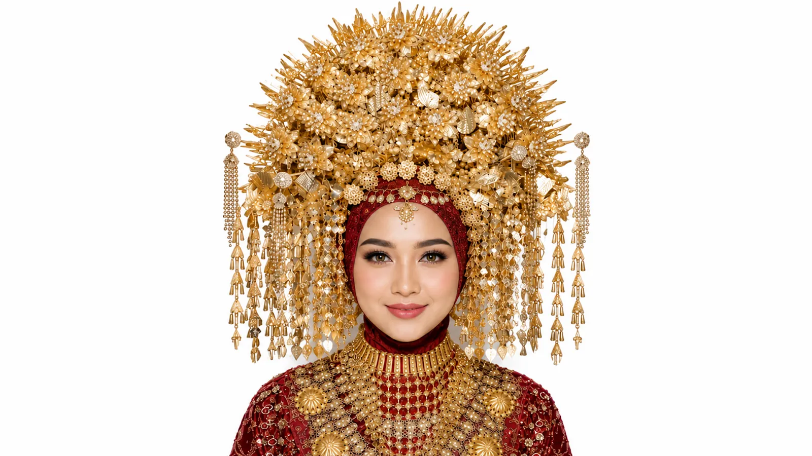
MALALA
2026
PANDUAN LENGKAP PARIWISATA & BUDAYA RANAH MINANG
50 Destinasi · 30 Budaya · 36 Kuliner · 26 Event
MINANGKAOS
E-Book Eksklusif
Danau Singkarak
10
Masjid Raya Syekh Ahmad Khatib Al-Minangkabawi
11
Kepulauan Mentawai (Surga Surfing World Class)
12
Pantai Air Manis & Batu Malin Kundang
13
Geopark Silokek & Batang Kuantan
14
Kawasan Seribu Rumah Gadang Solok Selatan
15
Air Terjun Lembah Anai
16
Pulau Pasumpahan
17
Puncak Cemara Sawahlunto
18
Kebun Teh Alahan Panjang
19
Tarusan Kamang
20
Air Terjun Nyarai
21
Lembah Harau
22
Jembatan Akar Bayang
23
Candi Padang Roco & Percandian Dharmasraya
24
Goa Batu Kapal
25
Sawahlunto Warisan Dunia UNESCO
26
Gunung Talamau & 13 Telaga
27
Pulau Sirandah & Pulau Pagang
28
Gunung Talang & Danau Talang
29
Jembatan Kelok 9
30
Pantai Carocok & Pulau Cingkuak
31
Gua Ngalau Indah Payakumbuh
32
Malala Edisi Eksklusif
Hal. 2
Jam Gadang & Kota Bukittinggi
33
Gunung Marapi
34
Pulau Cubadak
35
Museum Adityawarman
36
Museum Rumah Kelahiran Bung Hatta
37
Bukit Langkisau Painan
38
Pantai Gandoriah & Pulau Angso Duo
39
Air Terjun Lubuak Tampuruang
40
Istano Basa Pagaruyung
41
Puncak Lawang & Danau Maninjau
42
Desa Wisata Nagari Pariangan
43
Danau Biru Sawahlunto
44
Kawasan Wisata Bahari Mandeh
45
Ngarai Sianok & Lubang Jepang
46
Danau Kembar (Danau Diatas & Danau Dibawah)
47
Janjang Koto Gadang & Great Wall Ngarai Sianok
48
Pantai Padang & Jembatan Siti Nurbaya
49
Benteng Fort de Kock & Jembatan Limpapeh
50
Tugu Khatulistiwa Bonjol & Museum Tuanku Imam Bonjol
51
Cagar Alam Rimbo Panti & Pemandian Air Panas Alami
52
Pulau Pamutusan & Spot Snorkeling Pasir Putih
53
Puncak Gobah & Panorama Danau Singkarak
54
Desa Wisata Kubu Gadang Padang Panjang
55
Air Terjun Lubuk Hitam Tiga Tingkat
56
Danau Laut Tinggal Pasaman Barat
57
Malala Edisi Eksklusif
Hal. 3
Puncak Polan & Paralayang Sawahlunto
58
Pantai Tiku & Tanjung Mutiara Agam
59
Rumah Gadang
61
Tradisi Marosok (Tawar-Menawar Rahasia)
62
Upacara Batagak Penghulu
63
Upacara Turun Mandi
64
Tradisi Surau & Merantau
65
Saluang & Dendang (Seruling Bambu & Puisi Vokal)
66
Pacu Jawi Tradisional (Alek Sawah)
67
Tradisi Balimau
68
Tari Pasambahan & Siriah Carano
69
Musik Tradisional Talempong (Pacik & Rea)
70
Seni Ukir Rumah Gadang (Ukiran Minangkabau)
71
Tari Piring (Atraksi Piring Pecah)
72
Tradisi Bakaba & Sastra Tutur Minang
73
Tari Payung Minangkabau
74
Tradisi Manyiriah & Batimbang Tando
75
Kain Songket Pandai Sikek
76
Seni Beladiri Silek Minang
77
Upacara Adat Makan Bajamba
78
Kesenian Randai
79
Tradisi Pacu Kuda Tradisional
80
Pakaian Adat Bundo Kanduang
81
Sistem Matrilineal Minangkabau
82
Malala Edisi Eksklusif
Hal. 4
Seni Beladiri Silek Harimau Minangkabau
83
Kesenian Rabab Pasisie (Rebab Pesisir Minang)
84
Tradisi Batagak Kudo-Kudo (Gotong Royong Atap Rumah)
85
Tradisi Serak Gulo Padang (Hujan Gula Akulturasi)
86
Alat Musik Tradisional Bansi Minangkabau
87
Tradisi Manyerak Bareh Kunik (Beras Kunyit Sakral)
88
Kesenian Gandang Tambua & Gandang Tasa
89
Tradisi Bakajang / Sampan Alek Gunuang Malintang
90
Rendang Daging
92
Sala Lauak
93
Palai Rinuak
94
Gulai Cancang
95
Katupek Gulai Paku
96
Gulai Tunjang
97
Pinyaram
98
Rakik Maco
99
Ayam Pop Bukittinggi
100
Goreng Ikan Bilih Balado
101
Bareh Randang
102
Sate Padang & Pariaman
103
Gulai Gajebo (Sandung Lamur Asam Padeh)
104
Sate Lokan Pesisir
105
Keripik Sanjai & Sanjai Balado
106
Kue Bika Koto Baru
107
Malala Edisi Eksklusif
Hal. 5
Bubur Kampiun Bukittinggi
108
Gulai Jariang (Gulai Jengkol Khas Minang)
109
Lompong Sagu
110
Teh Talua (Teh Telur Khas Minang)
111
Lamang Tapai
112
Dendeng Balado & Dendeng Batokok
113
Gulai Itiak Lado Mudo
114
Soto Padang
115
Ampiang Dadiah
116
Nasi Kapau & Gulai Tambusu
117
Asam Padeh Daging & Ikan Tongkol
118
Samba Lado Tanak Minang
119
Gulai Banak (Gulai Otak Sapi Rempah)
120
Rendang Lokan Pesisir Selatan
121
Teh Kawa Daun Tradisional
122
Kipang Kacang Pariaman
123
Dadiah Minangkabau Murni (Yoghurt Susu Kerbau Tabung Bambu)
124
Gulai Kurma Daging Minang
125
Pangek Masin Ikan Mas Ranah Minang
126
Karupuak Sanjai Batokok & Karupuak Kuah Sate
127
Pacu Jawi (Atraksi Balap Sapi Lumpur)
129
Festival Budaya Pamalayu Dharmasraya
130
Festival Tradisi Maapam Pasaman (Rekor MURI)
131
Pacu Kudo Tradisional (Equestrian Heritage)
132
Malala Edisi Eksklusif
Hal. 6
Alek Barajang / Alek Bakajang (KEN)
133
Festival Langkisau Pesisir Selatan
134
Festival Muaro Padang (Heritage & Waterfront)
135
Pesona Budaya Hoyak Tabuik Piaman (KEN)
136
Festival Pesona Minangkabau (KEN)
137
Festival Rakik-Rakik Danau Maninjau (KEN)
138
Sawahlunto International Music Festival / SIMFes (KEN)
139
Pacu Itiak Tradisional Payakumbuh & Limapuluh Kota
140
Payakumbuh Botuang Festival
141
Festival Siti Nurbaya (KEN)
142
Pasa Harau Art & Culture Festival (KEN)
143
Festival Pesona Danau Maninjau & Kelok 44
144
Festival Danau Singkarak & Seni Tradisi
145
Festival 5 Danau Solok (KEN)
146
Festival Rang Solok Baralek Gadang (KEN)
147
Sawahlunto International Songket Carnival / SISSCa (KEN)
148
Festival Kuliner Minangkabau Marandang Akbar
149
Tour de Singkarak (Balap Sepeda Internasional)
150
Festival Serak Gulo Padang Heritage
151
Festival Pesona Mentawai (KEN)
152
Festival Pesona Air Bangis Pasaman Barat
153
Festival Batang Arau Heritage & Padang Waterfront
154
Malala Edisi Eksklusif
Hal. 7
19 KAB / KOTA
PETA PARIWISATA & BUDAYA SUMBAR
Panduan zonasi eksplorasi destinasi, adat budaya, dan gastronomi di Sumatera Barat.
1. DATARAN TINGGI & LUHAK NAN TUO
Jantung Minang
Tanah Datar, Agam, Bukittinggi, Padang Panjang, Payakumbuh, 50 Kota: Jam Gadang, Lembah Harau, Pagaruyung, Kelok 9, Danau Maninjau, Songket Pandai Sikek, Nasi Kapau.
2. PESISIR BARAT & SURGA BAHARI
Pesisir & Pulau
Kota Padang, Pariaman, Padang Pariaman, Pesisir Selatan, Mentawai: Kawasan Mandeh, Pantai Air Manis, Kepulauan Mentawai, Air Terjun Nyarai, Pantai Carocok, Sate Padang & Sala Lauak.
3. DANAU, LEMBAH & WARISAN UNESCO
Geopark & Danau
Kota & Kab. Solok, Sawahlunto, Sijunjung, Solok Selatan: Danau Singkarak, Danau Kembar, Kota Warisan Dunia Sawahlunto, Geopark Silokek, Seribu Rumah Gadang, Ikan Bilih.
4. PERBATASAN & SITUS SEJARAH PURBA
Arkeologi & Alam
Pasaman, Pasaman Barat, Dharmasraya: Gunung Talamau (13 Telaga), Percandian Dharmasraya & Candi Padang Roco, Garis Khatulistiwa Bonjol.
MINANGKAOS
Halaman Peta Zonasi 19 Kab/Kota
Hal. 8
BAGIAN I
50 DESTINASI PILIHAN
EXPLORE THE WONDERS OF MINANGKABAU
DESTINASI
WISATA ALAM
& SEJARAH
Kompilasi komprehensif 38 surga tersembunyi, danau vulkanik, kemegahan ngarai dan lembah granit, pesona pulau bahari, hingga situs cagar budaya peninggalan purba di Sumatera Barat.
Kategori Destinasi:
🏔️ Danau & Gunung
🏞️ Lembah & Geopark
🏝️ Pantai & Bahari
🏛️ Sejarah & Budaya
MINANGKAOS
BAB 1
Hal. 9
MALALA 2026 • Kabupaten Solok & Tanah Datar

Danau & Gunung
Danau Singkarak
📍 Jalan Lintas Sumatera, Solok - Tanah Datar
Danau Singkarak merupakan danau tektonik terluas kedua di Pulau Sumatera dengan luas mencapai 107,8 km² yang membentang menawan di antara dua wilayah administrasi, yaitu Kabupaten Solok dan Kabupaten Tanah Datar. Dikelilingi oleh barisan bukit hijau Bukit Barisan yang megah, danau ini menyajikan lanskap perairan tenang berlatar udara pegunungan yang sejuk dan menenangkan jiwa.
Keunikan ekologis yang sangat mendunia dari Danau Singkarak adalah menjadi satu-satunya habitat alami bagi Ikan Bilih (Mystacoleucus padangensis), spesies ikan air tawar endemik yang tidak dapat hidup di perairan lain. Di sepanjang pesisir danau, warung-warung kuliner lokal menyajikan olahan ikan bilih goreng renyah yang dimakan hangat bersama nasi putih dan sambal lado mudo khas Minang.
Selain pesona alaminya, Danau Singkarak dikenal secara internasional sebagai lintasan ikonik balap sepeda dunia Tour de Singkarak. Fasilitas dermaga perahu, dermaga kayu berfoto, serta akses Jalan Lintas Sumatera yang sangat mulus menjadikan Danau Singkarak destinasi persinggahan utama yang wajib dikunjungi saat berwisata ke Sumatera Barat.
Daya Tarik Utama:
- ✓ Habitat Asli Ikan Bilih Endemik
- ✓ Panorama Bukit Barisan 360°
- ✓ Lintasan Ikonik Tour de Singkarak
Waktu Terbaik: Pagi dan Sore Hari
Hal. 10
MALALA 2026 • Kota Padang

Alam
Masjid Raya Syekh Ahmad Khatib Al-Minangkabawi
📍 Jalan Khatib Sulaiman, Kota Padang
Masjid Raya Sumatera Barat adalah masjid megah ikonik di Kota Padang yang diakui secara internasional atas keunikan arsitekturnya yang memenangi penghargaan Internasional Abdullatif Al Fozan Award. Masjid ini dirancang tanpa kubah bulat konvensional, melainkan mengadopsi bentukan atap bentanggonjong khas Rumah Gadang Minangkabau yang berpadu dengan motif kain bentangan serban Nabi Muhammad SAW.
Dinding luar masjid dihiasi oleh ukiran keramik kaligrafi Arab bernuansa motif tenun Songket Minang yang sangat detail dan megah. Struktur bangunan masjid dirancang khusus dengan teknologi tahan gempa bumi hingga 10 Skala Richter serta dapat difungsikan sebagai lokasi evakuasi tsunami masyarakat pesisir Padang.
Interior lantai dua masjid menyajikan ruang shalat tanpa tiang tengah yang sangat luas dan sejuk, dinaungi ukiran kayu emas di langit-langit atap. Pada malam hari, tata lampu arsitektural masjid memancarkan keindahan cahaya yang sangat romantis dan menjadi monumen kebanggaan keagamaan masyarakat Minangkabau.
Daya Tarik Utama:
- ✓ Pemenang Penghargaan Arsitektur Internasional
- ✓ Atap Gonjong Minang Tahan Gempa & Tsunami
- ✓ Tata Lampu Arsitektural Malam Hari
Waktu Terbaik: Sore dan Malam Hari
Hal. 11
MALALA 2026 • Kabupaten Kepulauan Mentawai
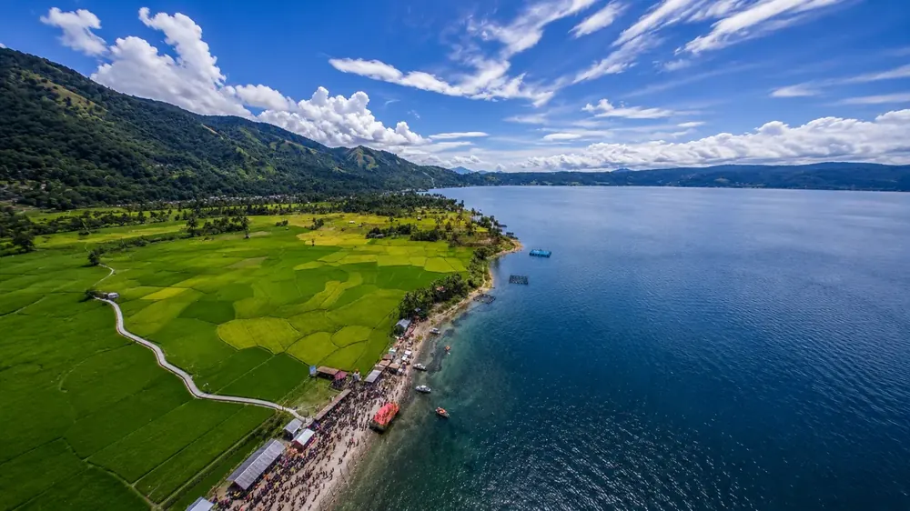
Pantai & Bahari
Kepulauan Mentawai (Surga Surfing World Class)
📍 Kepulauan Mentawai, Sumatera Barat
Kepulauan Mentawai adalah gugusan pulau eksotis di Samudra Hindia yang diakui secara global sebagai salah satu destinasi selancar tropis terbaik di planet bumi. Terdiri dari empat pulau utama yaitu Siberut, Sipora, Pagai Utara, dan Pagai Selatan, Mentawai menawarkan lebih dari 40 spot gulungan ombak tabung sempurna berkelas dunia seperti HTs (Hollow Trees), Macaronis, dan Lance's Left.
Selain pesona ombak kelas dunia yang menarik ribuan peselancar profesional internasional, Mentawai menyimpan kekayaan budaya suku asli Suku Mentawai yang merupakan salah satu peradaban tertua di Nusantara. Wisatawan dapat menjelajahi keaslian hutan hujan tropis Siberut, menginap di Uma (rumah adat kayu), serta mempelajari tradisi seni tato tubuh tertua (Titi Mentawai) dan tarian Turuk Laggai.
Perairan Mentawai sangat bening berair toska, menjadi surga snorkeling dan diving dengan terumbu karang alami yang kaya akan biota laut tropis. Mentawai menyajikan perpaduan sempurna antara petualangan olahraga ekstrem dan petualangan antropologi budaya yang tiada duanya.
Daya Tarik Utama:
- ✓ 40+ Spot Ombak Tabung Kelas Dunia (HTs, Macaronis)
- ✓ Kebudayaan Asli Suku Mentawai & Rumah Uma
- ✓ Trek Hutan Hujan Tropis Taman Nasional Siberut
Waktu Terbaik: April hingga Oktober (Musim Ombak Terbaik)
Hal. 12
MALALA 2026 • Kota Padang

Pantai & Bahari
Pantai Air Manis & Batu Malin Kundang
📍 Kecamatan Padang Selatan, Kota Padang
Pantai Air Manis adalah destinasi pantai legenda paling terkenal di Sumatera Barat yang terletak di selatan Kota Padang. Pantai ini tersohor di seluruh Nusantara karena menjadi tempat beradanya situs batu relief 'Batu Malin Kundang', yaitu batu berbentuk serpihan kapal dan tubuh manusia bersujud yang dipercayai sebagai perwujudan tokoh Malin Kundang yang dikutuk menjadi batu oleh ibunya karena durhaka.
Situs Batu Malin Kundang yang terletak di tepi pantai menjadi magnet utama wisatawan untuk berfoto dan merenungkan pesan moral mendalam mengenai pentingnya rasa hormat dan kasih sayang anak kepada orang tua dalam filosofi kebudayaan Minangkabau.
Pantai Air Manis memiliki hamparan pasir landai yang luas berlatar pemandangan Gunung Padang dan Pulau Pisang Kecil. Wisatawan dapat berjalan kaki menyusuri laut saat air surut menuju Pulau Pisang Kecil atau menyewa wahana motor ATV untuk menjelajahi keindahan garis pantai di sore hari.
Daya Tarik Utama:
- ✓ Situs Bersejarah Legenda Batu Malin Kundang
- ✓ Jalan Kaki Saat Surut ke Pulau Pisang Kecil
- ✓ Wahana Motor ATV & Sunset Pantai Padang
Waktu Terbaik: Sore Hari (15:30 - 18:30 WIB)
Hal. 13
MALALA 2026 • Kabupaten Sijunjung
Lembah & Geopark
Geopark Silokek & Batang Kuantan
📍 Kecamatan Sijunjung, Kabupaten Sijunjung
Geopark Silokek di Kabupaten Sijunjung adalah kawasan warisan geologi purba yang telah diakui sebagai Geopark Nasional Indonesia. Kawasan ini menyajikan bentang alam memukau berupa gugusan batuan karst purba berusia lebih dari 350 juta tahun yang menjulang tegak mengapit aliran sungai Batang Kuantan berair deras.
Di Geopark Silokek, wisatawan dapat menikmati petualangan arung jeram (white water rafting) di sungai Batang Kuantan, menjelajahi terowongan goa alam ber-stalaktit antik seperti Goa Ngalau Bijo, serta menyaksikan keaslian hutan hujan tropis yang menjadi habitat satwa dilindungi.
Kawasan ini juga kaya akan peninggalan sejarah dan kebudayaan, seperti situs perkampungan adat kuno dan jalur kereta api tua peninggalan zaman kolonial. Geopark Silokek adalah surga tersembunyi (hidden gem) yang sangat sempurna bagi pecinta ekowisata dan petualangan alam.
Daya Tarik Utama:
- ✓ Tebing Karst Purba 350 Juta Tahun
- ✓ Arung Jeram Sungai Batang Kuantan
- ✓ Goa Alam Ngalau Bijo & Hutan Tropis
Waktu Terbaik: Pagi dan Siang Hari
Hal. 14
MALALA 2026 • Kabupaten Solok Selatan
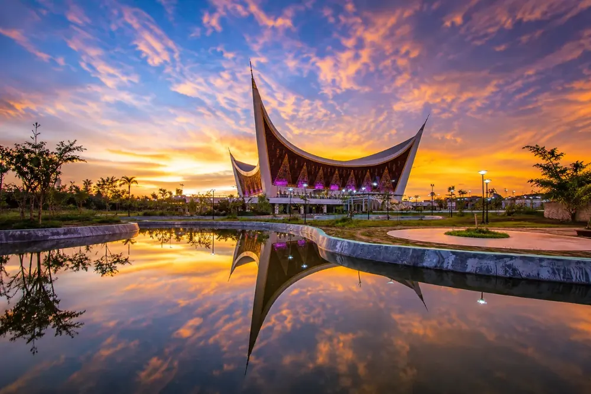
Desa Wisata
Kawasan Seribu Rumah Gadang Solok Selatan
📍 Nagari Koto Baru, Kabupaten Solok Selatan
Kawasan Seribu Rumah Gadang di Nagari Koto Baru, Kabupaten Solok Selatan, adalah cagar budaya pemukiman tradisional khas Minangkabau yang menyajikan pemandangan ratusan Rumah Gadang kuno yang berdiri berdampingan secara utuh. Kawasan ini dinobatkan sebagai Kampung Adat Terpopuler di Indonesia oleh Kementerian Pariwisata RI.
Rumah-rumah adat kuno di kawasan ini berasal dari berbagai suku khas Minangkabau (seperti suku Malayu, Bariang, Durian, dan Tigo Lareh) dengan ragam arsitektur gonjong yang khas, mulai dari gonjong empat hingga gajah maharam. Yang mengagumkan, sebagian besar Rumah Gadang ini masih dihuni aktif secara turun-temurun oleh masyarakat adat.
Wisatawan dapat merasakan pengalaman imersif menginap di homestay Rumah Gadang kuno, menikmati sajian makan bajamba bersama pemangku adat, serta mempelajari kesenian Randai dan ukiran kayu tradisional Minangkabau di tengah keasrian desa.
Daya Tarik Utama:
- ✓ Ratusan Rumah Gadang Kuno Berdampingan
- ✓ Kampung Adat Terpopuler di Indonesia
- ✓ Menginap di Homestay Rumah Gadang Kuno
Waktu Terbaik: Pagi dan Sore Hari
Hal. 15
MALALA 2026 • Kabupaten Tanah Datar
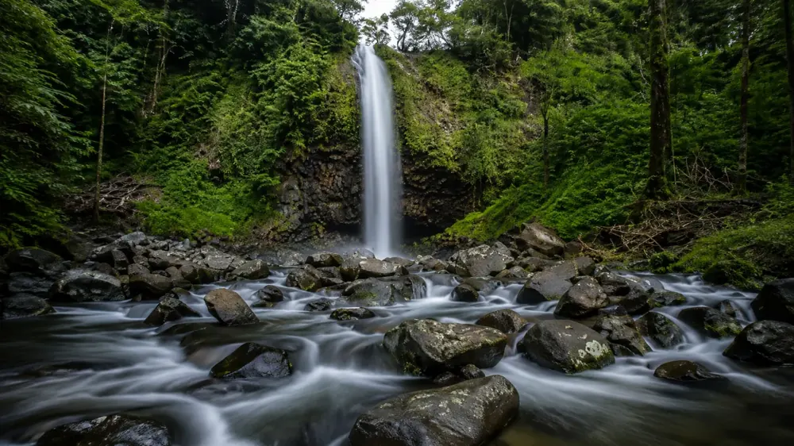
Air Terjun & Alam
Air Terjun Lembah Anai
📍 Jalan Lintas Padang - Bukittinggi, Kab. Tanah Datar
Air Terjun Lembah Anai merupakan maskot pariwisata alam Sumatera Barat yang memiliki lokasi sangat unik, yaitu persis di tepi jalan raya utama lintas Padang - Bukittinggi. Air terjun setinggi kurang lebih 35 meter ini bersumber dari mata air Gunung Singgalang yang sangat jernih dan dingin, meluncur deras membelah tebing hutan tropis Cagar Alam Lembah Anai.
Wisatawan yang melintasi jalan poros ini selalu menyempatkan diri untuk singgah, beristirahat dari perjalanan, dan menikmati percikan air segar yang terbawa angin dari air terjun. Saat musim hujan tiba, debit air terjun menjadi sangat besar dan mengeluarkan suara gemuruh alam yang sangat dramatis.
Di sekitar air terjun, banyak terdapat warung yang menjual kuliner lokal seperti perkedel jagung hangat, kacang rebus, dan kopi panas yang sangat cocok dinikmati sambil memandangi kemegahan air terjun serta jembatan rel kereta api peninggalan zaman kolonial Belanda yang melintang kokoh di atas lembah.
Daya Tarik Utama:
- ✓ Lokasi Unik Tepat di Tepi Jalan Lintas Utama
- ✓ Mata Air Gunung Singgalang Super Jernih
- ✓ Pemandangan Jembatan Rel Kolonial Belanda
Waktu Terbaik: Pagi dan Siang Hari
Hal. 16
MALALA 2026 • Kota Padang
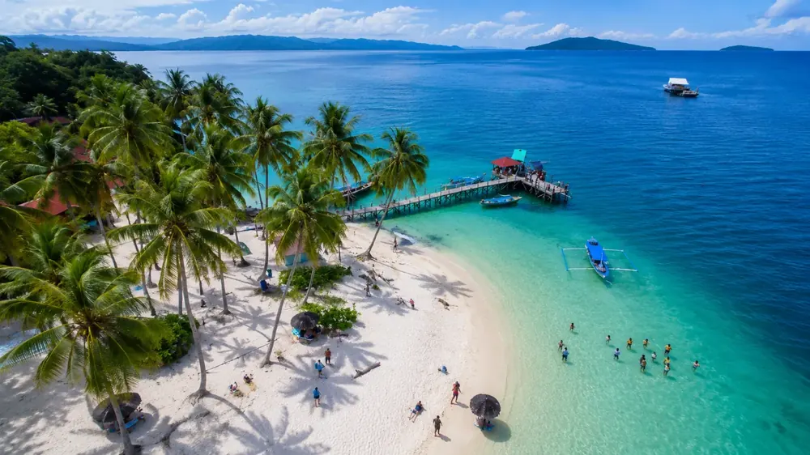
Pantai & Bahari
Pulau Pasumpahan
📍 Bungus Teluk Kabung, Kota Padang
Pulau Pasumpahan adalah surga tropis mungil di perairan barat Kota Padang yang akhir-akhir ini sangat viral dan trending di media sosial karena kejernihan perairannya yang menyerupai Maldives. Pasir pantainya berwarna putih bersih dan sangat halus bak tepung, sementara gradasi warna air lautnya memantulkan warna toska bening yang luar biasa cantik.
Kawasan perairan di sekitar Pulau Pasumpahan dikelilingi oleh terumbu karang hidup yang sehat dan menjadi rumah bagi ribuan ikan karang hias. Oleh karena itu, pulau ini menjadi lokasi favorit untuk aktivitas snorkeling, diving, maupun berenang dengan pelampung (floaties) di perairan dangkal yang sangat tenang.
Wisatawan juga dapat mendaki bukit kecil di tengah pulau untuk menikmati pemandangan laut dari ketinggian yang spektakuler. Penginapan kayu ala resor pantai berjejer menghadap laut lepas, menjadikan pulau ini pilihan sempurna untuk melarikan diri dari hiruk-pikuk kota (island getaway).
Daya Tarik Utama:
- ✓ Gradasi Air Laut Toska Bening Ala Maldives
- ✓ Spot Snorkeling Karang Dangkal Terbaik
- ✓ Trekking Bukit Pandang Pulau Pasumpahan
Waktu Terbaik: Pagi hingga Sore Hari
Hal. 17
MALALA 2026 • Kota Sawahlunto
Sejarah
Puncak Cemara Sawahlunto
📍 Puncak Cemara Sawahlunto, Kota Sawahlunto, Sumatera Barat
Puncak Cemara Sawahlunto terletak di kawasan cagar budaya tambang batu bara Ombilin Sawahlunto yang telah diakui dunia oleh UNESCO. Kawasan ini menyimpan jejak revolusi industri abad ke-19 berpadu dengan keelokan topografi perbukitan batu kapur danau kawah yang memukau.
Kawasan ini memiliki daya tarik visual yang sangat kuat dengan topografi alami yang fotogenik, menjadikannya destinasi favorit bagi para penjelajah alam, fotografer, serta keluarga yang ingin menikmati ketenangan alam Ranah Minang.
Aksesibilitas dan fasilitas penunjang wisata di sekitar lokasi terus dikembangkan secara berkelanjutan untuk memberikan kenyamanan dan pengalaman berwisata yang berkesan bagi setiap pelancong.
Daya Tarik Utama:
- ✓ Panorama visual autentik khas Kota Sawahlunto
- ✓ Spot fotografi lanskap alam yang sangat instagramable
- ✓ Udara bersih alami dan keasrian lingkungan yang terjaga
Waktu Terbaik: Pagi Hari (07:00 - 11:00 WIB) & Menjelang Senja
Hal. 18
MALALA 2026 • Kabupaten Solok

Alam
Kebun Teh Alahan Panjang
📍 Alahan Panjang, Kabupaten Solok
Kawasan Kebun Teh Alahan Panjang di Kabupaten Solok adalah salah satu perkebunan teh tertinggi di Indonesia yang membentang bak permadani hijau sejauh mata memandang di ketinggian di atas 1.500 mdpl. Berada di jalur menuju Danau Kembar, hamparan kebun teh ini menawarkan suasana sejuk khas dataran tinggi dengan udara bersih bersuhu 15-20 derajat Celcius.
Pemandangan pagi hari di kebun teh ini sungguh magis, saat kabut tipis perlahan turun menyelimuti pucuk-pucuk teh sementara para pemetik teh lokal mulai bekerja menggunakan topi anyaman bambu. Pengunjung dapat berjalan santai menyusuri lorong-lorong di antara pepohonan teh, berburu spot foto instagramable bernuansa hijau alami.
Fasilitas agrowisata memungkinkan wisatawan untuk bersantai di kedai kopi dan menikmati teh asli produksi lokal, didampingi penganan ringan khas Solok. Ini merupakan oase kedamaian bagi siapa saja yang ingin mencuci mata dari kejenuhan rutinitas kota.
Daya Tarik Utama:
- ✓ Hamparan Permadani Hijau di 1500+ mdpl
- ✓ Udara Sangat Sejuk & Berkabut di Pagi Hari
- ✓ Agrowisata Santai Minum Teh Lokal
Waktu Terbaik: Pagi Hari (06:00 - 10:00 WIB)
Hal. 19
MALALA 2026 • Kabupaten Agam
Danau & Gunung
Tarusan Kamang
📍 Kec. Kamang Magek, Kabupaten Agam
Tarusan Kamang adalah sebuah fenomena geologi menakjubkan berupa 'Danau Ajaib' yang terletak di Kecamatan Kamang Magek, Kabupaten Agam. Danau karst ini memiliki siklus unik di mana pada suatu musim ia akan dipenuhi air jernih layaknya danau sungguhan, namun pada musim lainnya airnya bisa surut total dan berubah menjadi padang rumput hijau tempat warga menggembala ternak.
Fenomena surut dan pasangnya air danau ini berasal dari sungai bawah tanah di celah-celah batu kapur purba yang belum sepenuhnya terpecahkan mekanismenya. Saat danau sedang berair penuh, airnya sangat jernih memantulkan bayangan rimbun pepohonan dan bukit barisan di sekitarnya.
Bagi pengunjung, menyaksikan keajaiban alam ini merupakan pengalaman langka. Warga setempat menyewakan rakit bambu bagi wisatawan yang ingin mengarungi danau. Suasananya yang sejuk, damai, dan sangat alami membuat Tarusan Kamang menjadi permata tersembunyi Sumatera Barat yang wajib dieksplorasi.
Daya Tarik Utama:
- ✓ Fenomena Danau Ajaib (Pasang Surut Misterius)
- ✓ Rakit Bambu Tradisional di Tengah Danau
- ✓ Lanskap Bukit Kapur Hijau Memukau
Waktu Terbaik: Pagi dan Sore Hari
Hal. 20
MALALA 2026 • Kabupaten Padang Pariaman
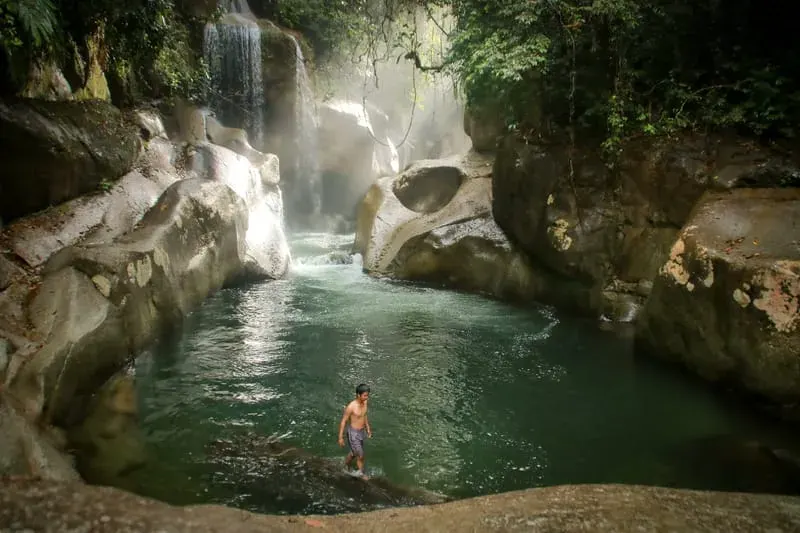
Air Terjun & Alam
Air Terjun Nyarai
📍 Hutan Lindung Gamaran, Kab. Padang Pariaman
Air Terjun Nyarai adalah destinasi ekowisata tersembunyi yang terletak di dalam kawasan Hutan Lindung Gamaran, Nagari Salibutan, Kabupaten Padang Pariaman. Untuk mencapai air terjun ini, wisatawan harus menempuh trekking menyusuri hutan hujan tropis perawan sepanjang 3,5 hingga 5 kilometer selama kurang lebih 1,5 hingga 2 jam perjalanan dengan pemandu lokal.
Air terjun Nyarai terbentuk dari jutaan tahun proses erosi batuan breksi oleh pusaran air sungai, menciptakan kolam alami berwarna hijau zamrud yang sangat jernih dan dalam, dikelilingi oleh bongkahan batu raksasa berlumut di tengah hutan rimba yang masih sangat perawan.
Keunikan utama Nyarai adalah aktivitas cliff jumping dan tombak ikan (ikan garing) ala anak nagari yang dapat dilakukan wisatawan. Sensasi melompat dari tebing batu setinggi beberapa meter ke dalam kolam hijau zamrud yang dingin dan segar menjadikan Nyarai surga bagi pencinta petualangan alam liar.
Daya Tarik Utama:
- ✓ Trekking 2 Jam di Hutan Hujan Perawan
- ✓ Kolam Alami Hijau Zamrud Sangat Jernih
- ✓ Cliff Jumping & Tombak Ikan Tradisional
Waktu Terbaik: Pagi Hari (07:00 - 12:00 WIB)
Hal. 21
MALALA 2026 • Kabupaten Limapuluh Kota
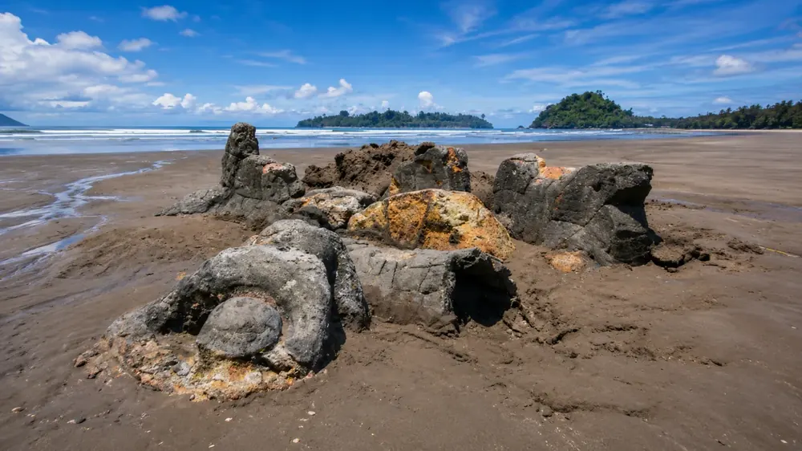
Lembah & Geopark
Lembah Harau
📍 Kecamatan Harau, Kab. Limapuluh Kota
Lembah Harau adalah cagar alam granit spektakuler di Kabupaten Limapuluh Kota yang kerap dijuluki para pelancong dunia sebagai 'Yosemite-nya Indonesia'. Lembah ini dikelilingi oleh dinding tebing batu granit terjal setinggi 100 hingga 500 meter yang berdiri tegak mengapit hamparan sawah hijau di dasar lembah, menciptakan bentang alam geologi yang luar biasa memukau.
Di balik kemegahan tebing batu granitnya, Lembah Harau menyimpan sekumpulan air terjun alami berair bening sejuk yang jatuh langsung dari puncak tebing, seperti Sarasah Bunta, Sarasah Murai, dan Aka Barayun. Suara deburan air alami yang berpadu dengan kicauan burung hutan tropis memberikan efek relaksasi jiwa yang tiada tara bagi setiap pengunjung.
Saat ini kawasan Lembah Harau dilengkapi dengan berbagai fasilitas wisata modern seperti area glamping di kaki tebing, rute bersepeda pedesaan, hingga taman tematik berkonsep ramah lingkungan. Tempat ini sangat ideal untuk liburan keluarga, kegiatan luar ruangan (outbound), hingga olahraga panjat tebing kelas dunia.
Daya Tarik Utama:
- ✓ Tebing Granit Terjal 500 Meter
- ✓ Air Terjun Sarasah Bunta & Aka Barayun
- ✓ Area Glamping & Panjat Tebing World Class
Waktu Terbaik: Pagi Hari (07:00 - 11:00 WIB)
Hal. 22
MALALA 2026 • Kabupaten Pesisir Selatan

Alam
Jembatan Akar Bayang
📍 Nagari Puluik-Puluik, Kab. Pesisir Selatan
Jembatan Akar Bayang adalah keajaiban bio-arsitektur hidup yang terletak di Nagari Puluik-Puluik, Kecamatan Bayang Utara, Kabupaten Pesisir Selatan. Jembatan alami ini dirintis sekitar tahun 1890 oleh Pakih Sohan, seorang guru agama Islam lokal yang menganyam akar-akar muda dua pohon beringin (Ficus benjamina) dan pohon jawi-jawi di kedua sisi Sungai Bayang agar murid-muridnya dapat menyeberang.
Selama lebih dari satu abad, akar-akar hidup ini tumbuh saling melilit dan menyatu secara alami membentuk jembatan sepanjang kurang lebih 25 meter yang semakin kokoh dari tahun ke tahun, justru semakin kuat seiring waktu tidak seperti jembatan buatan manusia.
Jembatan Akar Bayang menjadi perwujudan nyata filosofi Minangkabau 'Alam Takambang Jadi Guru' (Alam yang terbentang menjadi guru kehidupan). Keajaiban simbiosis antara kecerdikan manusia dan pertumbuhan alam ini menarik perhatian wisatawan domestik dan peneliti internasional.
Daya Tarik Utama:
- ✓ Bio-Arsitektur Hidup Berusia 130+ Tahun
- ✓ Filosofi Alam Takambang Jadi Guru
- ✓ Jembatan yang Semakin Kuat Seiring Waktu
Waktu Terbaik: Pagi dan Siang Hari
Hal. 23
MALALA 2026 • Kabupaten Dharmasraya
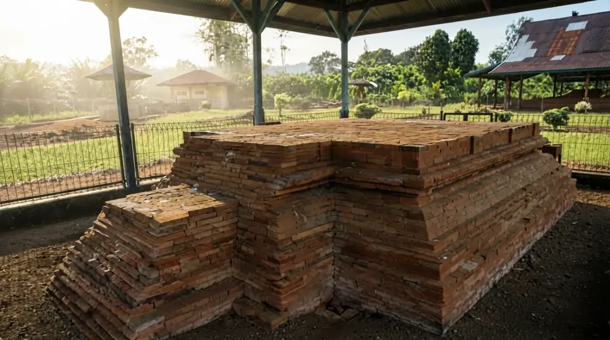
Sejarah
Candi Padang Roco & Percandian Dharmasraya
📍 Jorong Sungai Langsek, Kab. Dharmasraya
Candi Padang Roco merupakan kompleks percandian Buddha peninggalan Kerajaan Melayu Dharmasraya (Swarnabhumi) abad ke-13 yang berlokasi di Jorong Sungai Langsek, Kabupaten Dharmasraya. Situs arkeologi bersejarah ini merupakan tujuan Ekspedisi Pamalayu dari Kerajaan Singhasari (Jawa Timur) di mana Raja Kertanegara menghadiahkan arca suci Amoghapasa kepada Raja Tribhuwanaraja.
Kompleks ini terdiri dari empat struktur candi bata merah (Padang Roco I hingga IV) dengan arsitektur Buddha aliran Tantra-Mahayana. Candi utamanya berukuran 21x21 meter dengan tangga batu menghadap empat arah mata angin, menunjukkan kemajuan peradaban kerajaan maritim kuno Sumatera.
Terletak di sepanjang Daerah Aliran Sungai Batanghari, situs ini merefleksikan kejayaan jalur perdagangan sungai dan maritim kerajaan kuno Melayu. Bagi pecinta sejarah dan arkeologi, Candi Padang Roco menawarkan jendela menuju peradaban Nusantara pra-Islam yang sangat langka.
Daya Tarik Utama:
- ✓ Peninggalan Kerajaan Dharmasraya Abad ke-13
- ✓ Arca Suci Amoghapasa & Ekspedisi Pamalayu
- ✓ Arsitektur Buddha Tantra-Mahayana Langka
Waktu Terbaik: Pagi dan Siang Hari
Hal. 24
MALALA 2026 • Kabupaten Solok Selatan
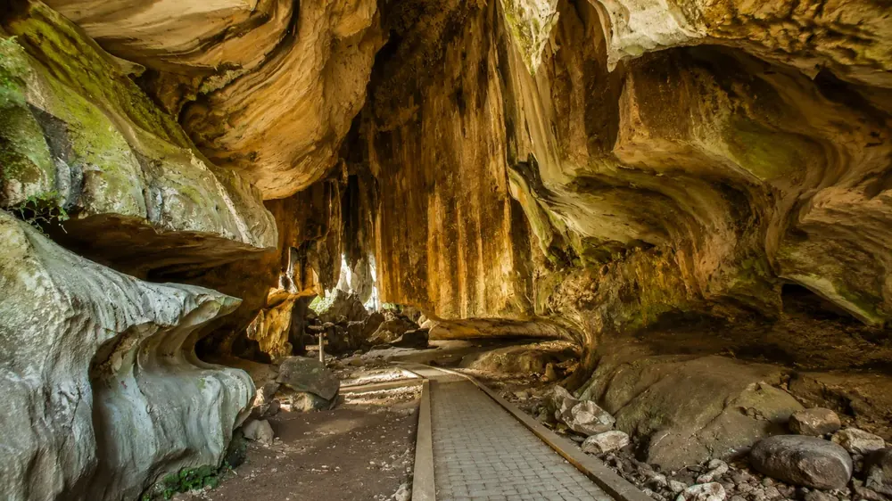
Lembah & Geopark
Goa Batu Kapal
📍 Nagari Sungai Kunyit Barat, Kab. Solok Selatan
Goa Batu Kapal adalah keajaiban geologi purba yang terletak di Kabupaten Solok Selatan. Goa karst ini terbentuk pada Periode Permian (250 hingga 299 juta tahun silam) dari endapan batu kapur laut yang terangkat ke atas permukaan oleh aktivitas tektonik dahsyat. Pertama kali ditemukan oleh pekerja perkebunan pada tahun 1984 dan dibuka untuk ekowisata pada 2017.
Goa ini memiliki empat ruang utama yang dinding-dinding karstnya yang menjulang tinggi secara menakjubkan menyerupai interior dek-dek kapal kayu raksasa (kapal), sehingga dinamakan Batu Kapal. Noda mineral alami menciptakan pola dinding warna-warni menakjubkan dalam gradasi hijau, kuning, oranye, cokelat, dan putih.
Fenomena paling spektakuler terjadi pada tengah hari ketika lubang-lubang di langit-langit goa memungkinkan berkas cahaya matahari masuk secara dramatis, menerangi sungai bawah tanah dan lantai goa dalam efek 'Cahaya Surga' yang sangat fotogenik.
Daya Tarik Utama:
- ✓ Formasi Karst Purba 250 Juta Tahun
- ✓ Efek Cahaya Surga Dramatis Tengah Hari
- ✓ Dinding Mineral Warna-Warni Alami
Waktu Terbaik: Siang Hari (11:00 - 13:00 WIB untuk Cahaya Surga)
Hal. 25
MALALA 2026 • Kota Sawahlunto
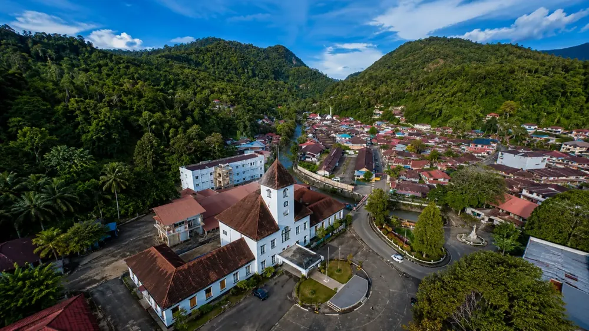
Sejarah
Sawahlunto Warisan Dunia UNESCO
📍 Kota Sawahlunto, Sumatera Barat
Kota Sawahlunto adalah kota tambang batu bara bersejarah yang didirikan pada tahun 1888 oleh insinyur industri Belanda sebagai tambang batu bara galian dalam pertama di Asia Tenggara. Pada Juli 2019, UNESCO secara resmi menetapkan Warisan Tambang Batu Bara Ombilin Sawahlunto sebagai Situs Warisan Dunia.
Objek wisata utama meliputi Lubang Mbah Soero, sebuah terowongan tambang batu bara bawah tanah sepanjang 185 meter yang dinamai menurut seorang mandor tambang yang dihormati. Di kompleks ini juga terdapat museum hidup industrial lengkap dengan arsitektur kolonial Belanda yang eksotis, gudang pengolahan batu bara Goedang Ranoet, serta depo lokomotif uap bersejarah Mak Itam (Lokomotif E1060).
Kota tua Sawahlunto kini menjelma menjadi museum terbuka raksasa di mana bangunan-bangunan kolonial Eropa abad ke-19 berdiri tegak berdampingan dengan galeri seni, kafe vintage, dan sentra kerajinan tenun Songket Silungkang.
Daya Tarik Utama:
- ✓ Situs Warisan Dunia UNESCO 2019
- ✓ Terowongan Tambang Lubang Mbah Soero
- ✓ Kota Tua Kolonial & Lokomotif Uap Bersejarah
Waktu Terbaik: Pagi dan Siang Hari
Hal. 26
MALALA 2026 • Kabupaten Pasaman Barat
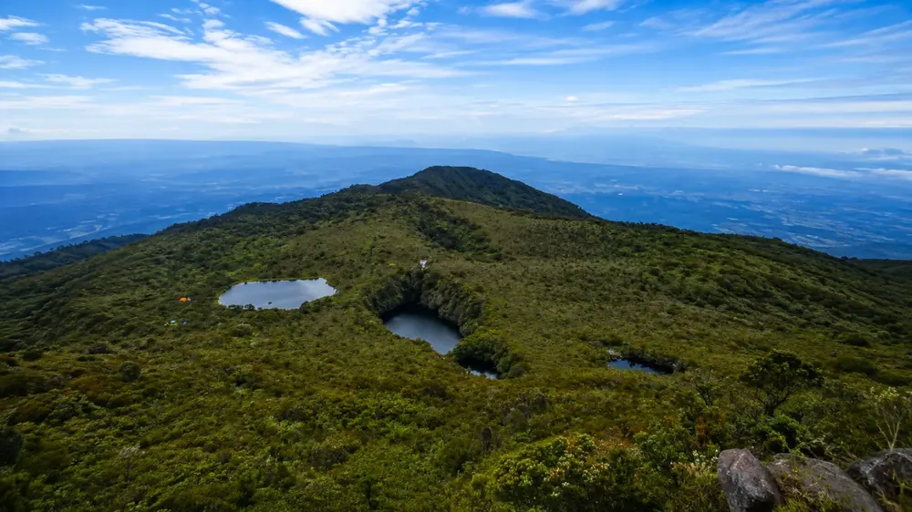
Danau & Gunung
Gunung Talamau & 13 Telaga
📍 Kecamatan Talamau, Kab. Pasaman Barat
Gunung Talamau berdiri pada ketinggian 2.912 meter di atas permukaan laut, menjadikannya puncak tertinggi di seluruh Sumatera Barat. Gunung berapi dormant yang terletak di Kabupaten Pasaman Barat ini diselimuti oleh cerita rakyat mengenai roh-roh penjaga gunung serta menyimpan fenomena geologi yang sangat langka.
Di dekat puncaknya terdapat sebuah kluster langka yang terdiri dari 13 danau kawah vulkanik alami (telaga), masing-masing dengan ukuran dan warna air yang berbeda-beda, termasuk Telaga Puti Sangka Bulan, Telaga Satwa, dan Telaga Rajo. Fenomena 13 telaga puncak ini sangat jarang ditemui di gunung berapi manapun di dunia.
Jalur pendakian menuju puncak Talamau menawarkan petualangan menembus hutan hujan montane primer yang sangat lebat, melewati air terjun bertingkat Sarasah Murai, hingga akhirnya muncul di padang edelweiss dan savana puncak dengan panorama 360 derajat seluruh daratan barat Sumatera.
Daya Tarik Utama:
- ✓ Puncak Tertinggi Sumatera Barat (2.912 mdpl)
- ✓ 13 Danau Kawah Vulkanik di Dekat Puncak
- ✓ Trek Hutan Montane & Air Terjun Sarasah Murai
Waktu Terbaik: Juni hingga Agustus (Musim Kering)
Hal. 27
MALALA 2026 • Kota Padang
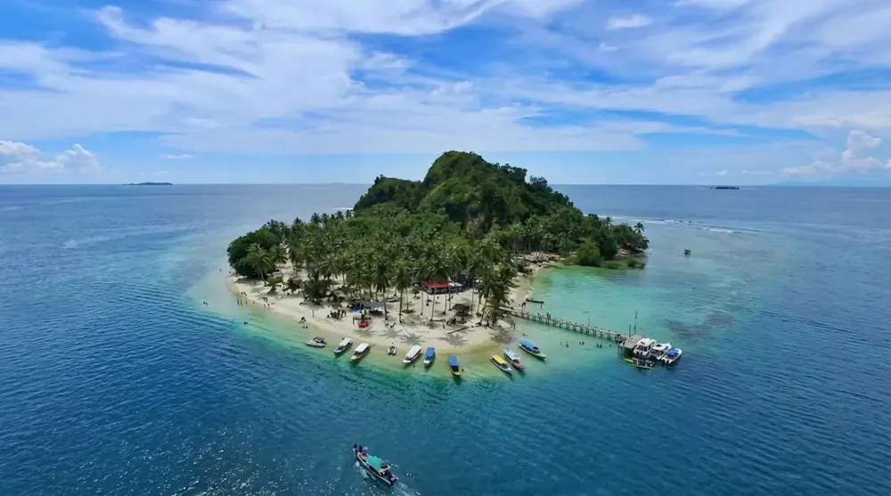
Pantai & Bahari
Pulau Sirandah & Pulau Pagang
📍 Bungus Teluk Kabung, Kota Padang
Pulau Sirandah dan Pulau Pagang adalah dua pulau tropis tak berpenghuni yang terletak di perairan Bungus Teluk Kabung, dipelihara sebagai kawasan konservasi laut dan destinasi ekowisata bahari. Kedua pulau ini memiliki pantai pasir putih bersih yang dikelilingi oleh terumbu karang dangkal yang sangat sehat dan menjadi habitat penyu sisik (Hawksbill) dan ribuan ikan karang hias.
Keunikan ikonik Pulau Sirandah adalah Batu Sirandah, formasi batu laut raksasa berbentuk alami menyerupai penyu raksasa yang sedang beristirahat di tepi pantai. Formasi batu ikonik ini telah menjadi simbol dan spot foto paling dicari di gugusan pulau ini.
Perairan di antara kedua pulau ini sangat ideal untuk snorkeling, freediving, dan kayaking di atas air yang sangat jernih. Wisatawan dapat berkemah di pantai, membakar ikan segar tangkapan nelayan, dan menikmati malam berbintang tanpa polusi cahaya kota.
Daya Tarik Utama:
- ✓ Batu Sirandah Berbentuk Penyu Raksasa
- ✓ Habitat Konservasi Penyu Sisik Alami
- ✓ Camping Pantai & Snorkeling Terumbu Karang
Waktu Terbaik: April hingga Oktober
Hal. 28
MALALA 2026 • Kabupaten Solok
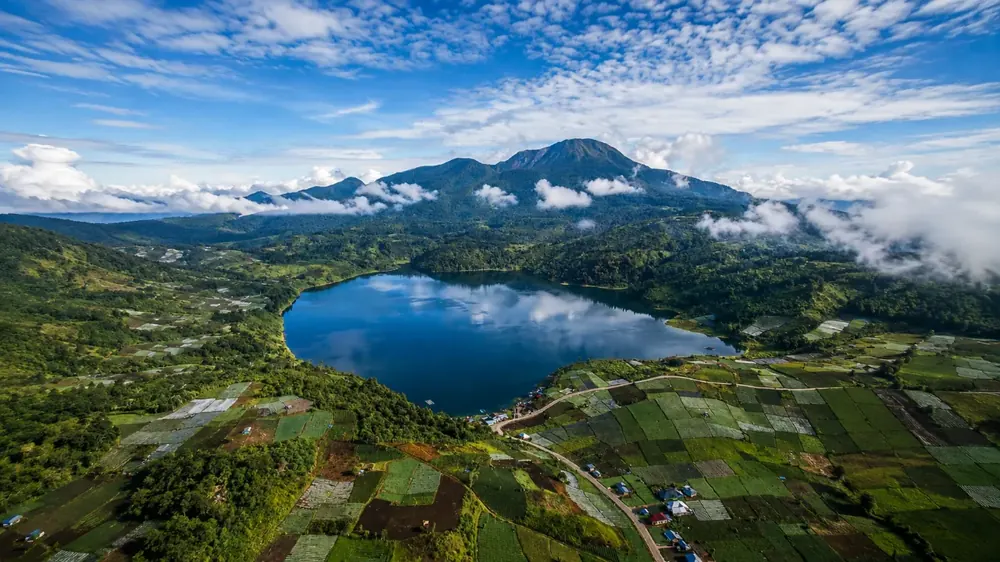
Danau & Gunung
Gunung Talang & Danau Talang
📍 Kecamatan Lembang Jaya, Kabupaten Solok
Gunung Talang adalah gunung berapi stratovolcano aktif setinggi 2.597 mdpl yang terletak di Kabupaten Solok. Di kaki selatannya tersembunyi Danau Talang, sebuah danau kawah vulkanik yang terbentuk dari letusan eksplosif purba dan kini menjadi cermin alam berwarna hijau zamrud yang dikelilingi oleh punggung vulkanik terjal dan hutan pinus.
Berbeda dengan Danau Kembar yang sudah populer, Danau Talang menawarkan ketenangan yang jauh lebih terisolasi dan alami. Permukaan airnya yang sangat tenang memantulkan bayangan sempurna gunung dan pepohonan sekitar, menciptakan ilusi cermin alam yang sangat fotogenik.
Jalur pendakian Gunung Talang melewati lubang-lubang sulfur aktif, fumarola uap panas, serta kebun teh dataran tinggi yang hijau. Puncaknya menawarkan panorama menakjubkan ke Danau Kembar, Danau Singkarak, dan hamparan Samudra Hindia di kejauhan.
Daya Tarik Utama:
- ✓ Danau Kawah Vulkanik Terisolasi & Fotogenik
- ✓ Trekking Melewati Fumarola & Lubang Sulfur
- ✓ Panorama Puncak ke Danau Kembar & Samudra Hindia
Waktu Terbaik: Pagi Hari (Mulai Pendakian 04:00 WIB)
Hal. 29
MALALA 2026 • Kabupaten Lima Puluh Kota
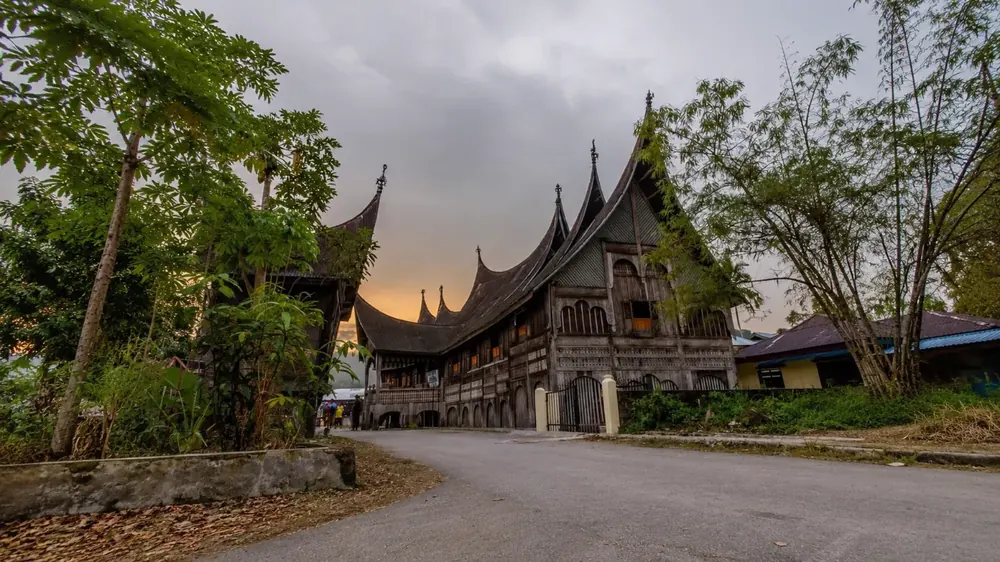
Sejarah & Bangunan
Jembatan Kelok 9
📍 Jalan Lintas Riau - Sumbar, Kab. Lima Puluh Kota
Jembatan Kelok 9 adalah mahakarya teknik sipil modern Indonesia yang berdiri megah di tengah bentang alam perawan Cagar Alam Air Putih, Kabupaten Lima Puluh Kota. Awalnya dibangun pada masa kolonial Belanda antara 1908 hingga 1914 untuk menembus lembah terjal Bukit Barisan penghubung Sumatera Barat dan Riau, jalur ini kemudian diperbarui menjadi sistem jembatan layang spektakuler sepanjang 943 meter dengan jalan penghubung 2 kilometer yang diresmikan pada 2013.
Struktur jembatan bertingkat enam ini ditopang oleh tiang-tiang beton kokoh setinggi hingga puluhan meter yang meliuk anggun di atas lembah hijau berpagar tebing-tebing hutan tropis yang rimbun dan asri. Udara pegunungan yang sejuk berpadu dengan pemandangan kabut tipis di pagi hari menciptakan panorama yang luar biasa memukau bagi setiap pelintas.
Di sepanjang rest area yang tertata rapi, wisatawan dapat bersantai menikmati sajian khas lokal seperti Ketan Durian Manis, Jagung Bakar, dan Kopi Kawa Daun hangat sembari mengabadikan foto ikonik megastruktur jalan layang yang berpadu harmonis dengan keagungan alam Bukit Barisan.
Daya Tarik Utama:
- ✓ Mahakarya Jembatan Layang 943 Meter
- ✓ Terletak di Cagar Alam Air Putih
- ✓ Spot Foto Ikonik & Rest Area Kuliner Khas
Waktu Terbaik: Pagi Hari (06:30 - 10:00 WIB)
Hal. 30
MALALA 2026 • Kabupaten Pesisir Selatan
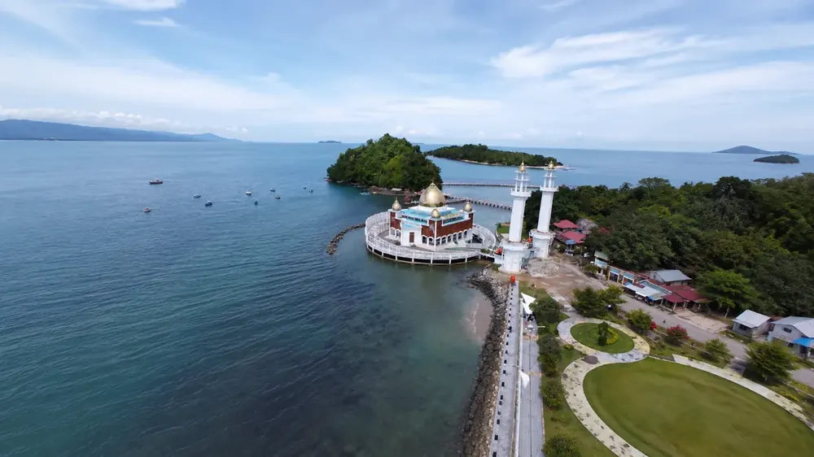
Pantai & Bahari
Pantai Carocok & Pulau Cingkuak
📍 Painan, Kabupaten Pesisir Selatan
Pantai Carocok Painan merupakan destinasi wisata pesisir unggulan di Kabupaten Pesisir Selatan yang memadukan keindahan pantai berpasir lembut, perairan tenang bertransparansi tinggi, serta jembatan kayu terapung yang menghubungkan daratan utama dengan Bukit Batu Kereta dan Pulau Cingkuak.
Pulau Cingkuak yang terletak tepat di seberang Pantai Carocok menyimpan jejak sejarah kolonial yang sangat berharga. Pada tahun 1660, kongsi dagang Belanda (VOC) mendirikan Benteng van den Bosch di pulau kecil ini sebagai gudang penyimpanan lada dan emas utama di pesisir barat Sumatera. Reruntuhan dinding batu benteng kuno ini masih dapat dieksplorasi oleh wisatawan hingga saat ini.
Wisatawan dapat menikmati ragam wahana bahari seru seperti banana boat, jet ski, snorkeling di terumbu karang dangkal, atau sekadar menikmati panorama matahari terbenam keemasan di atas Samudra Hindia dengan latar bukit-bukit hijau yang menjorok ke laut.
Daya Tarik Utama:
- ✓ Reruntuhan Benteng VOC Fort van den Bosch 1660
- ✓ Jembatan Apung Kayu ke Batu Kereta
- ✓ Water Sport Lengkap & Snorkeling Karang
Waktu Terbaik: Sore Hari (15:30 - 18:30 WIB)
Hal. 31
MALALA 2026 • Kota Payakumbuh
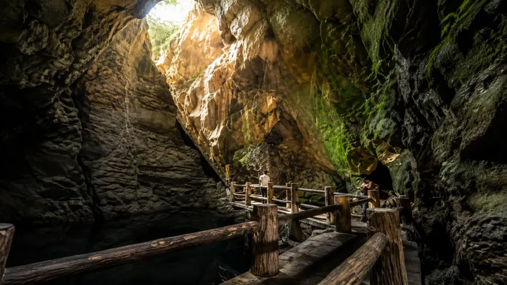
Lembah & Geopark
Gua Ngalau Indah Payakumbuh
📍 Kecamatan Payakumbuh Barat, Kota Payakumbuh
Gua Ngalau Indah adalah destinasi wisata speleologi dan perbukitan karst purba yang terletak di lereng Gunung Sago, hanya 4 kilometer dari pusat Kota Payakumbuh. Terbentuk dari proses pelarutan batu gamping selama jutaan tahun, gua ini menawarkan lorong-lorong bawah tanah luas yang dihiasi oleh formasi stalaktit dan stalagmit yang menakjubkan.
Di dalam gua, pengunjung akan menjumpai formasi batuan kapur unik bernama Batu Goncang—sebuah batu gantung besar yang bila diketuk menghasilkan getaran dan bunyi menggema layaknya gong—serta Batu Kursi Pengantin. Tata pencahayaan warna-warni di sepanjang jalur setapak semen memudahkan wisatawan menyusuri keindahan interior gua hingga tembus ke pintu keluar di sisi lain bukit.
Setelah keluar dari gua, area puncak Ngalau Indah menyajikan taman rekreasi asri dengan gardu pandang yang menghadirkan lanskap panorama 180 derajat seluruh Kota Payakumbuh, hamparan persawahan hijau, dan megahnya siluet Gunung Marapi dan Sago di kejauhan.
Daya Tarik Utama:
- ✓ Formasi Karst Purba & Batu Goncang Berbunyi Gong
- ✓ Jalur Setapak Gua Berpencahayaan Eksotis
- ✓ Gardu Pandang Panorama Kota Payakumbuh 180°
Waktu Terbaik: Pagi dan Siang Hari
Hal. 32
MALALA 2026 • Kota Bukittinggi
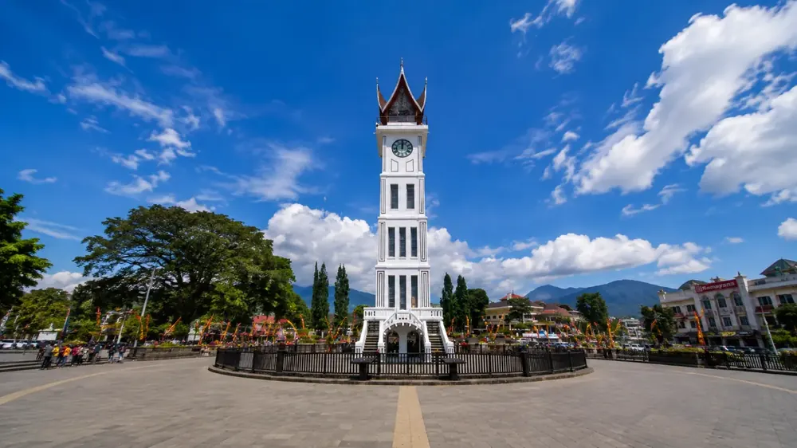
Alam
Jam Gadang & Kota Bukittinggi
📍 Pusat Kota Bukittinggi
Jam Gadang adalah menara jam bersejarah setinggi 26 meter yang berdiri megah di jantung Kota Bukittinggi dan menjadi ikon utama pariwisata Sumatera Barat. Diresmikan pada tahun 1926 sebagai hadiah dari Ratu Belanda, menara jam ini ditenagai oleh mesin langka buatan Jerman karya Johan Vortmann yang hanya ada dua unit di dunia, salah satunya dipasang pada Big Ben di London.
Keunikan arsitektur Jam Gadang terletak pada struktur atapnya yang telah beberapa kali berganti bentuk sesuai perjalanan sejarah, hingga akhirnya memuncak pada bentuk atap gonjong khas Rumah Gadang Minangkabau. Pelataran taman di sekeliling Jam Gadang kini tertata sangat rapi, bersih, dan menjadi pusat kegiatan seni budaya serta interaksi sosial warga dan wisatawan.
Berada di kawasan Jam Gadang memberikan akses langsung bagi wisatawan untuk menjelajahi kelezatan kuliner Nasi Kapau di Pasar Lereng, berbelanja kerajinan di Pasar Atas, serta berjalan kaki menuju objek bersejarah seperti Ngarai Sianok, Lubang Jepang, dan Benteng Fort de Kock.
Daya Tarik Utama:
- ✓ Menara Jam Bersejarah Tahun 1926
- ✓ Mesin Jam Langka Sejajar Big Ben
- ✓ Pusat Wisata Kuliner Pasar Atas & Lereng
Waktu Terbaik: Sore hingga Malam Hari
Hal. 33
MALALA 2026 • Kabupaten Agam & Tanah Datar
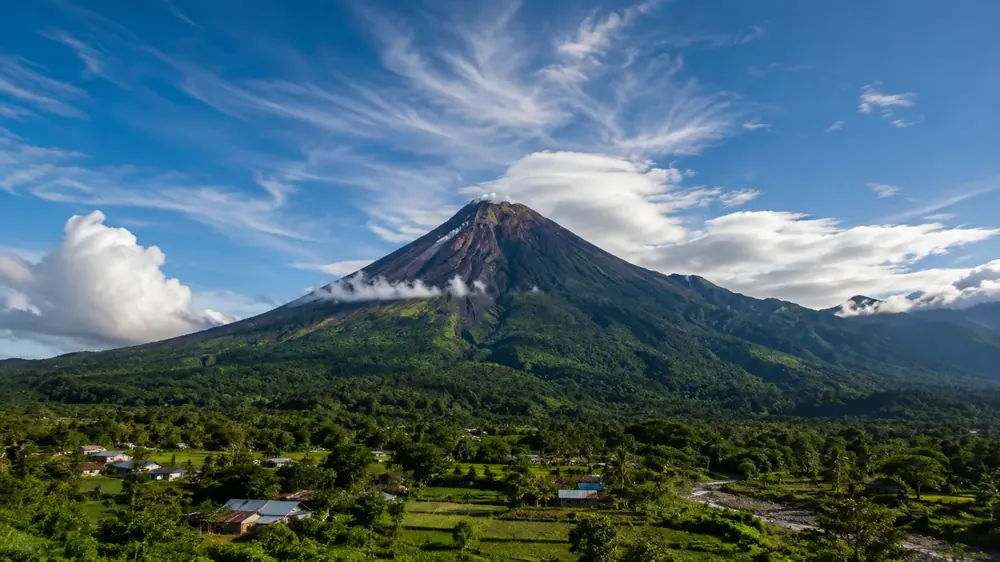
Danau & Gunung
Gunung Marapi
📍 Perbatasan Kab. Agam & Tanah Datar
Gunung Marapi adalah gunung berapi stratovolcano aktif setinggi 2.891 meter di atas permukaan laut yang memiliki kedudukan paling sakral dalam mitologi dan sejarah asal-usul bangsa Minangkabau (Tambo Minangkabau). Berdasarkan tuturan lisan turun-temurun, nenek moyang orang Minang pertama kali mendaratkan kapalnya di puncak Gunung Marapi tatkala daratan Sumatera masih tertutup air bah purba, sebelum akhirnya bermigrasi menuruni lereng dan mendirikan nagari tertua di Nagari Pariangan.
Karakteristik vulkanik Marapi sangat khas dengan kawah aktif terbuka yang mengeluarkan hembusan asap belerang vulkanik tebal, menciptakan lanskap padang batu cadas purba yang sangat eksotis dan dramatis di sekitar puncaknya.
Di lereng bagian atas, pendaki akan disuguhkan oleh hamparan padang bunga abadi Edelweiss Sumatera (Anaphalis javanica) serta pemandangan spektakuler Gunung Singgalang, Danau Singkarak, dan bentangan lembah Agam di bawah kepungan awan putih bergulung.
Daya Tarik Utama:
- ✓ Gunung Paling Sakral dalam Sejarah Tambo Minang
- ✓ Kawah Vulkanik Aktif & Padang Batu Purba
- ✓ Padang Bunga Edelweiss & Lautan Awan Spektakuler
Waktu Terbaik: Juni hingga September (Musim Kemarau)
Hal. 34
MALALA 2026 • Kabupaten Pesisir Selatan
Pantai & Bahari
Pulau Cubadak
📍 Kawasan Mandeh, Tarusan, Kab. Pesisir Selatan
Pulau Cubadak adalah surga pulau tropis seluas 40 kilometer persegi yang tersembunyi di dalam teluk tenang perairan Teluk Tarusan, Kabupaten Pesisir Selatan. Terbentuk dari kaldera vulkanik purba, pulau ini dikelilingi oleh air laut berwarna toska jernih tanpa ombak besar serta hamparan pasir putih bersih yang dibatasi hutan hujan lebat perawan.
Pulau ini mendapat reputasi internasional setelah resor ekologi kelas dunia dibangun dengan konsep ramah lingkungan tanpa merusak habitat liar satwa pulau, seperti monyet ekor panjang, burung rangkong, rusa liar, dan elang laut. Pulau Cubadak sempat menjadi sorotan dokumenter perjalanan di stasiun televisi Jerman dan Prancis.
Perairan di sekeliling Pulau Cubadak merupakan spot diving dan snorkeling kelas dunia dengan terumbu karang yang sangat sehat, padang anemon dengan ikan badut, kura-kura laut, serta visibility air yang bisa mencapai belasan meter, memberikan pengalaman ketenangan pulau pribadi yang magis.
Daya Tarik Utama:
- ✓ Pulau Privat Eksklusif Berpasir Putih & Laut Toska
- ✓ Habitat Hutan Hujan Satwa Liar & Rangkong
- ✓ Spot Diving & Snorkeling Terumbu Karang Sehat
Waktu Terbaik: April hingga Oktober (Musim Laut Tenang)
Hal. 35
MALALA 2026 • Kota Padang
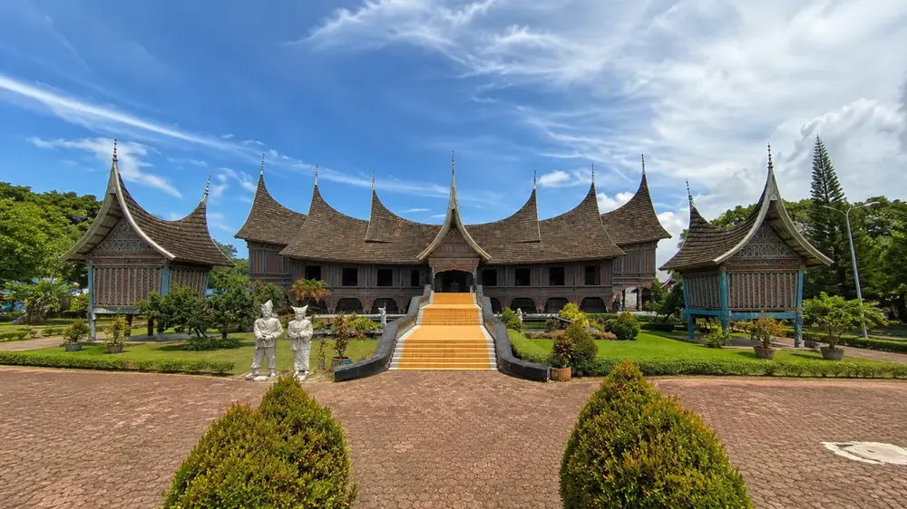
Sejarah
Museum Adityawarman
📍 Jl. Diponegoro No. 10, Kota Padang
Museum Adityawarman adalah museum negeri terbesar dan terlengkap di Provinsi Sumatera Barat yang berlokasi di pusat Kota Padang. Diresmikan pada 16 Maret 1977 dan dinamai menurut nama Raja Adityawarman—penguasa legendaris Kerajaan Malayu-Pagaruyung abad ke-14—museum ini bertindak sebagai 'Taman Mini Budaya Minangkabau' yang mendokumentasikan keagungan sejarah dan adat Ranah Minang.
Bangunan utama museum ini merupakan mahakarya arsitektur Rumah Gadang Gajah Maharam termegah dengan 20 gonjong atap melengkung runcing dan dinding berukir penuh warna-warni motif Minangkabau kuno. Halamannya yang luas dilengkapi dengan lumbung padi adat (Rangkiang Si Bayau-Bayau dan Si Sitinjau Lauik) serta monumen bersejarah.
Koleksi museum mencakup lebih dari 6.000 artefak bernilai tinggi, mulai dari mahkota pengantin Suntiang emas, pakaian adat 19 suku nagari, kain songket berbenang emas abad ke-18, prasasti batu kuno peninggalan Kerajaan Dharmasraya, hingga replika bilik kamar tidur pengantin tradisional Minang.
Daya Tarik Utama:
- ✓ Rumah Gadang Gajah Maharam Megah 20 Gonjong
- ✓ 6.000+ Koleksi Artefak Etnografi & Sejarah Minang
- ✓ Pameran Suntiang Emas & Kain Songket Kuno
Waktu Terbaik: Selasa - Minggu (08:30 - 16:00 WIB)
Hal. 36
MALALA 2026 • Kota Bukittinggi
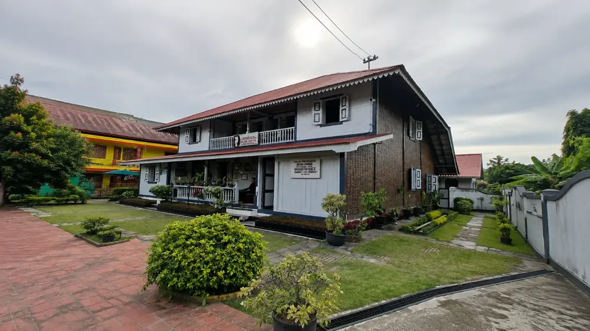
Sejarah
Museum Rumah Kelahiran Bung Hatta
📍 Jl. Soekarno-Hatta No. 37, Kota Bukittinggi
Museum Rumah Kelahiran Bung Hatta adalah rumah panggung kayu bersejarah tempat lahir dan tumbuh kembangnya Dr. Mohammad Hatta (Bung Hatta)—salah satu Proklamator Kemerdekaan Republik Indonesia dan Wakil Presiden pertama Republik Indonesia. Berlokasi di Jalan Soekarno-Hatta, Kota Bukittinggi, rumah ini dibangun kembali sesuai bentuk aslinya pada awal abad ke-20.
Struktur rumah menampilkan perpaduan cerdas arsitektur kayu tradisional Minangkabau dengan pembagian ruang fungsional era kolonial, terdiri dari bilik kamar tidur keluarga, kamar bujang, ruang tamu, dapur batu bata berlantai tanah, serta kandang kuda bendi keluarga di halaman belakang.
Di dalam museum, wisatawan dapat menyaksikan langsung perabot kayu jati asli, tempat tidur berkerudung kelambu tempat Bung Hatta dilahirkan pada 12 Agustus 1902, meja belajar masa kecil, buku-buku bacaan, foto-foto dokumenter keluarga besar, serta kereta kuda (bendi) yang digunakan kakek beliau.
Daya Tarik Utama:
- ✓ Situs Bersejarah Kelahiran Proklamator Kemerdekaan RI
- ✓ Perabotan Otentik & Bilik Kamar Asli Awal Abad 20
- ✓ Kereta Kuda (Bendi) Kuno & Galeri Foto Sejarah
Waktu Terbaik: Pagi dan Siang Hari (08:00 - 16:00 WIB)
Hal. 37
MALALA 2026 • Kabupaten Pesisir Selatan
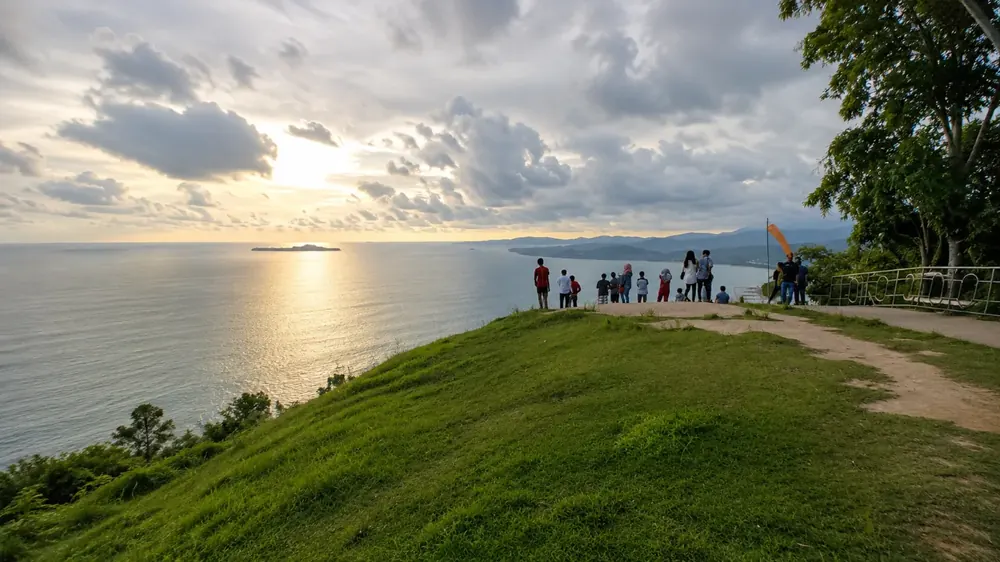
Danau & Gunung
Bukit Langkisau Painan
📍 Painan, Kabupaten Pesisir Selatan
Bukit Langkisau adalah bukit panorama setinggi kurang lebih 140 meter di atas permukaan laut yang menjulang tepat di bibir teluk Kota Painan, Kabupaten Pesisir Selatan. Dikenal secara nasional sebagai salah satu lokasi peluncuran paralayang dan gantole terbaik di Indonesia barat, bukit ini menyajikan keindahan lanskap 360 derajat yang tanpa tanding.
Dari puncak Bukit Langkisau, mata pengunjung akan dimanjakan oleh perpaduan pemandangan dramatis: garis lengkung Pantai Salido berpasir putih, kebiruan perairan Teluk Painan, gugusan pulau-pulau karang tropis di kejauhan, serta kontur perbukitan hijau yang memeluk kota.
Fasilitas puncak dilengkapi dengan gazebo pandang, kafe kelapa muda segar, dan jalan aspal mulus yang dapat dicapai kendaraan bermotor. Momen paling magis di Bukit Langkisau adalah saat senja tiba, ketika langit barat berubah menjadi kanvas jingga keemasan tatkala matahari terbenam perlahan ke horizon Samudra Hindia.
Daya Tarik Utama:
- ✓ Spot Peluncuran Paralayang & Gantole Nasional
- ✓ Panorama 360° Teluk Painan & Samudra Hindia
- ✓ Spot Sunset Keemasan Paling Romantis di Pesisir
Waktu Terbaik: Sore Hari (16:00 - 18:30 WIB)
Hal. 38
MALALA 2026 • Kota Pariaman
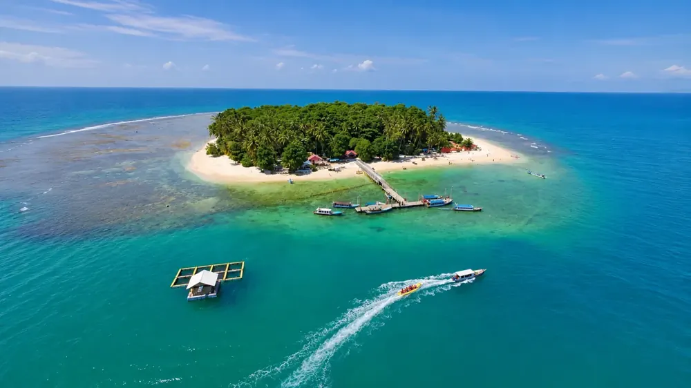
Pantai & Bahari
Pantai Gandoriah & Pulau Angso Duo
📍 Pusat Kota Pariaman, Sumatera Barat
Pantai Gandoriah adalah ikon wisata pesisir utama Kota Pariaman yang membentang indah dengan deretan pohon cemara laut yang rindang dan pasir pantai yang landai. Pantai ini dinamai menurut tokoh wanita legendaris dalam wiracarita Minangkabau 'Anggun Nan Tongga Magek Jabang' dan menjadi panggung utama puncak perhelatan akbar Festival Tabuik Pariaman.
Tepat 15 menit penyeberangan perahu dari Pantai Gandoriah, terdapat Pulau Angso Duo—sebuah pulau karang kecil berpasir putih bersih dengan air laut jernih berkilau. Di pulau ini terdapat situs Makam Katik Sangko, makam bersejarah ulama penyebar agama Islam abad ke-15 yang dikeramatkan dan menjadi destinasi ziarah budaya.
Kombinasi antara kuliner pesisir legendaris seperti Sala Lauak hangat dan Nasi Sek di tepi pantai, wahana wisata bahari perahu dayung, serta pesona ziarah sejarah di pulau lepas pantai menjadikan Pantai Gandoriah destinasi favorit keluarga sepanjang tahun.
Daya Tarik Utama:
- ✓ Panggung Puncak Festival Tabuik Pariaman
- ✓ Pulau Angso Duo & Makam Syekh Katik Sangko Abad 15
- ✓ Sentra Kuliner Pesisir Sala Lauak & Nasi Sek
Waktu Terbaik: Pagi dan Sore Hari
Hal. 39
MALALA 2026 • Kota Padang
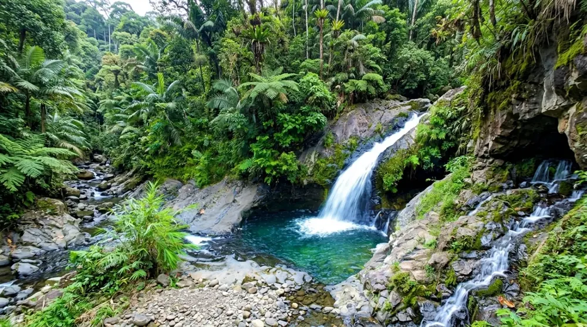
Air Terjun & Alam
Air Terjun Lubuak Tampuruang
📍 Gunung Sarik, Kuranji, Kota Padang
Air Terjun Lubuak Tampuruang adalah destinasi ekowisata tersembunyi yang berlokasi di kaki Gunung Nago, Kelurahan Gunung Sarik, Kecamatan Kuranji, hanya berjarak 12 kilometer dari jantung Kota Padang. Dinamakan 'Lubuak Tampuruang' karena cekungan kolam alami di bawah air terjun ini berbentuk bulat melengkung menyerupai setengah tempurung kelapa (tampuruang).
Air terjun setinggi sekitar 15 meter ini mengalirkan debit air pegunungan yang sangat jernih dan dingin, meluncur di atas batuan andesit berundak menuju lubuk kolam alami berwarna hijau zamrud. Dikelilingi oleh kanopi pohon-pohon rindang hutan tropis, suasananya sangat teduh, sejuk, dan terbebas dari kebisingan kota.
Pengunjung dapat berenang menyegarkan diri di kolam alami, melompat dari tepian batu cadas rendah, atau sekadar duduk santai di atas bebatuan sungai sambil mendengarkan gemuruh air dan kicauan burung hutan liar.
Daya Tarik Utama:
- ✓ Kolam Alami Berbentuk Setengah Tempurung Kelapa
- ✓ Air Pegunungan Hijau Zamrud Sangat Jernih
- ✓ Hanya 25 Menit dari Pusat Kota Padang
Waktu Terbaik: Pagi Hari (08:00 - 12:00 WIB)
Hal. 40
MALALA 2026 • Kabupaten Tanah Datar

Desa Wisata
Istano Basa Pagaruyung
📍 Batusangkar, Kabupaten Tanah Datar
Istano Basa Pagaruyung adalah replika kemegahan istana Kerajaan Pagaruyung yang berdiri anggun di Batusangkar, Kabupaten Tanah Datar. Istana kayu tiga tingkat ini dibangun penuh dengan teknik konstruksi kayu tradisional tanpa paku besi, dihiasi dengan 72 tiang penyangga utama serta ukiran motif alam kayu (ukia) berwarna-warni yang kaya filosofi adat Minangkabau.
Di dalam istana, pengunjung disuguhkan dengan museum budaya yang memamerkan koleksi pakaian kebesaran raja, benda pusaka kerajaan, bedil meriam antik, hingga bilik-bilik putri istana yang dihiasi tirai tenun songket warna-warni yang sangat mewah. Wisatawan juga dapat menyewa pakaian adat lengkap kerajaan Minangkabau untuk berfoto di ruang singgasana maupun di pelataran istana.
Halaman depan istana dipenuhi dengan deretan rangkiang (lumbung padi tradisional) serta taman bunga yang tertata rapi. Didampingi pemandu lokal berpengalaman, kunjungan ke Istano Basa Pagaruyung memberikan pemahaman mendalam tentang sejarah peradaban sistem matrilineal Minangkabau.
Daya Tarik Utama:
- ✓ Arsitektur Kayu 3 Tingkat 72 Tiang
- ✓ Penyewaan Baju Kerajaan Minangkabau
- ✓ Koleksi Benda Pusaka Kerajaan Pagaruyung
Waktu Terbaik: Pagi dan Siang Hari
Hal. 41
MALALA 2026 • Kabupaten Agam
Danau & Gunung
Puncak Lawang & Danau Maninjau
📍 Kecamatan Matur, Kabupaten Agam
Puncak Lawang adalah titik pandang dataran tinggi di Kabupaten Agam pada ketinggian 1.210 mdpl yang menawarkan lanskap udara paling memukau menuju Danau Maninjau. Dari dataran tinggi ini, hamparan danau tekto-vulkanik berair biru jernih yang dipagari oleh Kaldera Maninjau dapat terlihat secara utuh dalam sudut pandang 360 derajat yang sangat dramatis.
Puncak Lawang diakui secara internasional sebagai salah satu lokasi olahraga paralayang (paragliding) terbaik di Asia Tenggara karena memiliki embusan angin bukit yang sangat stabil. Wisatawan dapat merasakan sensasi terbang tandem melayang di udara bersama instruktur profesional berlisensi untuk menikmati keindahan Danau Maninjau dari angkasa.
Kawasan Puncak Lawang dilengkapi dengan hutan pinus asri, jalur trekking, wahana outbound, serta kafe-kafe panorama yang menyajikan hidangan Kopi Kawa Daun dan Teh Talua hangat. Tempat ini sangat populer sebagai spot berfoto matahari terbit dan tujuan rekreasi keluarga yang menyegarkan.
Daya Tarik Utama:
- ✓ Spot Paralayang Terbaik Asia Tenggara
- ✓ Panorama 360° Danau & Kaldera Maninjau
- ✓ Area Hutan Pinus & Kafe Kawa Daun
Waktu Terbaik: Pagi Hari (08:00 - 12:00 WIB)
Hal. 42
MALALA 2026 • Kabupaten Tanah Datar
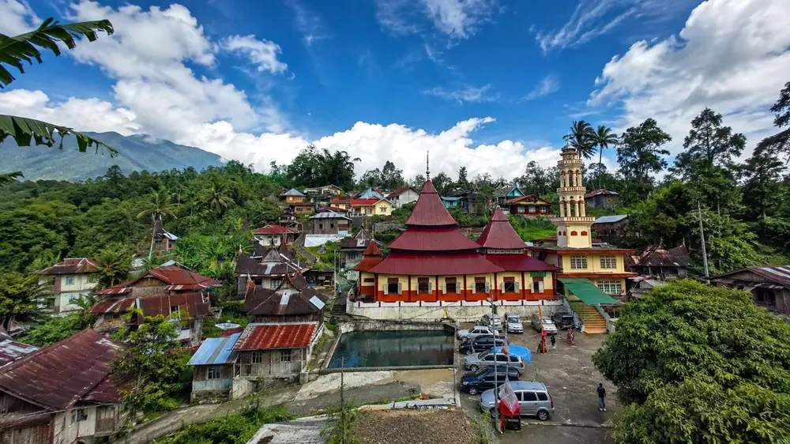
Desa Wisata
Desa Wisata Nagari Pariangan
📍 Lereng Gunung Marapi, Kabupaten Tanah Datar
Nagari Pariangan di Kabupaten Tanah Datar terletak anggun di lereng Gunung Marapi pada ketinggian 700 mdpl dan telah dinobatkan oleh media internasional Budget Travel sebagai salah satu desa terindah di dunia. Desa bersejarah ini diyakini oleh masyarakat Minangkabau sebagai nagari tertua tempat asal mula peradaban dan kebudayaan adat Minang dilahirkan.
Tata ruang desa didominasi oleh deretan Rumah Gadang kayu berusia ratusan tahun yang berdiri harmonis di antara lorong batu bertingkat dan hamparan sawah terasering yang hijau. Di tengah desa berdiri Masjid Tua Pariangan bertiang kayu jati antik serta sumber pemandian air panas alami berair hangat yang bersumber langsung dari Gunung Marapi.
Wisatawan dapat menikmati ketenangan hidup pedesaan yang asli, belajar proses pembuatan teh daun kawa bakar tradisional, serta merasakan kehangatan keramahan masyarakat lokal. Nagari Pariangan menawarkan pengalaman wisata budaya dan sejarah Minangkabau yang sangat otentik.
Daya Tarik Utama:
- ✓ Desa Terindah di Dunia Versi Media Internasional
- ✓ Masjid Tua Pariangan & Air Panas Gunung Marapi
- ✓ Sawah Terasering & Kopi Kawa Daun
Waktu Terbaik: Pagi Hari (07:00 - 11:00 WIB)
Hal. 43
MALALA 2026 • Kota Sawahlunto
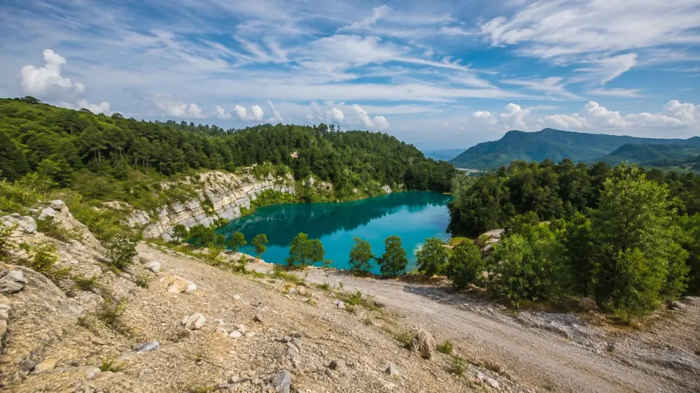
Lembah & Geopark
Danau Biru Sawahlunto
📍 Nagari Parambahan, Kec. Talawi, Kota Sawahlunto
Danau Biru Sawahlunto adalah danau kawah buatan eksotis yang terbentuk di bekas area penambangan batu bara terbuka (open-pit mining) di kawasan Parambahan, Kecamatan Talawi, Kota Sawahlunto. Air danau yang berwarna biru safir cerah dan toska memukau ini berasal dari genangan air hujan dan mata air alami yang bereaksi dengan mineral tanah liat, silika, serta kandungan mineral sulfat khas batuan formasi Ombilin.
Dikelilingi oleh perbukitan batu kapur putih gersang, vegetasi semak alami, dan jajaran pepohonan pinus, kontras warna antara birunya air dan tebing batuan menciptakan lanskap pemandangan yang sangat dramatis dan menyerupai kawah vulkanik alami di luar negeri.
Danau Biru menjadi salah satu destinasi wisata alam geologi paling populer di Sawahlunto bagi para fotografer lanskap dan wisatawan yang mencari panorama alam unik dan belum banyak terjamah komersialisasi berlebih.
Daya Tarik Utama:
- ✓ Air Danau Berwarna Biru Safir & Toska Alami
- ✓ Lanskap Tebing Batuan Eksotis Bekas Tambang Ombilin
- ✓ Spot Fotografi Lanskap Ikonik di Sawahlunto
Waktu Terbaik: Pagi Hari (07:30 - 10:30 WIB) & Siang Cerah
Hal. 44
MALALA 2026 • Kabupaten Pesisir Selatan
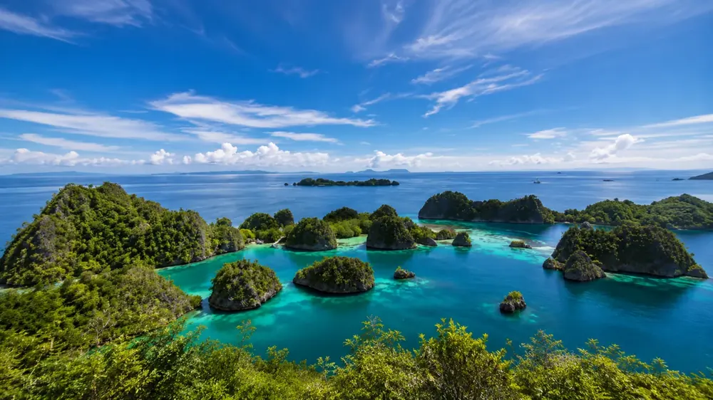
Pantai & Bahari
Kawasan Wisata Bahari Mandeh
📍 Kecamatan Koto XI Tarusan, Pesisir Selatan
Kawasan Wisata Bahari Mandeh di Kabupaten Pesisir Selatan merupakan surga bahari tropis seluas 18.000 hektar yang dijuluki sebagai 'Raja Ampat-nya Sumatera Barat'. Teluk tenang berair bening toska ini dihiasi oleh gugusan pulau-pulau kecil berhutan lebat seperti Pulau Setan, Pulau Cubadak, Pulau Sironjong, dan Pulau Kapo-Kapo.
Bawah laut Mandeh menyimpan kekayaan terumbu karang yang masih sangat perawan, habitat kawanan ikan tropis warna-warni, hingga bangkai kapal bersejarah MV Boelongan Nederland yang karam di dasar laut dan menjadi spot favorit penyelam internasional. Wisatawan dapat menikmati wahana olahraga air lengkap mulai dari jet ski, banana boat, hingga snorkeling.
Puncak Paku di jalur jalan darat Mandeh menawarkan spot gardu pandang terbaik untuk menyaksikan keindahan matahari terbenam (sunset) yang perlahan tenggelam di balik siluet pulau-pulau kecil Mandeh. Kawasan ini merupakan destinasi wisata bahari unggulan berstandar internasional.
Daya Tarik Utama:
- ✓ Gugusan Pulau Eksotis Berair Toska
- ✓ Spot Diving Wreck Kapal MV Boelongan
- ✓ Sunset Spektakuler dari Puncak Paku
Waktu Terbaik: Pagi hingga Sore Hari
Hal. 45
MALALA 2026 • Kota Bukittinggi
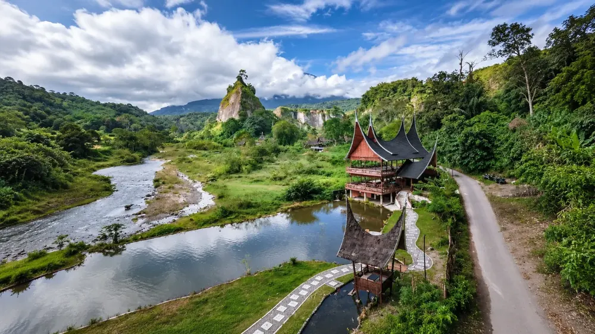
Lembah & Geopark
Ngarai Sianok & Lubang Jepang
📍 Taman Panorama, Kota Bukittinggi
Ngarai Sianok adalah lembah curam memukau setinggi 100 meter yang membentang sepanjang 15 kilometer membelah perbatasan Kota Bukittinggi dan Kabupaten Agam. Lembah patahan tektonik ini menyajikan pemandangan tebing-tebing kapur terjal berhiaskan aliran sungai jernih di dasarnya yang menjadi habitat alami bagi fauna langka seperti monyet ekor panjang dan burung enggang.
Tepat di atas tebing Ngarai Sianok terdapat Taman Panorama yang dilengkapi dengan pintu masuk menuju Lubang Jepang, sebuah kompleks terowongan militer bawah tanah sepanjang 1.400 meter yang dibangun pada masa pendudukan Jepang tahun 1942. Terowongan bawah tanah ini memiliki puluhan ruangan seperti ruang amunisi, penjara, hingga ruang pengintaian.
Wisatawan dapat menikmati pemandangan senja Ngarai Sianok sambil bersantai di kafe-kafe tebing, menyusuri Janjang Koto Gadang (Great Wall Minangkabau), serta mempelajari sejarah perjuangan bangsa melalui tur panduan terowongan Lubang Jepang.
Daya Tarik Utama:
- ✓ Lembah Patahan Tektonik 100 Meter
- ✓ Kompleks Terowongan Bawah Tanah 1942
- ✓ Janjang Koto Gadang (Great Wall Minang)
Waktu Terbaik: Pagi dan Sore Hari
Hal. 46
MALALA 2026 • Kabupaten Solok
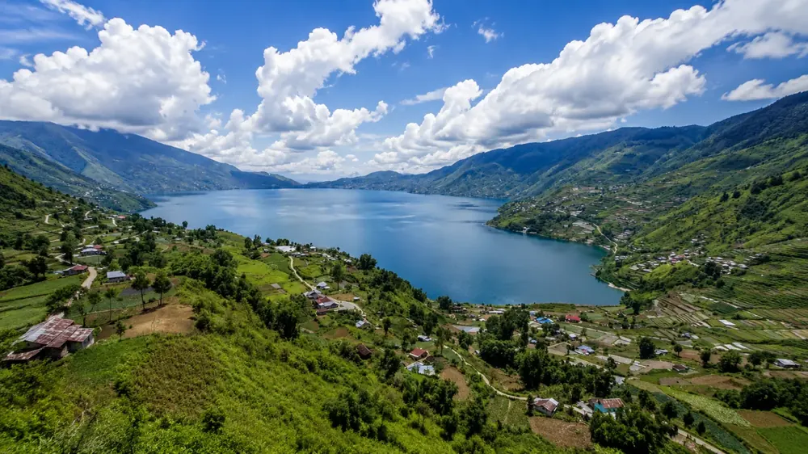
Danau & Gunung
Danau Kembar (Danau Diatas & Danau Dibawah)
📍 Kecamatan Lembah Gumanti, Kabupaten Solok
Danau Kembar adalah sebutan ikonik untuk dua danau vulkanik memukau yang berdampingan di Kecamatan Lembah Gumanti, Kabupaten Solok, yaitu Danau Diatas dan Danau Dibawah. Terletak di dataran tinggi dingin Alahan Panjang pada ketinggian 1.531 mdpl, kawasan ini dikelilingi oleh hamparan kebun teh yang hijau dan perkebunan sayur-mayur subur.
Keunikan nama Danau Kembar ini terletak pada letak geografisnya yang kontradiktif: Danau Diatas justru berada di tempat yang lebih rendah dari jalan raya, sedangkan Danau Dibawah berada di posisi bukit yang lebih tinggi. Lanskap air danau yang sangat jernih dan berudara dingin menciptakan atmosfer udara sejuk layaknya iklim pegunungan Eropa.
Wisatawan dapat menyewa perahu kayu untuk menjelajahi perairan Danau Diatas, mengunjungi dermaga spot foto Instagramable, atau memetik buah markisa dan stroberi segar langsung di kebun petani lokal. Kawasan ini merupakan tempat favorit untuk tempat beristirahat dan rekreasi keluarga.
Daya Tarik Utama:
- ✓ Dua Danau Vulkanik Berdampingan
- ✓ Udara Dingin Alahan Panjang 1.531 mdpl
- ✓ Kebun Teh & Agrowisata Petik Buah
Waktu Terbaik: Pagi dan Siang Hari
Hal. 47
MALALA 2026 • Kabupaten Agam & Kota Bukittinggi
Sejarah & Petualangan
Janjang Koto Gadang & Great Wall Ngarai Sianok
📍 Ngarai Sianok, Koto Gadang, Kab. Agam
Janjang Koto Gadang adalah jalur pedestrian tangga beton berpagar pembatas megah yang membentang menuruni dinding jurang terjal Ngarai Sianok, menghubungkan Kota Bukittinggi dengan Desa Perak Koto Gadang di Kabupaten Agam. Dirintis pertama kali pada era kolonial dan diresmikan dalam bentuk modern pada tahun 2013, struktur arsitektur jalan setapak ini membentang sepanjang kurang lebih 1 kilometer melintasi lembah subur yang menawan.
Keunikan utama Janjang Koto Gadang terletak pada bentuknya yang meliuk-liuk menuruni jurang dan menanjak ke puncak tebing seberang dengan pos-pos menara pengawas kecil bergaya benteng, sehingga kerap dijuluki sebagai 'Tembok Raksasa Cina-nya Ranah Minang'. Di dasar lembah, wisatawan melintasi jembatan gantung gantung kayu di atas aliran sungai Batang Sianok dengan latar belakang formasi batuan sedimen dinding ngarai setinggi 100 meter yang sangat dramatis.
Bagi para pelancong yang ingin menjajal rute ini, disarankan memakai sepatu olahraga yang nyaman dan membawa air minum yang cukup karena terdapat ratusan anak tangga dengan sudut kemiringan yang bervariasi. Perjalanan biasanya diakhiri dengan menikmati suasana asri Desa Pengrajin Perak Koto Gadang serta mencicipi kuliner legendaris Itiak Lado Mudo Ngarai di dekat gerbang keluar.
Daya Tarik Utama:
- ✓ Jalur Tangga Menuruni Jurang Ngarai Sianok 1 Km
- ✓ Jembatan Gantung Kayu di Atas Aliran Sungai Lembah
- ✓ Sentra Kerajinan Perak Warisan Koto Gadang
Waktu Terbaik: Pagi Hari (06:30 - 09:30 WIB)
Hal. 48
MALALA 2026 • Kota Padang
Pantai & Bahari
Pantai Padang & Jembatan Siti Nurbaya
📍 Batang Arau, Kota Padang, Sumatera Barat
Kawasan Pantai Padang (dikenal akrab sebagai 'Taplau' atau Tapi Lauik) dan Jembatan Siti Nurbaya merupakan jantung denyut pariwisata urban tepi laut Ibu Kota Provinsi Sumatera Barat. Terletak di muara Sungai Batang Arau, jembatan berhiaskan ornamen lampu tematik gonjong Minangkabau ini diresmikan pada tahun 2002 dan dinamai menurut mahakarya sastra roman klasik Melayu karangan Marah Rusli yang sangat legendaris.
Keistimewaan kawasan ini adalah perpaduan panorama maritim Samudra Hindia yang luas dengan lanskap Gunung Padang yang menghijau di seberang muara pelabuhan tua. Menjelang senja, trotoar lebar di sepanjang jalan pesisir berubah menjadi pusat wisata kuliner terbuka di mana pengunjung dapat menikmati jagung bakar pedas manis, kerupuk kuah sate, kelapa muda segar, dan pisang panggang sambil menyaksikan matahari terbenam ke cakrawala samudra.
Kawasan ini sangat mudah diakses hanya 10 menit dari pusat perkotaan Padang serta terintegrasi dengan dermaga perahu tradisional menuju pulau-pulau eksotis di lepas pantai. Waktu paling tepat untuk berkunjung adalah mulai pukul 16:30 WIB hingga malam hari ketika kerlap-kerlip lampu kapal nelayan mulai menghiasi perairan muara.
Daya Tarik Utama:
- ✓ Panorama Sunset Spektakuler Samudra Hindia
- ✓ Ikon Jembatan Gonjong Siti Nurbaya di Muara Batang Arau
- ✓ Pusat Wisata Kuliner Malam Pesisir Padang
Waktu Terbaik: Sore hingga Malam Hari (16:30 - 21:00 WIB)
Hal. 49
MALALA 2026 • Kota Bukittinggi
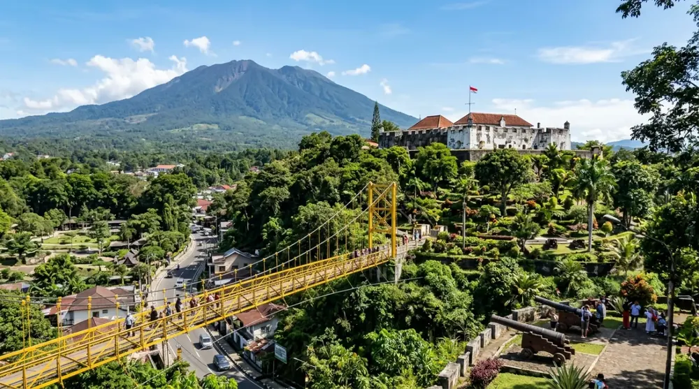
Sejarah
Benteng Fort de Kock & Jembatan Limpapeh
📍 Bukit Jirek, Kota Bukittinggi
Benteng Fort de Kock adalah situs peninggalan militer kolonial Belanda yang dibangun pada tahun 1825 oleh Kapten Bauer di atas Bukit Jirek pada masa berkecamuknya Perang Padri. Benteng ini dirancang sebagai pos pertahanan strategis komando pasukan Belanda dalam membendung perlawanan gigih kaum pejuang Paderi pimpinan Tuanku Imam Bonjol di dataran tinggi Luhak Agam.
Kini kompleks benteng ini telah direvitalisasi menjadi taman kota hijau yang asri dan terhubung langsung dengan Taman Margasatwa dan Budaya Kinantan (TMSBK) melalui Jembatan Limpapeh, sebuah jembatan penyeberangan gantung artistik sepanjang 90 meter yang melintang di atas jalan raya utama kota dengan kubah Rumah Gadang gonjong mini yang sangat khas. Di atas bukit benteng masih tersimpan meriam kuno abad ke-19 serta gardu pandang yang memperlihatkan panorama 360 derajat kota Bukittinggi berlatar Gunung Singgalang dan Marapi.
Bagi keluarga dan pecinta sejarah, kompleks ini menyajikan edukasi mendalam mengenai linimasa kolonialisme di Ranah Minang sekaligus akses mudah ke Museum Rumah Adat Baanjuang. Lokasinya berada tepat di pusat kota, dapat dijangkau dengan berjalan kaki santai dari kawasan Jam Gadang.
Daya Tarik Utama:
- ✓ Benteng Kolonial Belanda Peninggalan Perang Padri 1825
- ✓ Jembatan Gantung Penyeberangan Ikonik Limpapeh
- ✓ Gardu Pandang 360 Derajat Kota Bukittinggi & Dua Gunung
Waktu Terbaik: Pagi dan Siang Hari (08:30 - 16:00 WIB)
Hal. 50
MALALA 2026 • Kabupaten Pasaman
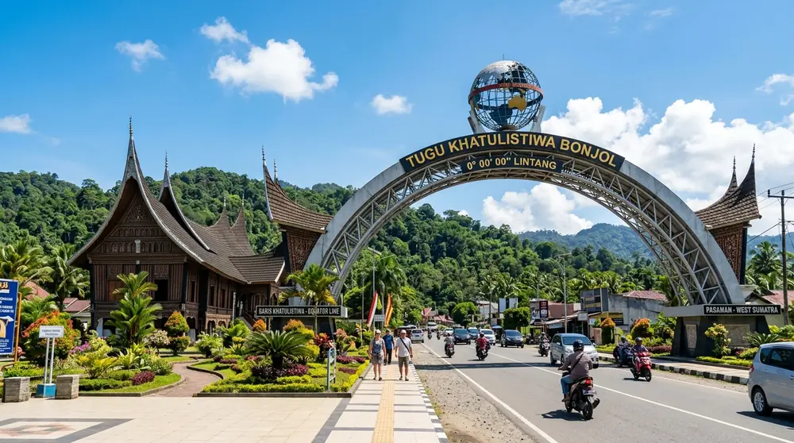
Sejarah
Tugu Khatulistiwa Bonjol & Museum Tuanku Imam Bonjol
📍 Kecamatan Bonjol, Kabupaten Pasaman
Tugu Khatulistiwa Bonjol adalah tengara geografis dan sejarah internasional yang terletak di Kecamatan Bonjol, Kabupaten Pasaman, menandai perlintasan tepat garis lintang nol derajat bumi (Garis Khatulistiwa) yang membelah belahan bumi utara dan selatan. Kawasan ini sekaligus merupakan tanah tumpah darah Tuanku Imam Bonjol (Muhammad Syahab), salah satu Pahlawan Nasional Indonesia paling terkemuka yang memimpin Perang Padri (1803-1838).
Keistimewaan kawasan ini adalah monumen berbentuk bola dunia raksasa yang melintasi badan jalan raya Trans-Sumatera lengkap dengan jembatan penyeberangan berbentuk kubah gonjong Rumah Gadang. Di dalam kompleks berdiri Museum Tuanku Imam Bonjol yang menyimpan koleksi persenjataan tradisional Minangkabau, manuskrip sejarah dakwah Islam abad ke-19, serta diorama pertempuran heroik Benteng Bonjol melawan artileri Belanda.
Setiap tanggal 21-23 Maret dan 21-23 September, para pelancong dan ilmuwan berkumpul untuk menyaksikan fenomena astronomi langka Hari Kulminasi Utama (Equinox), di mana bayangan benda lenyap tanpa bekas pada tengah hari tepat pukul 12:00 WIB. Jangan lewatkan kesempatan melangkahkan kaki melintasi garis khatulistiwa dengan sensasi berpindah belahan bumi dalam satu detik.
Daya Tarik Utama:
- ✓ Titik Nol Derajat Khatulistiwa di Jalur Trans-Sumatera
- ✓ Museum Sejarah Perjuangan Pahlawan Nasional Tuanku Imam Bonjol
- ✓ Fenomena Hari Tanpa Bayangan (Equinox Astronomi)
Waktu Terbaik: Siang Hari (10:00 - 14:00 WIB)
Hal. 51
MALALA 2026 • Kabupaten Pasaman
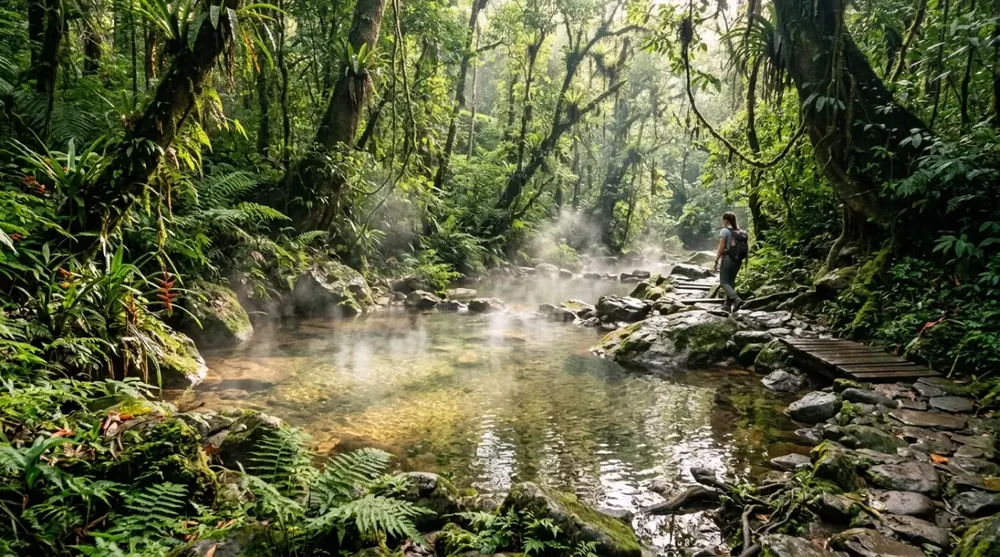
Danau & Gunung
Cagar Alam Rimbo Panti & Pemandian Air Panas Alami
📍 Kecamatan Panti, Kabupaten Pasaman
Cagar Alam Rimbo Panti adalah kawasan konservasi hutan hujan tropis primer seluas lebih dari 2.550 hektare yang terletak di bagian utara Kabupaten Pasaman. Ditetapkan sebagai kawasan suaka alam sejak era 1930-an, Rimbo Panti merupakan rumah bagi ribuan flora endemik Sumatera seperti bunga bangkai raksasa (Rafflesia arnoldii dan Amorphophallus titanum), pohon meranti purba, serta satwa langka seperti siamang, harimau sumatera, dan tapir.
Fenomena paling memukau di tengah kelebatan rimba adalah kompleks mata air panas geotermal alami bersuhu tinggi yang memancar keluar dari perut bumi di tepi jalan lintas hutan. Uap belerang putih mengepul tebal di antara rimbunnya pohon pakis raksasa dan kanopi kanopi pohon rimba, menciptakan atmosfer mistis alami yang menakjubkan bagi para fotografer lanskap dan penikmat alam bebas.
Di area yang telah ditata untuk wisatawan, terdapat kolam pemandian air panas alami berkhasiat terapi mineral belerang yang dipercaya dapat meredakan pegal linu dan menyehatkan kulit. Pengunjung juga dapat merasakan pengalaman unik merebus telur ayam langsung di kolam mata air panas mendidih hingga matang sempurna dalam waktu beberapa menit saja.
Daya Tarik Utama:
- ✓ Habitat Asli Bunga Raksasa Rafflesia & Hutan Primer
- ✓ Mata Air Panas Geotermal Alami di Tengah Rimba Hujan
- ✓ Sensasi Merebus Telur di Sumber Air Mendidih Alami
Waktu Terbaik: Pagi Hari (07:30 - 11:00 WIB)
Hal. 52
MALALA 2026 • Kota Padang
Pantai & Bahari
Pulau Pamutusan & Spot Snorkeling Pasir Putih
📍 Bungus Teluk Kabung, Kota Padang
Pulau Pamutusan adalah salah satu mutiara tersembunyi dalam gugusan kepulauan tropis di Teluk Kabung, perbatasan perairan Kota Padang dan Kabupaten Pesisir Selatan. Dinamakan 'Pamutusan' (yang dalam bahasa Minang berarti terputus) karena pulau ini memiliki daratan semenanjung pasir putih alami yang membelah pulau; saat air laut surut daratan tersebut menyambung, namun saat pasang naik daratan tersebut terendam air laut sehingga pulau tampak terbelah dua.
Pulau seluas sekitar 8 hektare ini dikelilingi oleh air laut bergradasi biru toska safir yang sangat bening dengan terumbu karang tepi (fringing reef) dangkal yang masih sangat terjaga kelestariannya. Keanekaragaman biota laut seperti ikan badut (anemon), kima raksasa, dan terumbu karang warna-warni menjadikannya surga bagi penggemar snorkeling, paddleboarding, dan underwater photography.
Untuk menuju ke Pulau Pamutusan, wisatawan dapat menyeberang menggunakan perahu cepat dari Dermaga Sungai Pisang atau Pelabuhan Muaro Padang dalam waktu 45 hingga 60 menit pelayaran. Di pulau ini tersedia jalur pendakian ringan ke atas bukit karang untuk menyaksikan panorama 360 derajat gugusan pulau-pulau tropis di sekitarnya yang sangat memanjakan mata.
Daya Tarik Utama:
- ✓ Fenomena Semenanjung Pasir Pasang-Surut Alami
- ✓ Taman Terumbu Karang Dangkal Jernih Ideal Snorkeling
- ✓ Gardu Pandang Puncak Bukit dengan View Gugusan Kepulauan
Waktu Terbaik: April hingga Oktober (Musim Laut Teduh)
Hal. 53
MALALA 2026 • Kabupaten Solok
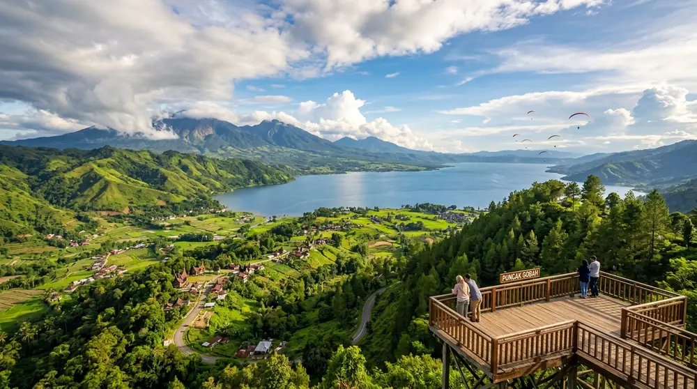
Danau & Gunung
Puncak Gobah & Panorama Danau Singkarak
📍 Nagari Aripan, Kec. X Koto Singkarak, Kab. Solok
Puncak Gobah adalah destinasi wisata ketinggian tersembunyi yang berlokasi di Nagari Aripan, Kecamatan X Koto Singkarak, Kabupaten Solok. Terletak pada ketinggian sekitar 600 meter di atas permukaan laut, dataran tinggi ini menyajikan salah satu lanskap sudut pandang terindah untuk mengagumi bentangan megah Danau Singkarak secara keseluruhan dari udara bebas.
Daya tarik utama Puncak Gobah adalah anjungan gardu pandang kayu berbentuk Rumah Gadang gantung dan rumah pohon yang menjorok ke arah tebing jurang. Dari spot ini, wisatawan disuguhi pemandangan air danau yang membiru tenang diapit oleh punggung pegunungan Bukit Barisan, petak-petak sawah hijau berundak milik warga nagari, serta jalur rel kereta api bersejarah peninggalan era kolonial Belanda di tepi danau.
Kawasan ini juga menjadi lokasi favorit bagi komunitas paralayang (paragliding) untuk lepas landas meluncur melintasi langit Danau Singkarak. Udara sejuk perbukitan dan deretan kedai kopi lokal yang menyajikan Kopi Kawa Daun dan pisang goreng panas menjadikan Puncak Gobah tempat istirahat yang sempurna dalam rute perjalanan Padang-Solok-Bukittinggi.
Daya Tarik Utama:
- ✓ Sudut Pandang Udara Terbaik Seluruh Cekungan Danau Singkarak
- ✓ Anjungan Foto Rumah Gadang Menjorok ke Arah Jurang
- ✓ Lokasi Lepas Landas Olahraga Paralayang Bukit Barisan
Waktu Terbaik: Pagi Hari (06:00 - 09:00 WIB) & Sore Hari Sunset
Hal. 54
MALALA 2026 • Kota Padang Panjang
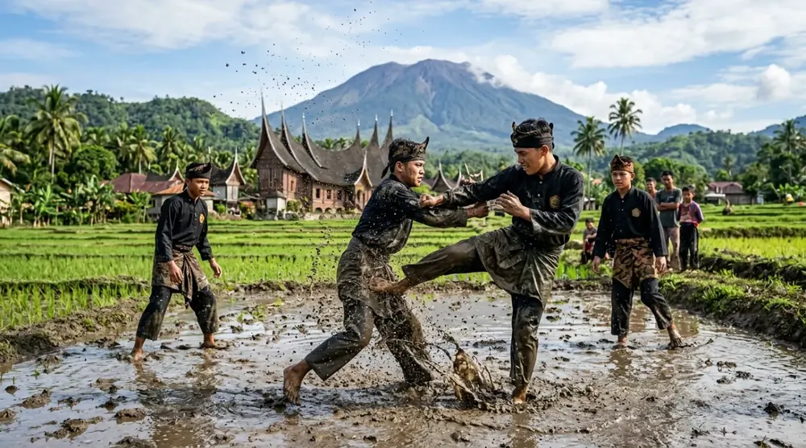
Sejarah
Desa Wisata Kubu Gadang Padang Panjang
📍 Kelurahan Ekor Lubuk, Kota Padang Panjang
Desa Wisata Kubu Gadang adalah destinasi wisata budaya berbasis pemberdayaan masyarakat nagari yang terletak di Kelurahan Ekor Lubuk, Kota Padang Panjang. Berada di lembah subur di antara Gunung Marapi, Singgalang, dan Tandikat pada ketinggian 700 mdpl, desa ini berhasil mengintegrasikan kearifan tradisi agraris Minangkabau dengan daya tarik pariwisata edukasi kontemporer yang diakui secara nasional.
Ikon kebudayaan paling tersohor dari Kubu Gadang adalah pertunjukan atraksi 'Silek Lanyah', yaitu seni beladiri silat Minangkabau yang diperagakan oleh para pendekar muda di dalam petak sawah berlumpur basah pasca panen. Gerakan jurus silat yang gesit, lentur, dan bertenaga memercikkan air lumpur ke udara dengan iringan dentuman musik Gandang Tambua dan tiupan Saluang, menghadirkan tontonan teatrikal budaya yang sangat memesona dan fotogenik.
Selain Silek Lanyah, wisatawan dapat berpartisipasi langsung dalam tradisi Makan Bajamba, belajar membatik corak Minang, menanam padi bersama petani lokal, serta bertransaksi di Pasar Kuliner Tradisional Kubu Gadang menggunakan mata uang koin kayu koin khusus yang bernuansa tempo dulu. Suasana desa yang ramah dan hawanya yang sejuk menjadikan Kubu Gadang destinasi wajib bagi pecinta budaya autentik.
Daya Tarik Utama:
- ✓ Atraksi Teatrikal Silek Lanyah (Silat Lumpur di Sawah Basah)
- ✓ Edukasi Budaya Agraris Tradisional & Makan Bajamba
- ✓ Pasar Kuliner Nagari Tempo Dulu dengan Koin Kayu
Waktu Terbaik: Akhir Pekan (Sabtu & Minggu 08:00 - 15:00 WIB)
Hal. 55
MALALA 2026 • Kota Padang
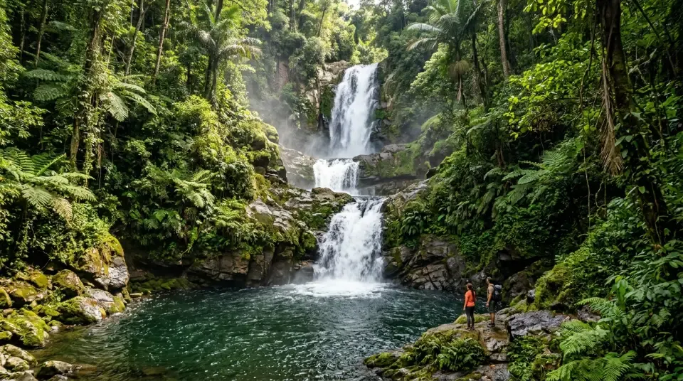
Air Terjun & Alam
Air Terjun Lubuk Hitam Tiga Tingkat
📍 Teluk Kabung Utara, Kota Padang
Air Terjun Lubuk Hitam adalah surga petualangan ekowisata hutan rimba yang tersembunyi di Nagari Teluk Kabung Utara, Kecamatan Bungus Teluk Kabung, sekitar 25 kilometer di selatan pusat Kota Padang. Air terjun alami ini sangat istimewa karena memiliki tiga undakan tingkatan air terjun dengan karakteristik debit air, ketinggian tebing, dan kedalaman kolam alami yang berbeda-beda di setiap tingkatnya.
Untuk mencapai air terjun ini, para penjelajah harus melakukan trekking menyusuri perkebunan pala, cengkih, dan hutan hujan tropis basah lereng Bukit Barisan yang masih sangat asri. Tingkat pertama memiliki ketinggian sekitar 3 meter dengan kolam berendam yang tenang; tingkat kedua mencapai 10 meter dengan tebing batu hitam yang kokoh; sedangkan tingkat ketiga menyajikan air terjun utama setinggi 22 meter yang jatuh menderu ke dalam kolam alami berwarna biru tua kehijauan yang sejuk dan dalam.
Keasrian alam di sekitar Lubuk Hitam masih sangat terjaga dengan suara gemericik air dan kicauan burung hutan tropis yang menenangkan. Wisatawan diimbau untuk memakai sepatu trekking anti-selip, membawa pakaian ganti, dan senantiasa berhati-hati saat meniti bebatuan berlumut menuju undakan tingkat ketiga.
Daya Tarik Utama:
- ✓ Fenomena Air Terjun Bertingkat Tiga di Lereng Bukit Barisan
- ✓ Trekking Sejuk Menembus Kebun Rempah & Hutan Hujan
- ✓ Kolam Alami Air Gunung Sejuk Berwarna Zamrud
Waktu Terbaik: Pagi Hari (08:00 - 13:00 WIB)
Hal. 56
MALALA 2026 • Kabupaten Pasaman Barat
Danau & Gunung
Danau Laut Tinggal Pasaman Barat
📍 Kecamatan Talamau, Kab. Pasaman Barat
Danau Laut Tinggal adalah keajaiban geologis paling terisolasi dan misterius di Sumatera Barat, tersembunyi di kaldera kawah Gunung Malintang (Gunung Kajai) pada ketinggian sekitar 1.900 mdpl di Kabupaten Pasaman Barat. Dikelilingi oleh dinding tebing kaldera terjal setinggi ratusan meter yang diselimuti kabut lumut purba, danau kawah vulkanik ini berdiameter luas dengan air berwarna hijau toska pekat yang sangat menakjubkan.
Nama 'Laut Tinggal' merujuk pada legenda anak nagari mengenai sebuah samudra purba yang tertinggal di atas puncak gunung berapi. Karena lokasinya yang sangat terpencil dan belum tersentuh infrastruktur jalan komersial, danau ini menjadi destinasi suci bagi para pendaki tangguh dan penjelajah rimba yang menempuh ekspedisi jalan kaki selama 2 hingga 3 hari melintasi hutan lumut montane primer yang lebat.
Suasana di tepi Danau Laut Tinggal sangat magis dan sunyi dengan pantulan dinding kawah hijau zamrud pada permukaan air yang nyaris tanpa riak. Wisatawan yang ingin menjelajah ke tempat ini wajib menggunakan jasa pemandu anak nagari setempat yang memahami jalur hutan adat dan etika kearifan lokal dalam menjaga kesakralan cagar alam gunung.
Daya Tarik Utama:
- ✓ Danau Kawah Vulkanik Terisolasi di Kaldera Gunung Malintang
- ✓ Ekspedisi Penjelajahan Hutan Lumut Montane Perawan
- ✓ Air Danau Hijau Toska Alami Berpagar Tebing Kaldera Raksasa
Waktu Terbaik: Musim Kemarau (Juni hingga September)
Hal. 57
MALALA 2026 • Kota Sawahlunto
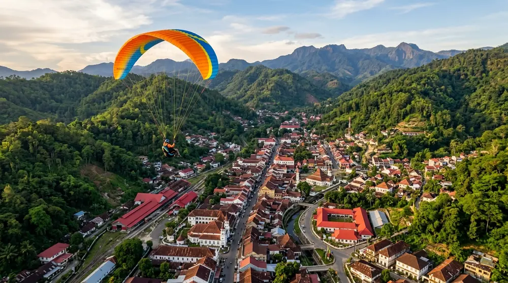
Danau & Gunung
Puncak Polan & Paralayang Sawahlunto
📍 Kecamatan Lembah Segar, Kota Sawahlunto
Puncak Polan adalah bukit panorama berketinggian sekitar 400 meter di atas permukaan laut yang menjulang persis di atas lanskap kota tambang bersejarah Warisan Dunia UNESCO Sawahlunto. Bukit ini dahulu difungsikan sebagai pos telegraf dan menara pengawas aktivitas perkeretaapian serta tambang batu bara Ombilin pada masa pendudukan kolonial Belanda abad ke-19.
Kini Puncak Polan telah bertransformasi menjadi salah satu lokasi lepas landas olahraga dirgantara paralayang (paragliding) dan gantole terbaik di Sumatera Barat. Para penerbang tandem dan atlet profesional dapat melayang bebas di udara, menikmati panorama spektakuler tata kota kolonial Belanda abad ke-19, atap-atap gedung heritage bata merah, jaringan rel kereta api kuno, serta lembah hijau pegunungan Bukit Barisan dari ketinggian.
Bagi wisatawan yang tidak mencoba paralayang, di puncak bukit tersedia gazebo istirahat, spot foto gardu pandang artistik, dan lintasan jalan setapak yang cocok untuk jalan sehat pagi sambil menghirup udara perbukitan yang bersih. Waktu terbaik ke Puncak Polan adalah pagi hari saat kabut tipis perlahan menyingkap keindahan kota tua bersejarah di bawahnya.
Daya Tarik Utama:
- ✓ Titik Lepas Landas Paralayang Terbaik di Atas Kota UNESCO
- ✓ Panorama Udara Tata Kota Tambang Kolonial Abad ke-19
- ✓ Spot Sunrise Menatap Lembah Pegunungan Sawahlunto
Waktu Terbaik: Pagi Hari (06:30 - 10:00 WIB)
Hal. 58
MALALA 2026 • Kabupaten Agam
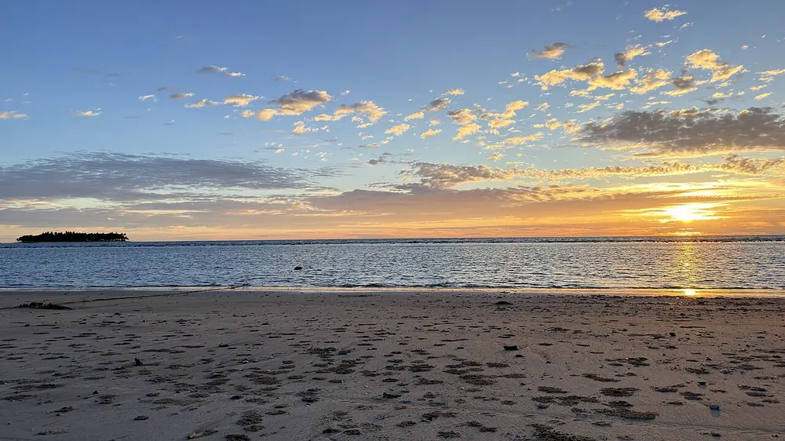
Pantai & Bahari
Pantai Tiku & Tanjung Mutiara Agam
📍 Kecamatan Tanjung Mutiara, Kab. Agam
Pantai Tiku adalah pesona pesisir bahari bersejarah yang membentang di Kecamatan Tanjung Mutiara, Kabupaten Agam. Sejak abad ke-14 hingga ke-17, Bandar Tiku merupakan salah satu pelabuhan niaga maritim lada dan rempah-rempah paling termasyhur di pesisir barat Pulau Sumatera, tempat berlabuhnya kapal-kapal saudagar dari Gujarat, Persia, Cina, dan Eropa sebelum bergeser ke Teluk Bayur.
Daya tarik utama Pantai Tiku saat ini adalah hamparan pasir laut landai yang sangat luas berpagar ribuan pohon pinus laut rindang (Cemara Udang) yang menyejukkan. Di sepanjang garis pantai, wisatawan dapat menyaksikan geliat kampung nelayan tradisional dengan perahu-perahu kayu bercadik warna-warni yang pulang melaut membawa tangkapan ikan segar, udang laut, kepiting, serta olahan krispi khas pesisir Sala Bulek.
Pantai ini juga memiliki dua pulau kecil tak berpenghuni di lepas pantai, yaitu Pulau Tangah dan Pulau Ujuang, yang memiliki mercusuar tua dan terumbu karang alami yang cocok untuk penyeberangan wisata perahu nelayan. Menikmati kelapa muda segar di bawah keteduhan pohon pinus sambil menatap matahari terbenam menjadikan Pantai Tiku destinasi bahari keluarga yang sangat menyenangkan.
Daya Tarik Utama:
- ✓ Bandar Dagang Rempah Kuno Abad ke-16 di Pesisir Barat
- ✓ Deretan Hutan Pinus Laut Rindang & Pasir Landai Asri
- ✓ Geliat Pasar Ikan Segar Nelayan Tradisional Tanjung Mutiara
Waktu Terbaik: Sore Hari (15:30 - 18:30 WIB)
Hal. 59
BAGIAN II
30 WARISAN ADAT
LIVING HERITAGE & PHILOSOPHY
ADAT, SENI
& TRADISI
MINANGKABAU
Menyelami falsafah agung "Adat Basandi Syarak, Syarak Basandi Kitabullah", arsitektur megah Rumah Gadang, mahakarya tenun Songket, seni beladiri Silek, dan upacara adat sakral.
Kategori Warisan Budaya:
🏛️ Arsitektur Tradisional
🥋 Seni Beladiri Silek
🧶 Tenun & Kriya Khas
🎭 Tari & Teater Rakyat
MINANGKAOS
BAB 2
Hal. 60
MALALA 2026 • WARISAN BUDAYA
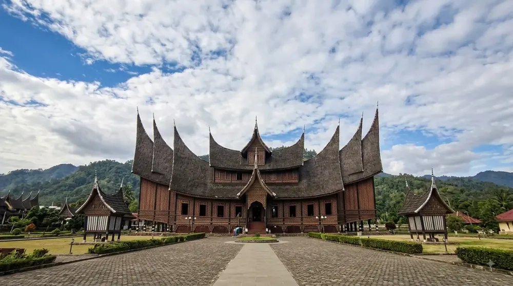
Arsitektur
Rumah Gadang
🏛️ Asal: Pagaruyung & Seluruh Nagari Minangkabau
Rumah Gadang adalah rumah adat tradisional masyarakat Minangkabau yang berbentuk panggung dengan struktur atap melengkung runcing menyerupai tanduk kerbau yang disebut gonjong. Bangunan ini bukan sekadar tempat tinggal, melainkan simbol keagungan adat dan sistem sosial kekerabatan Matriarkal Minangkabau yang menempatkan perempuan pada posisi terhormat sebagai pemilik warisan rumah.
Salah satu keunggulan arsitektur Rumah Gadang yang diakui dunia adalah konstruksinya yang dirancang tahan gempa bumi secara alami. Bangunan ini dibuat tanpa menggunakan paku besi sama sekali, melainkan mengandalkan tiang-tiang kayu jati utuh yang ditopang di atas batu datar dan dihubungkan memakai pasak kayu lentur yang sanggup meredam guncangan gempa.
Dinding luar Rumah Gadang dihiasi oleh ukiran kayu berwarna-warni (ukia) dengan motif yang diangkat dari alam seperti tanaman merambat, hewan, dan susunan geometris. Setiap motif ukiran menyimpan filosofi dan pepatah adat Minangkabau yang mengajarkan kebaikan, kesabaran, serta keharmonisan hidup manusia dengan alam sekitar.
Falsafah & Makna Adat:
"Rumah Gadang Pambuka Kata, Tiang Panjang Panopang Adat (Simbol kehormatan perempuan & ketahanan adat)"
Kategori: Arsitektur
Hal. 61
MALALA 2026 • WARISAN BUDAYA
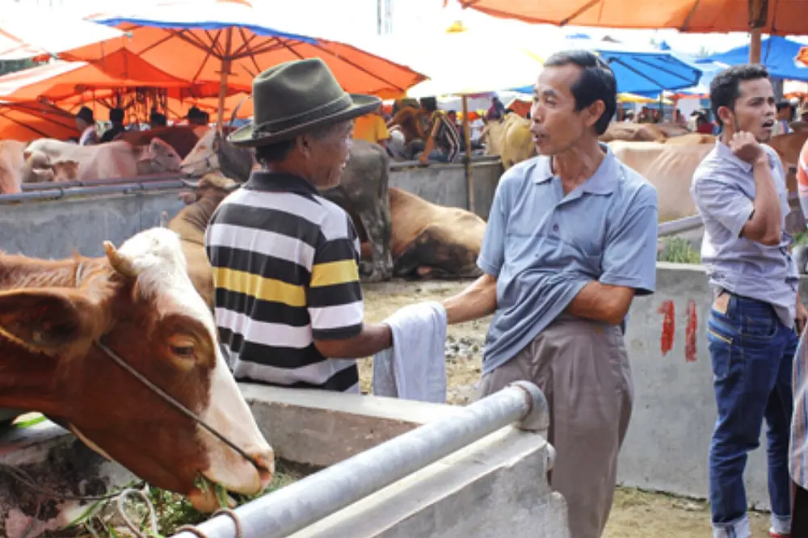
Tradisi Adat
Tradisi Marosok (Tawar-Menawar Rahasia)
🏛️ Asal: Pasar Ternak Tradisional Minangkabau
Tradisi Marosok adalah metode tawar-menawar non-verbal yang sangat unik dan hanya dipraktikkan secara eksklusif di pasar-pasar ternak tradisional Minangkabau seperti Pasar Ternak Payakumbuh, Muaro Paneh (Solok), dan Tanah Datar. Dalam transaksi ini, penjual dan pembeli tidak pernah mengucapkan sepatah kata pun tentang harga.
Mekanismenya sangat menarik: kedua belah pihak saling menggenggam tangan di bawah kain sarung, handuk, atau topi. Penawaran dan penawaran balik dikomunikasikan sepenuhnya melalui pola sentuhan dan kode tekanan jari, seperti memegang ruas jari tertentu, memutar jari, atau mengetuk telapak tangan untuk merepresentasikan jutaan atau ratusan ribu Rupiah.
Maknanya sangat mendalam dalam etika bisnis Islam dan Minangkabau: menjaga privasi transaksi agar tidak menimbulkan iri hati sesama pedagang, menghindari perang harga, serta mencegah pamer kekayaan. Tradisi ini berakar pada prinsip Islam an-tarāḍin (saling ridha secara privat).
Falsafah & Makna Adat:
"Raso Jo Pareso (Empati, privasi, dan kesetaraan dalam berniaga)"
Kategori: Tradisi Adat
Hal. 62
MALALA 2026 • WARISAN BUDAYA
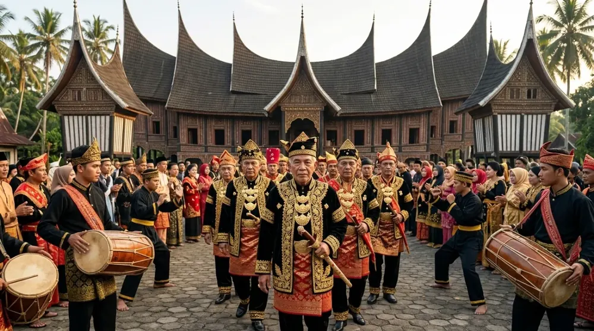
Upacara Adat
Upacara Batagak Penghulu
🏛️ Asal: Seluruh Nagari di Sumatera Barat
Batagak Penghulu adalah upacara sakral yang digelar oleh sebuah suku (kaum/klan) Minangkabau untuk melantik dan menganugerahkan gelar kehormatan turun-temurun (Gala Datuak) kepada seorang Penghulu (pemimpin klan) baru. Prosesi ini merupakan salah satu upacara adat paling agung dan mahal dalam tradisi Minangkabau.
Elemen ritual utama meliputi Mambantai Kabau yaitu penyembelihan satu atau beberapa ekor kerbau untuk menjamu seluruh masyarakat nagari. Selanjutnya, kandidat mengucapkan Sumpah Sati (Sumpah Sakral) sambil memegang benda-benda pusaka keramat, bersumpah untuk memerintah secara adil sesuai prinsip Adat Basandi Syarak, Syarak Basandi Kitabullah (Adat berdasarkan Syariat, Syariat berdasarkan Al-Quran).
Kandidat kemudian didandani dengan jubah adat Datuak berwarna hitam, penutup kepala Saluak, serta keris upacara. Seluruh warga nagari berkumpul untuk menyaksikan dan memberikan restu, menjadikan Batagak Penghulu sebagai puncak kebanggaan dan solidaritas kaum.
Falsafah & Makna Adat:
"Adat Basandi Syarak, Syarak Basandi Kitabullah (Adat berlandaskan syariat Islam)"
Kategori: Upacara Adat
Hal. 63
MALALA 2026 • WARISAN BUDAYA
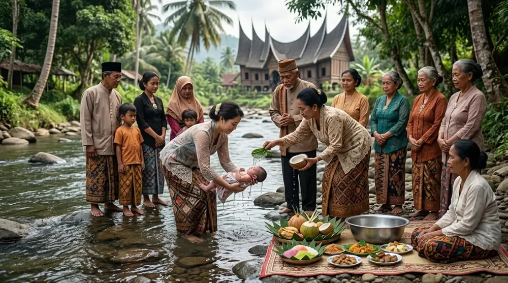
Upacara Adat
Upacara Turun Mandi
🏛️ Asal: Seluruh Nagari di Sumatera Barat
Upacara Turun Mandi adalah upacara adat perjalanan hidup (rite of passage) Minangkabau yang digelar untuk secara resmi memperkenalkan bayi yang baru lahir kepada alam, keluarga besar, dan masyarakat nagari. Prosesi ini dilaksanakan beberapa hari atau minggu setelah kelahiran.
Ibu dan bayi diiringi dalam arak-arakan seremonial menuju sungai atau sumber pemandian air alami (luhak/pincuran) di bawah naungan payung adat. Para wanita membawa beras kunyit (beras kuning) yang ditaburkan ke dalam air, daun tawa-tawa (daun obat penenang), serta kue-kue tradisional manis seperti onde-onde dan kue talam.
Bayi kemudian dimandikan perlahan dengan air sungai yang dipercaya memberikan pemurnian spiritual, kesehatan, serta integrasi harmonis sang bayi ke dalam lingkungan nagari. Upacara ini menegaskan ikatan mendalam masyarakat Minang antara manusia, alam, dan komunitas.
Falsafah & Makna Adat:
"Anak Dipangku, Kamanakan Dibimbiang, Urang Kampuang Dipatenggangkan"
Kategori: Upacara Adat
Hal. 64
MALALA 2026 • WARISAN BUDAYA
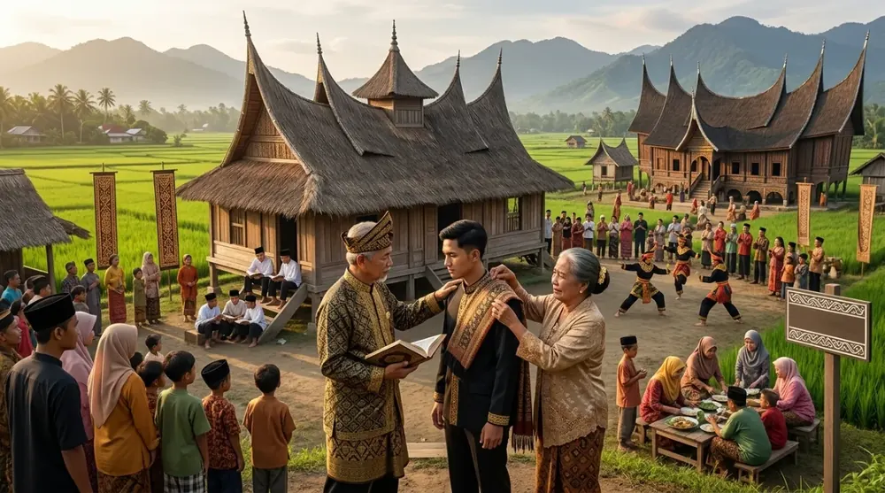
Tradisi Adat
Tradisi Surau & Merantau
🏛️ Asal: Seluruh Nagari Minangkabau
Tradisi Surau dan Tradisi Merantau adalah dua institusi budaya Minangkabau yang saling berkaitan erat dan membentuk karakter khas laki-laki Minang. Secara historis, anak laki-laki yang telah menginjak usia remaja meninggalkan kamar tidur orang tuanya untuk tinggal dan tidur di surau (langgar/musala) kampung.
Di surau inilah para tetua mengajarkan mereka baca Al-Quran, fikih Islam, sastra lisan Minang, etika pergaulan, serta seni beladiri Silek. Surau menjadi sekolah kehidupan yang menempa mental dan keilmuan pemuda Minang sebelum mereka melangkah ke tahap berikutnya: Merantau.
Setelah dewasa, pemuda Minang didorong secara budaya untuk meninggalkan nagari asal mereka menuju rantau (perantauan) demi mencari ilmu, pengalaman dagang, dan kekayaan. Pepatah yang sangat terkenal berbunyi: 'Karantau madang di hulu... Ka rantau bujang dahulu, di rumah baguna balun' (Pergilah merantau selagi muda, di kampung belum berguna).
Falsafah & Makna Adat:
"Ka Rantau Bujang Dahulu, Di Rumah Baguna Balun (Merantau membentuk jati diri)"
Kategori: Tradisi Adat
Hal. 65
MALALA 2026 • WARISAN BUDAYA
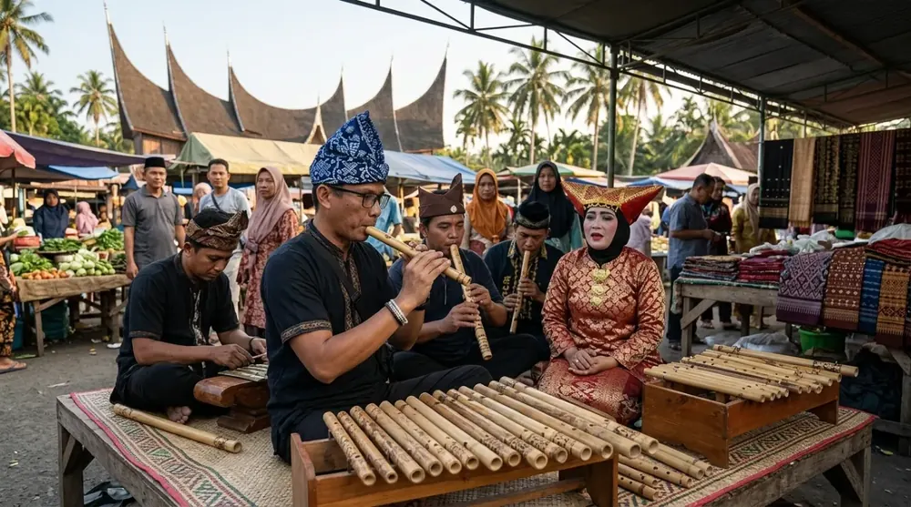
Tari & Musik
Saluang & Dendang (Seruling Bambu & Puisi Vokal)
🏛️ Asal: Solok, Sawahlunto, Sijunjung & seluruh Sumatera Barat
Saluang adalah alat musik seruling bambu tradisional khas Minangkabau yang dibuat dari bambu talang dengan 4 lubang jari. Keistimewaan utama pemain saluang terletak pada penguasaan teknik pernapasan sirkular (manitih atau pitunang), sebuah teknik napas lanjutan yang memungkinkan pemain memainkan melodi tanpa henti selama berjam-jam tanpa berhenti untuk mengambil napas.
Saluang selalu ditampilkan berpasangan dengan Dendang, yaitu penyanyi puisi vokal yang melantunkan pantun empat baris secara improvisasi. Lirik-lirik dendang mengekspresikan perasaan iba (kepiluan hati), kerinduan mendalam terhadap kampung halaman (mangingat rantau), sindiran sosial yang tajam, atau nasihat filosofis (pitutur) kehidupan.
Pertunjukan Saluang Jo Dendang biasanya digelar pada malam hari di lapau (kedai kopi) atau lapangan terbuka nagari, di mana masyarakat berkumpul menikmati alunan melodi yang sangat melankolis namun menghanyutkan jiwa. Suara saluang yang mendayu-dayu telah menjadi identitas sonik khas budaya Minangkabau.
Falsafah & Makna Adat:
"Suaro Hati Rang Minang (Ekspresi jiwa dan kerinduan Minangkabau)"
Kategori: Tari & Musik
Hal. 66
MALALA 2026 • WARISAN BUDAYA
Tradisi Adat
Pacu Jawi Tradisional (Alek Sawah)
🏛️ Asal: Nagari Pariangan, Rambatan, Limo Kaum, Sungai Tarab (Tanah Datar)
Pacu Jawi adalah tradisi agraris turun-temurun masyarakat Minangkabau di Kabupaten Tanah Datar yang telah dipraktikkan selama berabad-abad sebagai perayaan rasa syukur atas selesainya masa panen padi. Tradisi ini digelar secara bergiliran di empat kecamatan: Pariangan, Rambatan, Lima Kaum, dan Sungai Tarab.
Berbeda dengan balapan konvensional, Pacu Jawi dilaksanakan di petak sawah basah yang penuh lumpur tebal. Seorang joki berdiri di atas bilah kayu bajak (singkal) sambil memegang erat ekor dua ekor sapi jantan gagah. Tanpa menggunakan cambuk, joki mengarahkan sapi untuk berlari lurus dengan cara menggigit ekornya di tengah cipratan lumpur yang dramatis.
Filosofi mendalam Pacu Jawi adalah 'Kaba Baiak Baimbauan, Kaba Buruak Baambauan' serta mengajarkan ketegasan, keseimbangan, dan kepemimpinan yang adil dan lurus. Keberhasilan sepasang sapi berlari kencang dan lurus akan melipatgandakan nilai jual dan gengsi sosial sang pemilik ternak.
Falsafah & Makna Adat:
"Barek Samo Dipikua, Ringan Samo Dijinjiang (Solidaritas dan kepemimpinan yang lurus)"
Kategori: Tradisi Adat
Hal. 67
MALALA 2026 • WARISAN BUDAYA
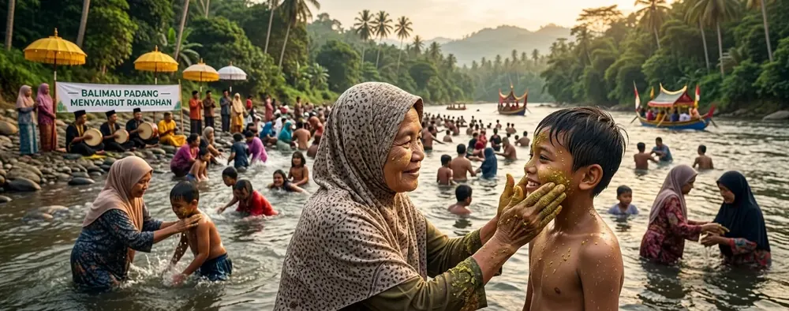
Upacara Adat
Tradisi Balimau
🏛️ Asal: Seluruh Aliran Sungai & Nagari di Sumatera Barat
Tradisi Balimau adalah ritual pembersihan dan penyucian diri lahir batin yang dilakukan secara turun-temurun oleh masyarakat Minangkabau pada petang hari menjelang tibanya bulan suci Ramadan. Tradisi ini dilaksanakan di sepanjang aliran sungai alami, tepian danau, atau pemandian alam di seluruh Ranah Minang.
Bahan utama yang digunakan adalah ramuan alami tradisional yang diracik dari jeruk purut (limau purut), daun pandan wangi, bunga kenanga, akar wangi, daun tawa-tawa, serta sari kulit pohon langir yang menghasilkan busa alami. Ramuan harum ini diusapkan ke rambut dan seluruh badan sebagai simbol pembasuhan dosa dan penyucian raga.
Makna spiritual Balimau adalah mempersiapkan jiwa yang bersih dan suci sebelum menjalankan ibadah puasa, yang diawali dengan tradisi saling bersilaturahmi, mengunjungi orang tua dan sanak keluarga, serta saling bermaaf-maafan dengan sesama warga nagari.
Falsafah & Makna Adat:
"Mancuci Badik Mangasah Padang, Manyucikan Hati Manyambuik Ramadan"
Kategori: Upacara Adat
Hal. 68
MALALA 2026 • WARISAN BUDAYA
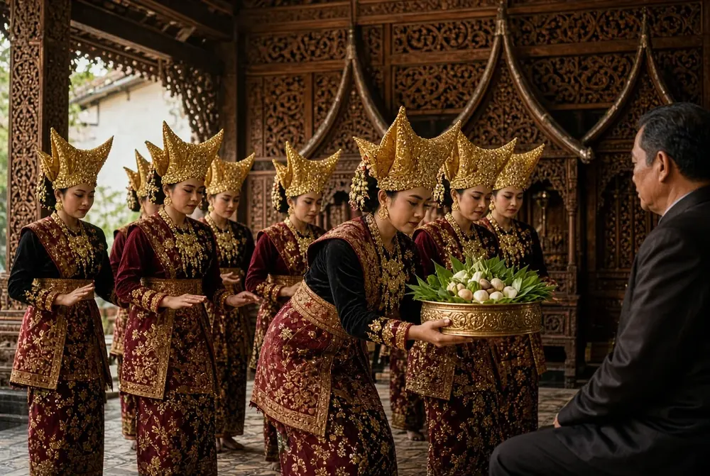
Tari & Musik
Tari Pasambahan & Siriah Carano
🏛️ Asal: Seluruh Wilayah Luhak Nan Tigo & Rantau Minangkabau
Tari Pasambahan adalah tarian adat sakral Minangkabau yang dipersembahkan sebagai wujud penghormatan tertinggi dalam menyambut tamu agung, pembukaan alek nagari, atau upacara pernikahan adat Minang. Tarian ini memvisualisasikan etika kesantunan dan keramah-tamahan suku Minangkabau.
Gerakan para penari—baik pria maupun wanita—berakar kuat pada gerak-gerak dasar Silek Minangkabau (pencak silat) yang diperhalus menjadi gestur sembah penghormatan yang sangat anggun dan berwibawa. Penari wanita mengenakan pakaian adat Bundo Kanduang lengkap dengan mahkota Suntiang yang berkilauan.
Puncak dari Tari Pasambahan adalah prosesi penyerahan Carano—wadah kuningan berukir berisi daun sirih, pinang, gambir, dan kapur sirih—kepada tamu kehormatan. Menerima dan mencicipi sirih carano merupakan simbol penerimaan ikatan persaudaraan dan restu tulus antara tuan rumah dan tamu.
Falsafah & Makna Adat:
"Siriah Sakapua Pinang Sacabiak (Simbol ketulusan hati dan penghormatan memuliakan tamu)"
Kategori: Tari & Musik
Hal. 69
MALALA 2026 • WARISAN BUDAYA
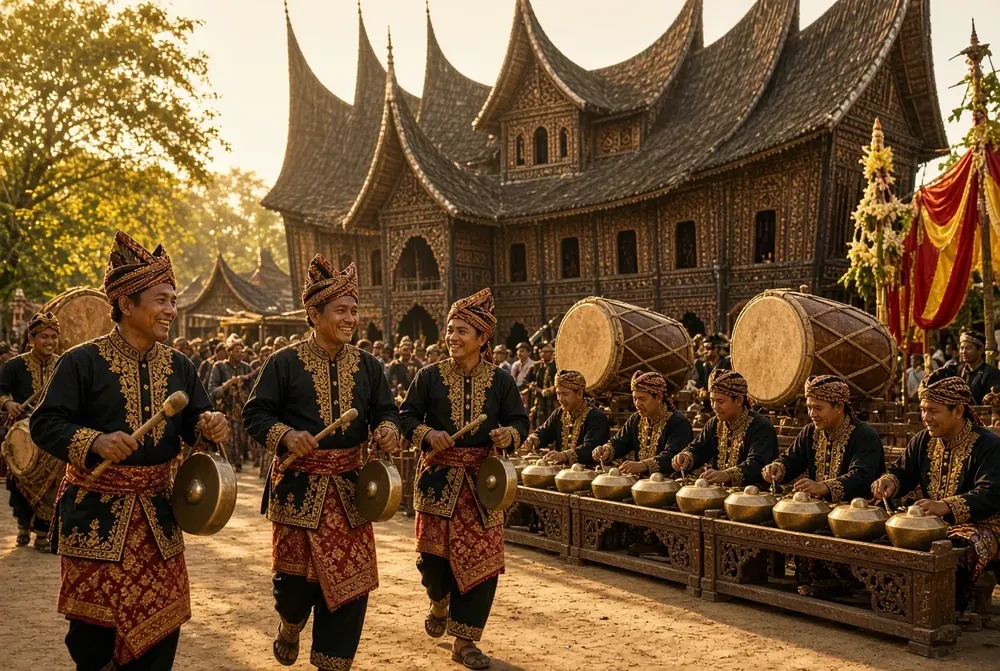
Tari & Musik
Musik Tradisional Talempong (Pacik & Rea)
🏛️ Asal: Tanah Datar, Agam, Lima Puluh Kota & Seluruh Sumbar
Talempong adalah alat musik perkusi bernada khas Minangkabau yang terbuat dari campuran tembaga dan timah (perunggu) atau kuningan berbentuk gong kecil berbusut di tengahnya. Tradisi talempong telah ada sejak Zaman Logam perunggu (Kebudayaan Dong Son) dan menjadi jiwa dari setiap perayaan adat di Minangkabau.
Terdapat dua gaya permainan utama: Talempong Pacik (dipegang dengan satu tangan sambil berjalan berarak dalam formasi tiga pemusik dengan pola ritmis polifonis yang saling mengunci/interlocking) dan Talempong Duduak/Rea (diletakkan berjajar di atas rancakan kayu panjang dan dimainkan dengan melodi kompleks berskala nada pentatonis Minang).
Suara dentang talempong yang ceria, ritmis, dan bertenaga selalu dipadukan dengan tabuhan gendang Gandang Tambua dan Tansa, mengobarkan semangat gotong royong serta kegembiraan dalam setiap pesta pernikahan adat, arak-arakan khatam Al-Quran, maupun penyambutan tamu nagari.
Falsafah & Makna Adat:
"Duduak Samo Randah, Tagak Samo Tinggi (Kesetaraan dan keharmonisan nada polifoni)"
Kategori: Tari & Musik
Hal. 70
MALALA 2026 • WARISAN BUDAYA
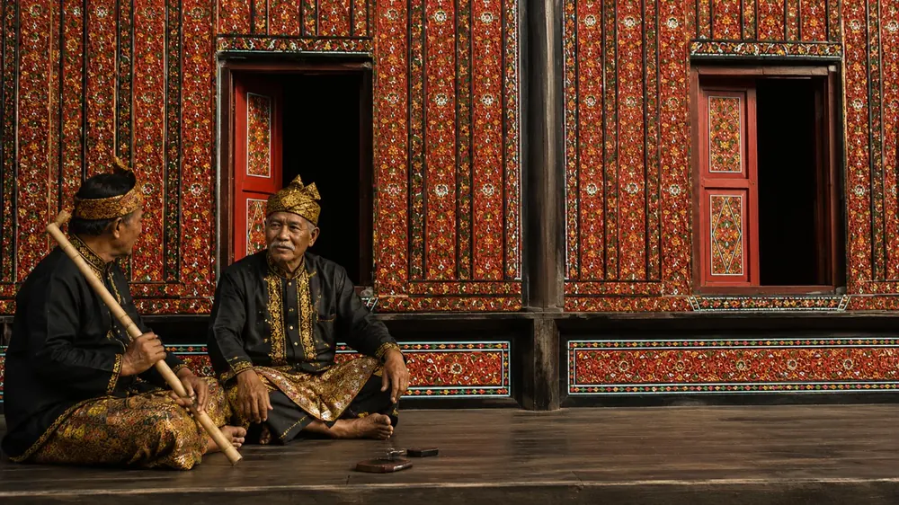
Arsitektur
Seni Ukir Rumah Gadang (Ukiran Minangkabau)
🏛️ Asal: Pusat Ukir Pandai Sikek & Koto Gadang
Seni Ukir Tradisional Minangkabau adalah ragam hias pahatan kayu bernilai seni tinggi yang menghiasi seluruh panel dinding luar, jendela, dan tiang-tiang Rumah Gadang. Berakar murni pada filosofi agung 'Alam Takambang Jadi Guru', motif ukiran Minang mengabstraksikan bentuk-bentuk flora, fauna, dan fenomena alam semesta ke dalam pola geometris melengkung yang sangat harmonis.
Sesuai ajaran Islam yang melarang penggambaran figur manusia dan hewan secara harfiah, motif ukir Minang diwujudkan dalam stilasi sulur-sulur tumbuhan, seperti motif legendaris Kaluak Paku (keluk pucuk pakis), Aka Cino (sulur tanaman meliuk), Siriah Juang, Pucuak Rabuang (rebung bambu), serta Kuciang Tidua.
Setiap motif memiliki pepatah petitih dan pesan moral yang mendalam. Contohnya, motif Kaluak Paku melambangkan tanggung jawab seorang mamak: 'Kaluak paku kacang balimbiang, tampuruang lenggang-lenggangkan; anak dipangku kamanakan dibimbiang, urang kampuang dipatenggangkan' (Membimbing anak kandung sekaligus mengayomi kemenakan dan warga nagari).
Falsafah & Makna Adat:
"Alam Takambang Jadi Guru (Pelajaran kearifan hidup yang dipetik dari gerak alam semesta)"
Kategori: Arsitektur
Hal. 71
MALALA 2026 • WARISAN BUDAYA
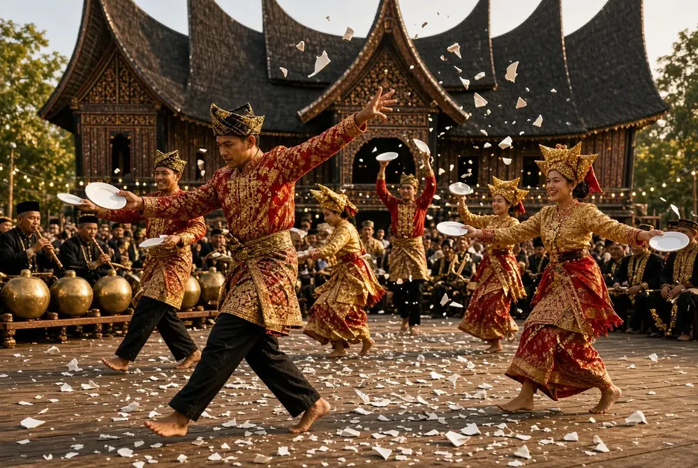
Tari & Musik
Tari Piring (Atraksi Piring Pecah)
🏛️ Asal: Solok & Dataran Tinggi Minangkabau
Tari Piring merupakan seni tari tradisional kebanggaan Minangkabau yang berasal dari Solok dan telah memukau penonton di berbagai panggung internasional. Para penari dengan tangkas memegang dua buah piring porselen di telapak tangan sambil mengayunkan gerakan tari yang sangat cepat, dinamis, dan energik diiringi dentuman alunan musik Talempong dan Saluang.
Awalnya, Tari Piring diciptakan sebagai ritual pemujaan dan rasa syukur masyarakat Minangkabau kepada dewa atas keberhasilan panen padi yang melimpah. Seiring perkembangan ajaran Islam di Minangkabau, tarian ini bertransformasi menjadi pertunjukan seni hiburan rakyat untuk menyambut tamu agung dan memeriahkan upacara pernikahan adat.
Puncak atraksi Tari Piring yang paling mendebarkan terjadi di akhir tarian, di mana para penari melempar piring porselen ke udara hingga pecah berkeping-keping di lantai, lalu menari gembira di atas pecahan porselen tajam tanpa terluka sedikit pun. Atraksi ini memperlihatkan tingkat konsentrasi tinggi dan kesucian jiwa para penari.
Falsafah & Makna Adat:
"Syukur Atas Rezeki & Ketangkasan Jiwa (Rasa syukur mendalam atas keberkahan hasil bumi)"
Kategori: Tari & Musik
Hal. 72
MALALA 2026 • WARISAN BUDAYA
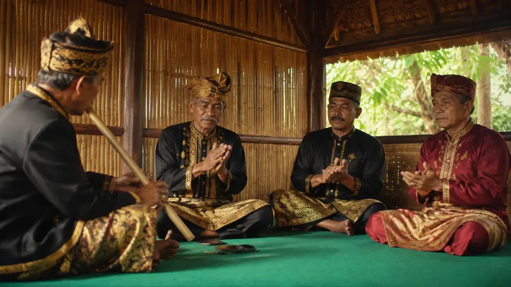
Tradisi Adat
Tradisi Bakaba & Sastra Tutur Minang
🏛️ Asal: Pesisir Selatan, Pariaman, Solok & Seluruh Nagari
Tradisi Bakaba adalah seni bercerita dan sastra tutur lisan klasik Minangkabau yang dibawakan oleh seorang juru cerita ahli (Tukang Kaba) di hadapan khalayak nagari. Pertunjukan ini biasanya digelar semalam suntuk di lepau (kedai kopi) atau balai adat nagari, memikat pendengar dengan hikayat panjang berirama puitis yang sarat ajaran moral.
Tukang Kaba melantunkan bait-bait pantun dan prosa liris Minang dengan iringan gesekan dawai Rebab Pasisia atau tiupan Saluang. Cerita-cerita legendaris yang dibawakan meliputi wiracarita klasik seperti Kaba Cindua Mato (kisah kepahlawanan dan kesetiaan pada hukum adat), Kaba Malin Deman, Kaba Anggun Nan Tongga, dan Kaba Si Umbuik Mudo.
Tradisi Bakaba berfungsi sebagai sarana transmisi nilai-nilai adat, sejarah nagari, etika pergaulan, hukum syarak, serta kritik sosial yang disampaikan dengan metafora bahasa Minang yang sangat halus dan bernas.
Falsafah & Makna Adat:
"Mambangkik Batang Tarandam (Menghidupkan kembali mutiara kearifan dan sejarah leluhur)"
Kategori: Tradisi Adat
Hal. 73
MALALA 2026 • WARISAN BUDAYA
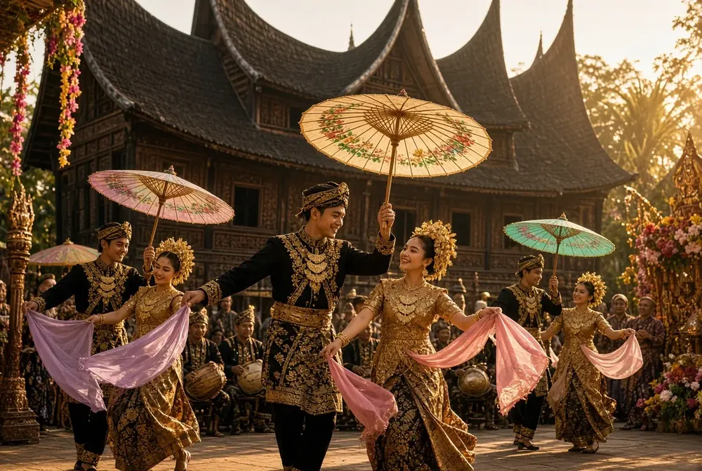
Tari & Musik
Tari Payung Minangkabau
🏛️ Asal: Bukittinggi, Padang Panjang & Seluruh Sumatera Barat
Tari Payung adalah tarian tradisional pergaulan muda-mudi Minangkabau yang dibawakan secara berpasangan dengan menggunakan properti payung kertas hias dan selendang sutra. Tarian ini melambangkan perlindungan, kasih sayang, dan keharmonisan dalam ikatan rumah tangga menurut adat Minangkabau.
Penari pria menari dengan lincah dan berwibawa sambil memegang payung yang dinaungkan di atas kepala pasangannya, melambangkan peran laki-laki Minang sebagai pelindung dan pengayom keluarga. Sementara itu, penari wanita menari anggun dengan mempermainkan selendang sutra, menyimbolkan kelembutan budi pekerti, kesetiaan, dan kesiapan membina bahtera rumah tangga.
Iringan lagu tradisional 'Babendi-bendi ka Sungai Tanang' dengan tempo rancak dan ceria menciptakan suasana pementasan yang sangat memikat hati, menjadikannya salah satu tarian rakyat paling populer dalam pesta pernikahan dan festival budaya Minang.
Falsafah & Makna Adat:
"Payuang Panji Adat (Laki-laki sebagai pelindung dan perempuan sebagai tiang kelembutan keluarga)"
Kategori: Tari & Musik
Hal. 74
MALALA 2026 • WARISAN BUDAYA
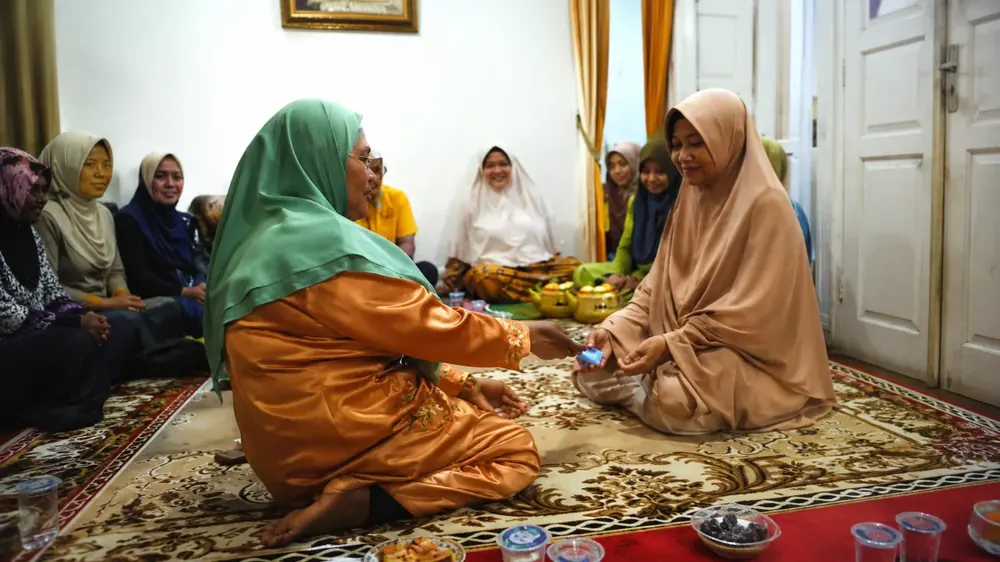
Upacara Adat
Tradisi Manyiriah & Batimbang Tando
🏛️ Asal: Seluruh Wilayah Alam Minangkabau
Manyiriah dan Batimbang Tando adalah rangkaian upacara adat peminangan dan pertunangan sakral dalam sistem kekerabatan matrilineal Minangkabau. Dalam prosesi ini, pihak keluarga calon mempelai wanita (anak daro) mengutus juru runding adat berkunjung ke rumah keluarga calon mempelai pria (marapulai) dengan membawa sirih pinang lengkap dalam kampia sirih.
Acara dilanjutkan dengan Batimbang Tando (bertukar tanda ikatan), di mana kedua belah pihak keluarga saling bertukar benda pusaka bernilai tinggi—seperti keris berukir emas, kain songket antik, atau gelang pusaka keluarga. Pertukaran tanda ini mengikat janji suci yang disaksikan oleh para ninik mamak (tetua adat) dan alim ulama nagari.
Tradisi ini menjunjung tinggi musyawarah mufakat (basilek lidah dengan petatah-petitih adat yang sangat santun), mengukuhkan pertalian dua kaum keluarga besar, serta menegaskan bahwa pernikahan dalam adat Minang bukan sekadar ikatan dua individu, melainkan penyatuan dua klan suku yang kokoh.
Falsafah & Makna Adat:
"Bulek Aia Dek Pambuluah, Bulek Kato Dek Mupakaik (Kesepakatan kokoh melalui musyawarah mufakat)"
Kategori: Upacara Adat
Hal. 75
MALALA 2026 • WARISAN BUDAYA
Kain & Kerajinan
Kain Songket Pandai Sikek
🏛️ Asal: Nagari Pandai Sikek, Tanah Datar
Songket Pandai Sikek adalah kain tenun tradisional mewah warisan leluhur Nagari Pandai Sikek, Kabupaten Tanah Datar, yang telah diakui secara resmi sebagai Warisan Budaya Takbenda Indonesia. Ditenun secara manual menggunakan Alat Tenun Bukan Mesin (ATBM), kain ini menggunakan benang emas dan perak murni yang ditenun saksama di atas bahan kain sutra halus.
Proses pengerjaan satu lembar kain Songket Pandai Sikek membutuhkan waktu pembuatan selama berbulan-bulan dengan tingkat ketelitian dan kesabaran yang sangat tinggi. Motif ukiran kain seperti saik kalam, batang pinang, dan pucuk rebung mengandung filosofi tentang doa keselamatan, kesabaran, dan martabat tinggi bagi pemakainya.
Kain Songket Pandai Sikek dikenakan pada momen-momen adat agung seperti upacara batagak penghulu (pengangkatan kepala adat), pernikahan adat, dan perayaan besar agama. Memiliki dan mengenakan Songket Pandai Sikek merupakan kebanggaan tertinggi bagi masyarakat Minangkabau.
Falsafah & Makna Adat:
"Setitik Benang Ditenun Sabar, Menjadi Keagungan Adat (Lambang kesabaran dan martabat tinggi)"
Kategori: Kain & Kerajinan
Hal. 76
MALALA 2026 • WARISAN BUDAYA
Seni Beladiri
Seni Beladiri Silek Minang
🏛️ Asal: Pesisir & Dataran Tinggi Sumatera Barat
Silek Minangkabau adalah seni beladiri tradisional warisan leluhur masyarakat Minang yang memadukan ketangkasan olah fisik, olah rasa, serta kedalaman batin spiritual. Silek bukan sekadar sarana untuk membela diri, melainkan pilar utama dalam pembentukan karakter pemuda Minang yang diajarkan secara turun-temurun di sasaran (padepokan silat).
Falsafah utama Silek Minangkabau berbunyi 'Lahir Silek Mencari Kawan, Batin Silek Mencari Tuhan'. Prinsip luhur ini mengajarkan bahwa gerakan silat digunakan untuk merangkul persaudaraan dan menghindari pertikaian, sedangkan dimensi batinnya mengarahkan pesilat untuk selalu mendekatkan diri kepada Sang Pencipta.
Gerakan Silek Minang dikenal sangat fleksibel, mengalir rendah, dan memanfaatkan tumpuan kaki yang kokoh seperti gerakan Harimau (Silek Harimau). Silek kerap ditampilkan dalam seni pertunjukan Randai dan Tari Pasambahan sebagai simbol ketangkasan dan perlindungan bagi nagari.
Falsafah & Makna Adat:
"Lahir Silek Mencari Kawan, Batin Silek Mencari Tuhan (Ketangkasan fisik untuk persaudaraan)"
Kategori: Seni Beladiri
Hal. 77
MALALA 2026 • WARISAN BUDAYA
Tradisi Adat
Upacara Adat Makan Bajamba
🏛️ Asal: Nagari Minangkabau (Batusangkar, Solok, Bukittinggi)
Makan Bajamba (disebut juga Makan Barapak) adalah tradisi ritual makan bersama secara lesehan dalam adat Minangkabau yang dilakukan dengan duduk melingkar mengelilingi satu nampan besar berisi makanan. Tradisi ini telah berlangsung sejak abad ke-7 dan digelar pada perayaan hari besar keagamaan, upacara adat, serta penyambutan tamu kehormatan.
Satu jamba (nampan makanan) biasanya diperuntukkan untuk 3 hingga 6 orang yang duduk bersila bagi laki-laki dan bersimpuh bagi perempuan. Di tengah nampan disajikan aneka masakan khas seperti Rendang, Gulai Ayam, Sambal Lado Tanak, dan Nasi Padeh, ditutup dengan kudapan manis Lamang Tapai.
Nilai filosofis utama dari Makan Bajamba adalah mengajarkan kesetaraan tanpa memandang status sosial, memupuk kebersamaan dan persaudaraan yang erat, serta melatih kedisiplinan tatakrama adat saat mengambil hidangan makanan secara sopan.
Falsafah & Makna Adat:
"Duduk Sama Rendah, Berdiri Sama Tinggi (Simbol kebersamaan & kesetaraan derajat manusia)"
Kategori: Tradisi Adat
Hal. 78
MALALA 2026 • WARISAN BUDAYA
Teater Tradisional
Kesenian Randai
🏛️ Asal: Tersebar di Seluruh Pelosok Sumatera Barat
Randai adalah seni pertunjukan teater tradisional khas Minangkabau yang memadukan berbagai unsur seni, mulai dari seni bela diri (silek), seni tari, seni drama, hingga seni vokal (dendang) dan musik. Dalam pertunjukannya, puluhan pemain berdiri melingkar lalu melangkah secara dinamis sambil menepuk celana gelombang mereka, menghasilkan suara tepakan ritmis yang sangat ikonik.
Dialog dalam Randai tidak diucapkan secara biasa, melainkan didendangkan atau dinyanyikan dengan gurindam dan kaba (cerita rakyat). Cerita yang diangkat biasanya berkisar pada legenda-legenda pahlawan atau kisah romansa klasik Minangkabau seperti Malin Kundang, Sabai nan Aluih, atau Cindua Mato.
Kesenian komunal ini menjadi wadah berkumpulnya masyarakat nagari di lapangan terbuka pada malam hari. Randai sarat akan pesan moral dan pepatah-petitih adat yang diajarkan secara menghibur kepada generasi muda.
Falsafah & Makna Adat:
"Malingka Nagari, Mambantuak Budi (Kebersamaan menjaga nagari dan budi pekerti)"
Kategori: Teater Tradisional
Hal. 79
MALALA 2026 • WARISAN BUDAYA

Olahraga Tradisional
Tradisi Pacu Kuda Tradisional
🏛️ Asal: Bukittinggi, Padang Panjang, Payakumbuh, Batusangkar
Pacu Kuda adalah tradisi olahraga rakyat Minangkabau yang sangat meriah dan telah diwariskan sejak awal abad ke-20. Berbeda dengan pacuan kuda modern, pacu kuda tradisional Sumatera Barat memiliki aturan unik di mana jokinya adalah pemuda lokal yang menunggang kuda balap tanpa menggunakan pelana (bareback) demi menunjukkan ketangkasan dan keberanian absolut.
Kuda-kuda yang dipertandingkan merupakan hasil persilangan antara kuda lokal dan ras kuda unggul, dilatih secara khusus dengan asupan pakan bernutrisi tradisional. Gelanggang pacu kuda seperti Gelanggang Bancah Laweh di Padang Panjang atau Bukit Ambacang di Bukittinggi selalu dipenuhi oleh puluhan ribu penonton dari berbagai daerah.
Acara pacu kuda bukan hanya tentang balapan, melainkan merupakan alek nagari (pesta rakyat) besar-besaran. Di sekitar arena, pengunjung dapat menikmati aneka kuliner lokal, pasar malam, serta menjadi ajang silaturahmi akbar bagi para perantau yang sengaja pulang kampung.
Falsafah & Makna Adat:
"Mambangkik Batang Tarandam (Membangkitkan semangat juang dan kebanggaan nagari)"
Kategori: Olahraga Tradisional
Hal. 80
MALALA 2026 • WARISAN BUDAYA
Pakaian Adat
Pakaian Adat Bundo Kanduang
🏛️ Asal: Pagaruyung dan Seluruh Sumatera Barat
Pakaian Bundo Kanduang adalah busana kebesaran adat perempuan Minangkabau yang merepresentasikan keluhuran martabat wanita sebagai 'Limpapeh Rumah Nan Gadang' (Pilar Utama Rumah Gadang). Ciri paling ikonik dari busana ini adalah penutup kepala yang disebut Tingkuluak, dilipat membentuk dua ujung runcing menyerupai tanduk kerbau atau atap gonjong.
Busana ini terdiri dari baju kurung basiba longgar yang sangat sopan dan sesuai dengan syariat Islam, kain sarung tenun songket mewah bertabur benang emas sebagai bawahan, serta selempang bersulam emas (salempang) yang dikalungkan di bahu sebagai simbol tanggung jawab mengayomi keluarga dan nagari.
Selain itu, Bundo Kanduang memakai aksesoris perhiasan emas berlapis-lapis seperti kalung gadang, gelang, dan cincin bermotif kuno. Setiap detail lipatan, warna, dan perhiasan memiliki makna kiasan dalam tatanan sistem kekerabatan matrilineal yang menjunjung tinggi kehormatan perempuan Minang.
Falsafah & Makna Adat:
"Limpapeh Rumah Nan Gadang (Wanita sebagai tiang penopang keharmonisan kaum dan adat)"
Kategori: Pakaian Adat
Hal. 81
MALALA 2026 • WARISAN BUDAYA
Sistem Sosial
Sistem Matrilineal Minangkabau
🏛️ Asal: Seluruh Wilayah Alam Minangkabau
Sistem Matrilineal Minangkabau merupakan sistem kekerabatan terbesar di dunia yang menarik garis keturunan dan pewarisan harta pusaka melalui jalur ibu. Dalam tatanan ini, garis keturunan, afiliasi suku, gelar kehormatan, serta tanah pusaka tinggi (harta pusako tinggi) diwariskan secara ketat dari ibu kepada anak perempuan secara turun-temurun.
Peran sentral perempuan sebagai Bundo Kanduang menjadikan mereka pemilik utama dan penjaga Rumah Gadang, lahan pertanian, serta aset-aset nenek moyang. Sementara itu, laki-laki Minang sebagai mamak (paman dari pihak ibu) bertanggung jawab mengelola harta kaum dan menegakkan hukum adat untuk keponakan mereka (kemenakan), bukan untuk anak kandung mereka sendiri.
Filosofi mendalam di balik sistem ini adalah menjamin keamanan ekonomi struktural bagi perempuan, mencegah kemiskinan atau kehilangan tempat tinggal pasca perceraian atau menjanda, serta menyeimbangkan otoritas antara kepemilikan properti perempuan dan tata kelola adat laki-laki.
Falsafah & Makna Adat:
"Garis Keturunan Menurut Ibu, Harta Pusaka Milik Kaum Perempuan"
Kategori: Sistem Sosial
Hal. 82
MALALA 2026 • WARISAN BUDAYA
Seni Bela Diri
Seni Beladiri Silek Harimau Minangkabau
🏛️ Asal: Luhak Agam, Tanah Datar & Lima Puluh Kota
Silek Harimau adalah salah satu aliran seni beladiri tradisional paling purba dan tersohor di Ranah Minang yang berasal dari daerah perbukitan Luhak Nan Tigo. Aliran silat ini diciptakan oleh para pendekar Minangkabau masa lampau dengan mempelajari secara mendalam karakter gerak-gerik, kelenturan, ketenangan, serta serangan mendadak harimau sumatera (Panthera tigris sumatrae) saat berburu mangsa di tengah hutan rimba Bukit Barisan.
Karakteristik teknis yang paling menonjol dari Silek Harimau adalah posisi kuda-kuda sangat rendah yang menempel ke permukaan tanah (kuda-kuda marapok), di mana pesilat bergerak merayap secara tak terduga dengan kecepatan tinggi. Serangan difokuskan pada kuncian sendi, sapuan bawah kaki yang merobohkan keseimbangan lawan, serta cengkeraman cakar tangan yang sangat mematikan. Meski sangat berbahaya dalam pertempuran nyata, seorang pendekar Silek Harimau dibekali nilai spiritual dan moral yang ketat bahwa silat hanya digunakan untuk membela diri dan melindungi marwah kaum, bukan untuk kesombongan.
Dalam perkembangannya, Silek Harimau kini kerap ditampilkan dalam upacara adat penyambutan tamu agung serta dipelajari oleh ratusan praktisi beladiri internasional yang datang langsung ke surau-surau sasaran silat di Sumatera Barat. Kesenian ini mencerminkan keluhuran falsafah Minangkabau 'Lahir Silat Mencari Kawan, Batin Silat Mencari Tuhan'.
Falsafah & Makna Adat:
"Lahir Silat Mencari Kawan, Batin Silat Mencari Tuhan (Bela diri berlandaskan persaudaraan dan spiritualitas)"
Kategori: Seni Bela Diri
Hal. 83
MALALA 2026 • WARISAN BUDAYA
Tari & Musik
Kesenian Rabab Pasisie (Rebab Pesisir Minang)
🏛️ Asal: Kabupaten Pesisir Selatan
Rabab Pasisie adalah kesenian musik gesek tradisional dan sastra tutur lisan yang tumbuh dan berakar kuat dalam kebudayaan masyarakat Pesisir Selatan Sumatera Barat. Instrumen rabab pesisir ini terbuat dari batok kelapa tua atau kayu pilihan yang dilapisi kulit binatang tipis serta memiliki dawai kawat yang digesek menggunakan busur khusus, menghasilkan suara khas bernada sengau melankolis yang mampu menyayat hati pendengarnya.
Pertunjukan Rabab Pasisie selalu dibawakan oleh seorang seniman tutur ulung (Tukang Rabab) yang menggesek instrumen sambil mendendangkan kisah-kisah sastra lisan (kaba) sepanjang malam suntuk. Lirik kaba yang dibawakan mencakup kisah perjuangan merantau, ratapan nasib anak yatim, pesan-pesan moral agama, hingga sindiran sosial yang sarat petuah adat Minangkabau, dilantunkan secara improvisasi dengan kepiawaian vokal yang memukau.
Kesenian ini biasanya digelar dalam perhelatan akbar anak nagari, pesta pernikahan (baralek), atau malam syukuran pasca panen di serambi Rumah Gadang. Bagi masyarakat pesisir Minang, Rabab Pasisie bukan sekadar hiburan musikal malam, melainkan media penyampaian amanah leluhur dan pengikat emosional kerinduan para perantau terhadap kampung halaman.
Falsafah & Makna Adat:
"Bakaba Manyampaikan Petuah, Mandendangkan Raso Jo Pareso (Sastra tutur penyampai nilai moral)"
Kategori: Tari & Musik
Hal. 84
MALALA 2026 • WARISAN BUDAYA
Tradisi Adat
Tradisi Batagak Kudo-Kudo (Gotong Royong Atap Rumah)
🏛️ Asal: Seluruh Luhak & Rantau Minangkabau
Tradisi Batagak Kudo-Kudo adalah salah satu ritual gotong royong adat Minangkabau yang dilaksanakan ketika proses pembangunan sebuah Rumah Gadang, rumah hunian warga nagari, atau surau/masjid telah mencapai tahap pemasangan kerangka kuda-kuda atap. Secara filosofis, 'kudo-kudo' (kuda-kuda) melambangkan kekuatan penopang utama bangunan yang menentukan kekokohan dan keselamatan seluruh penghuni rumah di masa depan.
Keunikan upacara ini terletak pada partisipasi aktif seluruh warga nagari, kerabat suku, dan handai taulan yang datang berbondong-bondong membawa berbagai sumbangan bahan bangunan seperti seng atap, semen, kayu, paku, atau uang tunai. Di ujung puncak kuda-kuda kayu yang telah terpasang tegak, dikibarkan kain putih atau bendera adat marawa serta digantungkan tandan pisang raja, kelapa muda, dan tebu manis sebagai simbol doa kesuburan, kemakmuran, dan kedamaian bagi pemilik rumah.
Acara kemudian ditutup dengan jamuan makan bersama yang meriah berupa hidangan gulai kari, rendang, dan sambalado yang disiapkan oleh kaum ibu-ibu nagari. Tradisi Batagak Kudo-Kudo menegaskan prinsip fundamental masyarakat Minang: 'Barek samo dipikua, ringan samo dijinjiang' (Berat sama dipikul, ringan sama dijinjing).
Falsafah & Makna Adat:
"Barek Samo Dipikua, Ringan Samo Dijinjiang (Solidaritas gotong royong anak nagari)"
Kategori: Tradisi Adat
Hal. 85
MALALA 2026 • WARISAN BUDAYA
Tradisi Adat
Tradisi Serak Gulo Padang (Hujan Gula Akulturasi)
🏛️ Asal: Kampung Batipuh, Kota Padang
Tradisi Serak Gulo (Menabur Gula) adalah festival budaya dan keagamaan tahunan yang sangat langka di dunia, dipraktikkan secara turun-temurun oleh komunitas Muslim keturunan India (Keturunan Gujarat/Tamil) di kawasan Pasar Batipuh, Kota Padang. Tradisi ini telah berlangsung selama lebih dari dua abad sejak imigran pedagang Muslim India menetap di pesisir barat Sumatera pada awal abad ke-19, membuktikan kerukunan dan akulturasi harmonis dengan masyarakat asli Minangkabau.
Upacara ini digelar setiap tanggal 1 Jumadil Akhir dalam kalender Hijriah untuk memperingati hari kelahiran ulama besar Sufi dan waliyullah Shahul Hamid dari Nagore, India Selatan. Prosesi dimulai dengan pembacaan doa dan shalawat di Masjid Muhammadan (masjid bersejarah berarsitektur India-Minang yang berdiri tahun 1843), kemudian ribuan bungkus gula pasir murni dibungkus kain perca warna-warni dilemparkan dari atas atap masjid ke arah ribuan warga dari berbagai etnis yang bersorak gembira di halaman bawah.
Filosofi di balik penaburan berton-ton gula pasir ini adalah berbagi manisnya rezeki kehidupan, ketulusan bersedekah, serta mempererat tali persaudaraan antar-umat beragama dan lintas etnis di Kota Padang. Tradisi Serak Gulo kini telah diakui sebagai Warisan Budaya Takbenda Nasional Indonesia yang sangat dibanggakan.
Falsafah & Makna Adat:
"Manis Bak Gulo, Bapantang Habis Mambagi Raso (Berbagi rezeki dan persaudaraan lintas etnis)"
Kategori: Tradisi Adat
Hal. 86
MALALA 2026 • WARISAN BUDAYA
Tari & Musik
Alat Musik Tradisional Bansi Minangkabau
🏛️ Asal: Pesisir Selatan & Seluruh Alam Minangkabau
Bansi adalah instrumen musik tiup seruling tradisional Minangkabau yang dibuat dari batang bambu talang tipis dengan 7 lubang nada di bagian atas dan 1 lubang ibu jari di bagian bawah. Berbeda dengan instrumen Saluang yang ditiup dari samping secara diagonal dan memiliki 4 lubang, Bansi ditiup secara lurus dari ujung dengan corong berpenyumbat kayu (fipple) sehingga jauh lebih mudah dimainkan dan mampu menghasilkan tangga nada diatonis lengkap.
Karakter suara Bansi sangat merdu, jernih, dan lincah, mampu meliuk-liuk memainkan irama lagu-lagu rakyat Minangkabau tempo cepat (lagu bungo) maupun lagu-lagu bernuansa syahdu penuh perenungan. Dalam ansambel musik Minang, Bansi kerap bertindak sebagai pembawa melodi utama yang bersahut-sahutan dengan denting Talempong Pacik dan tabuhan Gandang Gandang, menciptakan lanskap sonik yang sangat ceria dan dinamis.
Secara historis, Bansi dimainkan oleh para pemuda Minang saat menggembalakan kerbau di pematang sawah atau saat berkumpul santai di serambi surau pada malam hari untuk melepas lelah. Kini Bansi diajarkan di sekolah-sekolah seni di seluruh Sumatera Barat sebagai salah satu instrumen musik fundamental dalam melestarikan kekayaan musikalitas Nusantara.
Falsafah & Makna Adat:
"Aluih Tiupan Bansi Mambangun Jiwa (Keseimbangan rasa dan keharmonisan nada)"
Kategori: Tari & Musik
Hal. 87
MALALA 2026 • WARISAN BUDAYA
Tradisi Adat
Tradisi Manyerak Bareh Kunik (Beras Kunyit Sakral)
🏛️ Asal: Seluruh Wilayah Luhak Nan Tigo Sumatera Barat
Tradisi Manyerak Bareh Kunik adalah salah satu ritual simbolik paling esensial dalam tata upacara adat Minangkabau, berupa prosesi menaburkan campuran butiran beras pilihan yang telah dicelup perasan kunyit alami berwarna kuning keemasan, dicampur dengan wewangian irisan daun pandan dan kepingan koin logam. Ritual sakral ini selalu hadir dalam momen-momen tonggak kehidupan anak nagari seperti Upacara Batagak Penghulu, penyambutan mempelai (Marapulai & Anak Daro), serta peresmian Rumah Gadang.
Dalam kosmologi Minangkabau, warna kuning melambangkan keagungan martabat, kedaulatan hukum adat, serta keberkahan rezeki dari Tuhan Yang Maha Esa. Beras mencerminkan kemakmuran dan sumber kehidupan pokok kaum agraris, sedangkan kepingan koin logam yang diserakkan menjadi simbol doa kelimpahan materi dan kemurahan hati dalam berbagi kekayaan kepada sesama warga nagari.
Saat prosesi berlangsung, Bareh Kunik ditaburkan perlahan ke arah tamu kehormatan atau pengantin diiringi lantunan pasambahan (petatah-petitih adat) tingkat tinggi oleh para datuak dan tetua kaum. Tradisi Manyerak Bareh Kunik menegaskan keluhuran budi pekerti masyarakat Minang dalam memuliakan tamu dan menyambut fase baru kehidupan dengan doa kebaikan.
Falsafah & Makna Adat:
"Kuning Menandakan Tuah, Beras Menyemai Berkah (Doa kemakmuran dan kemuliaan adat)"
Kategori: Tradisi Adat
Hal. 88
MALALA 2026 • WARISAN BUDAYA
Tari & Musik
Kesenian Gandang Tambua & Gandang Tasa
🏛️ Asal: Kabupaten Agam, Padang Pariaman & Seluruh Sumbar
Gandang Tambua dan Gandang Tasa adalah ansambel perkusi perkusi kolosal tradisional khas Minangkabau yang dimainkan secara serentak untuk memeriahkan arak-arakan upacara adat, festival budaya, dan pesta nagari di seluruh Sumatera Barat. Tambua adalah drum kayu silinder berkulit kambing ganda berukuran besar yang digantungkan di pundak pemain, sedangkan Tasa adalah mangkuk perkusi tembaga berperekat kulit tipis yang dipukul menggunakan bilah rotan lentur dengan ritme sangat cepat.
Keistimewaan pertunjukan Gandang Tambua Tasa terletak pada dinamika ketukannya yang menggelegar, ritmis, dan membakar semangat. Pemain Tasa bertindak sebagai dirigen perkusi (pemberi komando tempo) yang mengarahkan belasan penabuh Tambua dengan variasi ketukan sinkron yang sangat rapat, diselingi atraksi koreografi akrobatik penabuh drum yang bergerak kompak dan penuh vitalitas.
Suara dentuman ritmis Gandang Tambua Tasa dapat terdengar hingga jarak berkilo-kilometer melintasi lembah dan ngarai, berfungsi secara historis sebagai genderang perang pemanggil warga nagari untuk berkumpul. Kini kesenian ini menjadi simbol kemeriahan perhelatan akbar anak nagari yang selalu menyedot antusiasme ribuan penonton.
Falsafah & Makna Adat:
"Badentang Mambangun Nagari, Sabiduak Sahilia Sasayok Salompek (Kekompakan dan semangat persatuan)"
Kategori: Tari & Musik
Hal. 89
MALALA 2026 • WARISAN BUDAYA

Tradisi Adat
Tradisi Bakajang / Sampan Alek Gunuang Malintang
🏛️ Asal: Nagari Gunuang Malintang, Kab. Lima Puluh Kota
Tradisi Bakajang adalah warisan budaya maritim sungai yang sangat spektakuler dan unik, digelar setiap tahun pasca Hari Raya Idulfitri oleh masyarakat Nagari Gunuang Malintang, Kecamatan Pangkalan Koto Baru, Kabupaten Lima Puluh Kota. Tradisi ini merekonstruksi kembali sejarah jalur pelayaran perahu para raja dan datuak Minangkabau di sepanjang aliran Sungai Batang Mahat menuju Kerajaan Melayu Kuno pada masa lampau.
Dalam prosesi ini, lima suku (kaum adat) di Nagari Gunuang Malintang saling berlomba merancang dan menghias miniatur perahu kayu raksasa berukuran hingga 10 meter yang dinamai 'Kajang'. Setiap perahu dihias megah menyerupai kapal pesiar tradisional atau Rumah Gadang terapung dengan ukiran rumit, bendera adat Marawa, serta replika kubah gonjong bertingkat yang sangat memukau, diawaki oleh puluhan pemuda nagari berbaju adat lengkap.
Perahu-perahu Kajang kemudian berlayar bersama menyusuri Sungai Batang Mahat untuk saling bersilaturahmi dan berbalas pantun adat antar-kampung di atas air. Tradisi Bakajang kini telah dinobatkan sebagai salah satu agenda resmi Karisma Event Nusantara (KEN) oleh Kemenparekraf RI karena keunikan nilai sejarah bahari dan persatuan anak nagarinya yang tiada tara.
Falsafah & Makna Adat:
"Bapanduang Ka Hilia, Manjapuik Tali Silaturahmi (Menyusuri sungai mempererat persaudaraan adat)"
Kategori: Tradisi Adat
Hal. 90
BAGIAN III
36 KULINER OTENTIK
AUTHENTIC MINANG GASTRONOMY
KULINER &
GASTRONOMI
RANAH MINANG
Koleksi mahakarya kuliner Minangkabau legendaris, dari Rendang Daging terbaik dunia, Sate Pariaman, Gulai Tambusu, Palai Rinuak Maninjau, hingga kudapan manis Lamang Tapai.
Kategori Gastronomi:
🍛 Hidangan Utama & Gulai
🍡 Kudapan & Jajanan Khas
☕ Minuman Tradisional
🐟 Olahan Ikan Endemik
MINANGKAOS
BAB 3
Hal. 91
MALALA 2026 • GASTRONOMI MINANG
Makanan Utama
Rendang Daging
🍽️ Asal: Minangkabau (Seluruh Sumbar)
Rendang Daging adalah hidangan mahakarya kuliner tradisional Minangkabau yang diakui secara internasional oleh CNN International dan UNESCO sebagai salah satu makanan terlezat di dunia. Masakan olahan daging sapi ini dimasak secara perlahan selama berjam-jam bersama santan kelapa murni dan racikan bumbu rempah seperti lengkuas, serai, jahe, cabai, dan daun jeruk.
Proses memasak rendang melalui tiga tahapan evolusi rasa: dimulai dari gulai (kuah encer), bertransformasi menjadi kalio (kuah kental cokelat), hingga akhirnya mengering sempurna menjadi rendang berwarna hitam pekat kaya minyak rempah alami. Minyak rempah ini bertindak sebagai pengawet alami sehingga rendang sanggup bertahan berbulan-bulan tanpa bahan kimia.
Dalam tata adat Minangkabau, rendang memiliki nilai simbolis yang sangat tinggi. Daging sapi melambangkan Niniak Mamak (pemimpin adat), santan melambangkan Cadiak Pandai (kaum intelektual), cabai melambangkan Alim Ulama (tokoh agama), dan racikan rempah melambangkan keseluruhan masyarakat Minang yang bersatu harmonis.
Karakteristik & Cita Rasa:
Gurih pekat, pedas lembut, kaya akan aroma rempah sangrai
Asal: Minangkabau (Seluruh Sumbar)
Hal. 92
MALALA 2026 • GASTRONOMI MINANG
🍽️ Asal: Kota Pariaman
Sala Lauak adalah kudapan legendaris dari pesisir Kota Pariaman dan Kabupaten Padang Pariaman yang telah diakui sebagai Warisan Budaya Takbenda Nasional (WBTB) pada tahun 2010. Camilan ini diciptakan oleh keluarga-keluarga nelayan pesisir untuk mengawetkan hasil tangkapan ikan harian menjadi makanan portabel yang tahan lama untuk dibawa berlayar.
Bahan utamanya terdiri dari tepung beras kasar yang dicampur dengan cincangan ikan asin (ikan maco/stuhuak), kunyit, bawang putih, jahe, bawang merah, serta irisan halus daun kunyit yang harum. Adonan ini kemudian digoreng dalam minyak panas hingga berbentuk bola-bola emas seukuran bola pingpong yang sangat renyah di luar namun tetap lembab di dalam.
Sala Lauak selalu hadir sebagai pelengkap hidangan Lontong Sayur, Soto Padang, atau Sate Pariaman. Rasa gurih asin ikan yang kuat berpadu dengan aroma herbal kunyit menjadikannya kudapan yang sangat adiktif dan selalu dirindukan para perantau.
Karakteristik & Cita Rasa:
Renyah luar lembab dalam, gurih asin ikan yang kuat, herbal kunyit
Asal: Kota Pariaman
Hal. 93
MALALA 2026 • GASTRONOMI MINANG
Makanan Utama
Palai Rinuak
🍽️ Asal: Danau Maninjau, Kabupaten Agam
Palai Rinuak adalah hidangan khas yang sangat langka dari tepian Danau Maninjau, Kabupaten Agam. Hidangan ini menggunakan Rinuak (Psilopsis sp.), ikan air tawar endemik berukuran sangat mungil (1 hingga 3 cm) yang hanya ditemukan secara eksklusif di perairan Danau Maninjau dan tidak ada di tempat lain di dunia.
Ikan rinuak segar dicampur dengan kelapa parut, cabai merah giling, kunyit, lengkuas, bawang merah, bawang putih, serai, dan daun jeruk purut. Campuran ini dibungkus rapat dalam daun pisang (palai/pepes ala Minang), lalu dikukus terlebih dahulu sebelum dipanggang di atas arang hingga mengeluarkan aroma asap yang sangat harum.
Rasa gurih dan pedas rempah berpadu harmonis dengan aroma smoky dari pemanggangan arang dan tekstur ikan-kelapa yang lembut dan halus. Palai Rinuak menjadi hidangan wajib coba yang sangat eksklusif bagi wisatawan yang berkunjung ke kawasan Danau Maninjau.
Karakteristik & Cita Rasa:
Gurih pedas rempah, aroma smoky arang, tekstur ikan-kelapa lembut
Asal: Danau Maninjau, Kabupaten Agam
Hal. 94
MALALA 2026 • GASTRONOMI MINANG
Makanan Utama
Gulai Cancang
🍽️ Asal: Dataran Tinggi Minangkabau
Gulai Cancang adalah hidangan gulai seremonial tradisional yang selalu hadir dalam pesta pernikahan adat Minangkabau (baralek) dan perayaan budaya besar. Nama 'Cancang' merujuk pada teknik pencincangan daging menjadi potongan dadu kecil yang sangat khas.
Bahan utamanya adalah daging sapi atau kambing yang dicincang menjadi kubus-kubus kecil (termasuk tulang rawan, lemak, dan sumsum tulang), lalu dimasak dalam santan kelapa kental dengan bumbu halus cabai merah, bawang merah, bawang putih, lengkuas, jahe, bunga lawang, kayu manis, kapulaga, pala, serta pasta kelapa sangrai (ambu-ambu).
Ciri khas Gulai Cancang adalah potongan daging yang kecil-kecil seukuran gigitan (bite-sized) dan lapisan minyak gulai berempah berwarna merah tua mengkilap yang mengambang di permukaan kuah. Rasanya yang sangat pedas, berminyak, dan kaya akan kompleksitas rempah menjadikannya hidangan favorit dalam setiap perayaan adat.
Karakteristik & Cita Rasa:
Sangat pedas berminyak, kompleksitas rempah tinggi, daging empuk kubus
Asal: Dataran Tinggi Minangkabau
Hal. 95
MALALA 2026 • GASTRONOMI MINANG
Sarapan Tradisional
Katupek Gulai Paku
🍽️ Asal: Pariaman & Padang
Katupek Gulai Paku adalah hidangan sarapan khas pesisir dan dataran rendah Minangkabau yang sangat populer di Pariaman dan Padang. Hidangan comfort food pagi ini terdiri dari ketupat (katupek) nasi yang dibungkus anyaman daun kelapa, disajikan dengan kuah gulai pakis (paku) berwarna kuning kehijauan yang sangat creamy.
Kuah gulai paku dibuat dari pucuk pakis muda liar yang dimasak dalam kuah santan berempah kunyit, jahe, lengkuas, cabai, serai, dan asam kandis. Tekstur pucuk pakis yang segar dan renyah berpadu sempurna dengan kelembutan ketupat dan kekentalan kuah santan.
Hidangan ini selalu dilengkapi dengan pelengkap seperti kerupuk merah khas Minang yang renyah, telur rebus, atau ikan teri goreng. Katupek Gulai Paku adalah definisi sempurna dari sarapan nyaman yang menghangatkan perut di pagi hari Sumatera Barat.
Karakteristik & Cita Rasa:
Creamy santan kuning-hijau, sayur pakis segar renyah, katupek lembut
Asal: Pariaman & Padang
Hal. 96
MALALA 2026 • GASTRONOMI MINANG
Makanan Utama
Gulai Tunjang
🍽️ Asal: Seluruh Sumatera Barat
Gulai Tunjang adalah hidangan gulai yang menampilkan filosofi Minangkabau tentang pemanfaatan total ternak tanpa ada yang terbuang. Bahan utamanya adalah urat-urat kaki sapi dan kulit/tulang rawan di sekitarnya (tunjang/kikil) yang direbus selama berjam-jam hingga empuk bergelatin.
Setelah empuk, tunjang kemudian dimasak perlahan dalam kuah santan kelapa kental bersama cabai, kunyit, lengkuas, serai, daun jeruk purut, bawang putih, bawang merah, dan asam kandis. Proses slow-cooking yang sangat lama membuat tekstur tunjang menjadi sangat lembut, kenyal, dan bening layaknya gelatin.
Tekstir gelatinnya yang silky-smooth menyerap bumbu kuah gulai rempah secara sempurna setelah berjam-jam dimasak dengan api kecil. Gulai Tunjang kaya akan kolagen alami dan menjadi lauk favorit yang selalu dirindukan di setiap Rumah Makan Padang.
Karakteristik & Cita Rasa:
Silky gelatinous kenyal, gurih santan meresap sempurna, pedas sedang
Asal: Seluruh Sumatera Barat
Hal. 97
MALALA 2026 • GASTRONOMI MINANG
🍽️ Asal: Tanah Datar & Padang Pariaman
Pinyaram adalah kue manis tradisional khas Minangkabau dari Kabupaten Tanah Datar dan Kayu Tanam (Padang Pariaman). Kudapan ini selalu menjadi sajian wajib dalam upacara-upacara adat Minang seperti pernikahan manjapuik marapulai, pengangkatan penghulu (batagak panghulu), serta perayaan Hari Raya Idul Fitri.
Bahan utamanya sederhana namun menghasilkan cita rasa yang luar biasa: tepung beras ketan putih atau hitam yang difermentasi, gula aren (gula merah) yang dilelehkan, serta santan kelapa. Adonan ini digoreng satu per satu dalam wajan bundar kecil hingga membentuk tepi luar yang berenda renyah (lacy) dengan bagian tengah yang tebal, padat, dan kenyal lembut.
Rasa manis legit dari gula aren berpadu dengan aroma gurih santan, menciptakan kudapan yang sangat nikmat untuk menemani teh panas. Pinyaram melambangkan berkah manis, kemakmuran, dan keramah-tamahan budaya Minangkabau.
Karakteristik & Cita Rasa:
Manis legit gula aren, gurih santan, renyah berenda di tepi dan kenyal di tengah
Asal: Tanah Datar & Padang Pariaman
Hal. 98
MALALA 2026 • GASTRONOMI MINANG
Kerupuk & Pendamping
Rakik Maco
🍽️ Asal: Padang Pariaman & Pesisir Sumatera Barat
Rakik Maco adalah kerupuk tradisional pesisir Sumatera Barat dari Kabupaten Padang Pariaman yang dikembangkan oleh komunitas nelayan untuk mengawetkan tangkapan ikan laut kecil (ikan maco). Kerupuk besar berbentuk bundar ini terbuat dari adonan tepung beras, santan, ketumbar, kunyit, bawang putih, dan irisan daun jeruk purut.
Di atas permukaan adonan ditaburi ikan asin maco utuh sebelum digoreng dalam minyak panas hingga sangat garing dan renyah. Ukurannya yang besar menjadikan Rakik Maco sangat mengesankan secara visual dan berfungsi baik sebagai camilan mandiri maupun sebagai pendamping renyah hidangan Nasi Padang atau lontong.
Rasa Rakik Maco sangat kuat: asin umami dari ikan maco berpadu dengan renyahnya tepung beras goreng serta aroma herbal jeruk dari daun jeruk purut. Kudapan ini menjadi oleh-oleh favorit wisatawan yang berkunjung ke kawasan pesisir Sumatera Barat.
Karakteristik & Cita Rasa:
Asin umami ikan sangat kuat, renyah garing, herbal jeruk purut
Asal: Padang Pariaman & Pesisir Sumatera Barat
Hal. 99
MALALA 2026 • GASTRONOMI MINANG
Makanan Utama
Ayam Pop Bukittinggi
🍽️ Asal: Kota Bukittinggi
Ayam Pop adalah hidangan ayam goreng khas Minangkabau yang dipelopori di Bukittinggi sekitar tahun 1963 di Restoran Family Benteng Indah. Berbeda total dengan ayam goreng renyah kecokelatan pada umumnya, Ayam Pop memiliki warna kulit putih pucat yang khas dengan tekstur daging yang sangat lembut, berair (juicy), dan gurih mendalam.
Rahasia kelezatannya terletak pada proses marinasi dan perebusan daging ayam kampung tanpa kulit dalam air kelapa murni yang dicampur dengan bawang putih cincang halus, serai, daun salam, dan garam hingga bumbu meresap sempurna ke serat daging terdalam. Setelah empuk, ayam hanya digoreng kilat (flash fry) selama beberapa detik dalam minyak kelapa panas agar kelembutan dagingnya tetap terjaga.
Ayam Pop selalu disajikan hangat bersama sambal khusus berwarna jingga kemerahan yang dimasak dari cabai merah, tomat rebus, bawang merah, dan sedikit santan atau minyak kelapa, dipadukan dengan rebusan daun singkong muda yang segar.
Karakteristik & Cita Rasa:
Sangat empuk berair (juicy), gurih manis air kelapa alami, sambal tomat asam manis pedas
Asal: Kota Bukittinggi
Hal. 100
MALALA 2026 • GASTRONOMI MINANG
Makanan Utama
Goreng Ikan Bilih Balado
🍽️ Asal: Danau Singkarak, Kab. Solok & Tanah Datar
Goreng Ikan Bilih Balado adalah sajian kuliner legendaris yang memanfaatkan Ikan Bilih (Mystacoleucus padangensis), spesies ikan air tawar endemik yang hanya hidup di perairan Danau Singkarak. Ikan berukuran jempol tangan ini ditangkap segar oleh para nelayan jala nagari di pesisir danau.
Ikan bilih segar dibumbui garam dan kunyit, lalu digoreng garing dalam minyak panas hingga seluruh bagian ikan—dari kepala hingga tulang halus dan siripnya—menjadi sangat renyah dan kriuk saat dikunyah. Ikan bilih goreng kemudian dicampur dengan lumuran cabai merah giling kasar (lado merah balado) atau cabai hijau (lado mudo) yang ditumis wangi bersama irisan bawang merah.
Rasa ikan bilih sangat gurih alami, tidak berbau amis, renyah, dan kaya akan kalsium alami. Menikmati sepiring nasi putih hangat dengan bilih balado di gazebo tepi Danau Singkarak adalah pengalaman kuliner tak terlupakan.
Karakteristik & Cita Rasa:
Super renyah kriuk, gurih alami ikan air tawar, pedas manis minyak balado
Asal: Danau Singkarak, Kab. Solok & Tanah Datar
Hal. 101
MALALA 2026 • GASTRONOMI MINANG
Kudapan Khas
Bareh Randang
🍽️ Asal: Payakumbuh & Kabupaten Lima Puluh Kota
Bareh Randang adalah kudapan manis tradisional khas Kota Payakumbuh dan Kabupaten Lima Puluh Kota yang memiliki kedudukan adat sangat terhormat dalam tradisi hantaran adat Minangkabau (manjalang). Nama 'bareh' berarti beras ketan, sedangkan 'randang' merujuk pada teknik menyangrai beras di atas wajan tanpa minyak.
Beras ketan putih pilihan disangrai kering bersama daun pandan hingga matang dan harum, lalu digiling halus menjadi tepung ketan sangrai. Tepung ini kemudian diuleni bersama cairan gula aren murni (gula saka) yang telah direbus kental bersama santan kelapa pekat, lalu dicetak padat dalam loyang kayu dan dipotong-potong berbentuk bujur sangkar.
Cita rasa Bareh Randang sangat unik: memiliki aroma wangi sangrai yang sangat khas, manis legit karamel gula aren, bertekstur padat lembut namun sedikit berpasir (crumbly) di lidah yang lumer saat dikunyah, sangat nikmat dinikmati bersama kopi hitam panas.
Karakteristik & Cita Rasa:
Manis karamel gula aren, aroma wangi ketan sangrai pekat, tekstur padat lumer
Asal: Payakumbuh & Kabupaten Lima Puluh Kota
Hal. 102
MALALA 2026 • GASTRONOMI MINANG
Makanan Utama
Sate Padang & Pariaman
🍽️ Asal: Padang, Padang Panjang & Pariaman
Sate Padang adalah kuliner sate khas Sumatera Barat yang menyajikan potongan daging sapi, lidah, atau jeroan yang ditusuk rapi lalu dibakar di atas bara tempurung kelapa hingga harum aromatis. Yang membuat Sate Padang sangat istimewa terletak pada siraman kuah kental rempah berwarna kuning keemasan atau kemerahan yang melimpah.
Kuah Sate Padang dibuat dari kaldu sapi kental yang dicampur dengan puluhan jenis rempah tumbuk seperti kunyit, serai, ketumbar, jintan, dan tepung beras untuk menghasilkan tekstur kental yang gurih dan sedikit pedas hangat. Setiap variasi daerah memiliki ciri khas kuah sendiri, seperti Sate Padang Panjang dengan kuah kuning kecokelatan dan Sate Pariaman dengan kuah merah pedas.
Hidangan Sate Padang selalu disajikan panas di atas piring beralas daun pisang, dilengkapi dengan potongan ketupat lembut dan taburan bawang goreng renyah. Ditambah dengan kerupuk kulit (jangek) yang disiram kuah sate, hidangan ini menghadirkan ledakan rasa gurih dan pedas rempah yang sangat memanjakan lidah.
Karakteristik & Cita Rasa:
Pedas rempah hangat, gurih kaldu sapi kental, krispi bawang goreng
Asal: Padang, Padang Panjang & Pariaman
Hal. 103
MALALA 2026 • GASTRONOMI MINANG
Makanan Utama
Gulai Gajebo (Sandung Lamur Asam Padeh)
🍽️ Asal: Kota Padang & Wilayah Pesisir
Gulai Gajebo—kerap dijuluki sebagai 'Surganya Penggemar Daging'—adalah hidangan legendaris khas pesisir Sumatera Barat yang menggunakan potongan daging sapi bagian sandung lamur (brisket) yang berlapis lemak putih tebal kenyal (lemak gajebo).
Keunikan luar biasa dari hidangan ini adalah: meskipun bernama 'Gulai', autentik Gulai Gajebo sama sekali TIDAK MENGGUNAKAN SANTAN. Kuah merah pekatnya yang berkilau terbentuk dari lelehan lemak sapi berkualitas yang dimasak perlahan (slow cooked) dalam kuah asam padeh yang diracik dari asam kandis, cabai merah, daun kunyit, serai, jahe, dan lengkuas.
Perpaduan antara tekstur lemak sapi yang meleleh lumer seketika di dalam mulut dengan kuah asam pedas segar yang memotong rasa enek menjadikan Gulai Gajebo hidangan mewah yang selalu diburu para pecinta kuliner sejati di rumah makan legendaris Padang.
Karakteristik & Cita Rasa:
Lemak sapi lumer di mulut (melt-in-mouth), kuah asam pedas segar asam kandis, gurih tanpa santan
Asal: Kota Padang & Wilayah Pesisir
Hal. 104
MALALA 2026 • GASTRONOMI MINANG
Makanan Utama
Sate Lokan Pesisir
🍽️ Asal: Kabupaten Pesisir Selatan & Pariaman
Sate Lokan adalah variasi sate bahari khas pesisir barat Sumatera Barat (terutama Pesisir Selatan dan Pariaman) yang menggunakan lokan—kerang muara sungai air payau berukuran besar yang dicari secara tradisional dengan menyelam ke dasar lumpur hutan bakau (mangrove).
Daging lokan segar yang kenyal dan manis direbus dengan rempah serai, jahe, dan kunyit, lalu ditusuk pada lidi bambu dan dibakar di atas bara batok kelapa hingga wangi aromatis berasap. Sate kemudian disiram dengan kuah kental berwarna kuning kemerahan yang kaya kunyit, ketumbar, jintan, merica, dan tepung beras.
Tekstur daging kerang lokan yang kenyal gurih berpadu sempurna dengan kehangatan kuah sate berbumbu pekat, disajikan bersama potongan ketupat lontong daun pisang dan taburan bawang goreng renyah yang menggoda selera.
Karakteristik & Cita Rasa:
Kenyal gurih kerang alami, aroma smoky arang kelapa, kuah sate rempah kuning hangat pedas
Asal: Kabupaten Pesisir Selatan & Pariaman
Hal. 105
MALALA 2026 • GASTRONOMI MINANG
Kudapan Khas
Keripik Sanjai & Sanjai Balado
🍽️ Asal: Kampung Sanjai, Kota Bukittinggi
Keripik Sanjai adalah oleh-oleh kuliner nomor satu paling ikonik dari Kota Bukittinggi yang diproduksi secara turun-temurun oleh masyarakat Kampung Sanjai di Kelurahan Manggis Ganting sejak awal abad ke-20. Keripik ini terbuat dari singkong pilihan yang diiris sangat tipis memanjang lalu digoreng hingga renyah garing sempurna.
Varian paling legendaris adalah Sanjai Balado (Sanjai Rubik), di mana keripik singkong renyah dilumuri saus balado merah berkilau yang dibuat dari rebusan cabai merah giling, gula aren, bawang merah, bawang putih, dan sedikit asam jawa yang dimasak perlahan hingga mengental seperti karamel kental yang lengket.
Sensasi gigitan pertama menghasilkan bunyi renyah yang memuaskan, disusul oleh ledakan rasa manis karamel gula aren yang legit, pedas cabai balado yang menggigit, serta sedikit asam segar yang membuat siapa pun tidak bisa berhenti menikmatinya.
Karakteristik & Cita Rasa:
Renyah garing tahan lama, karamel manis gula aren legit, pedas cabe merah menggigit
Asal: Kampung Sanjai, Kota Bukittinggi
Hal. 106
MALALA 2026 • GASTRONOMI MINANG
Kudapan Khas
Kue Bika Koto Baru
🍽️ Asal: Koto Baru, Kabupaten Agam (Jalur Padang Panjang - Bukittinggi)
Kue Bika Koto Baru adalah kue tradisional khas dataran tinggi yang dijajakan di kedai-kedai kayu sepanjang jalur pegunungan Koto Baru, perbatasan Padang Panjang dan Bukittinggi. Udara dingin pegunungan di kaki Gunung Singgalang dan Marapi menjadikan kue bika yang disajikan panas-panas dari tungku pembakaran sebagai persinggahan favorit para pelancong.
Adonan bika dibuat dari campuran tepung beras, parutan kelapa muda segar, santan, serta gula pasir (bika putih) atau gula aren merah (bika merah). Adonan ini dituangkan ke dalam cetakan periuk tanah liat beralas daun pisang atau daun jati, lalu dipanggang secara tradisional dengan metode 'Dua Api'—api menyala di bawah periuk dan bara tempurung kelapa menyala di atas tutup seng periuk.
Bagian luar kue bika berkerak kecokelatan dengan aroma asap pembakaran daun jati yang sangat khas, sedangkan bagian dalamnya sangat lembut, empuk, gurih parutan kelapa muda, dan manis hangat yang menenangkan tubuh di tengah hawa dingin pegunungan.
Karakteristik & Cita Rasa:
Hangat berasap (smoky), gurih parutan kelapa muda segar, manis lembut berkerak renyah
Asal: Koto Baru, Kabupaten Agam (Jalur Padang Panjang - Bukittinggi)
Hal. 107
MALALA 2026 • GASTRONOMI MINANG
Sarapan Tradisional
Bubur Kampiun Bukittinggi
🍽️ Asal: Pasar Atas & Pasar Bawah, Kota Bukittinggi
Bubur Kampiun adalah mahakarya hidangan sarapan dan penutup manis legendaris dari Kota Bukittinggi yang diciptakan sekitar dekade 1960-an oleh Hj. Aida Saunan. Dinamakan 'Kampiun' (dari kata bahasa Belanda 'kampioen' yang berarti juara) setelah hidangan bubur campur kreasinya berhasil memenangkan juara pertama dalam lomba kreasi kuliner tradisional di Bukittinggi.
Keistimewaan Bubur Kampiun terletak pada penyajian kompositnya yang menggabungkan 6 hingga 7 jenis bubur manis tradisional berbeda dalam satu mangkuk secara harmonis: ketan putih kukus, bubur sumsum lembut gurih, bubur ketan hitam legit, kolak pisang ubi gula aren, bubur kacang hijau, bubur candil (biji salak kenyal), serta bubur delima/pacar cina.
Setiap sendokan menghadirkan perpaduan tekstur yang luar biasa: lembutnya sumsum, kenyalnya candil, empuknya ketan hitam, manis legitnya kuah kinca gula aren, serta gurihnya santan kelapa beraroma pandan yang begitu memanjakan lidah di pagi hari.
Karakteristik & Cita Rasa:
Manis legit multi-tekstur, creamy gurih santan pandan, kelembutan berpadu kenyal
Asal: Pasar Atas & Pasar Bawah, Kota Bukittinggi
Hal. 108
MALALA 2026 • GASTRONOMI MINANG
Makanan Utama
Gulai Jariang (Gulai Jengkol Khas Minang)
🍽️ Asal: Dataran Tinggi Luhak Nan Tigo (Agam, Tanah Datar, Lima Puluh Kota)
Gulai Jariang adalah hidangan gulai otentik Minangkabau yang menempatkan jengkol (jariang) sebagai bahan utama berkelas tinggi dalam khazanah masakan rumah dan lapau nasi Minang. Melalui keahlian kuliner para juru masak Minang, jengkol diolah secara cermat hingga memiliki tekstur empuk pulen menyerupai daging olahan.
Jengkol tua pilihan terlebih dahulu direbus bersama daun jambu biji atau abu gosok untuk menetralkan aroma khasnya, lalu dimemarkan (ditokok) hingga pipih dan merekah agar seratnya empuk. Jariang kemudian dimasak perlahan dalam kuah gulai santan kental yang diperkaya bumbu cabai, kunyit, serai, daun jeruk purut, lengkuas, jahe, dan asam kandis.
Kuah gulai yang meresap sempurna ke dalam pori-pori jengkol menghasilkan cita rasa yang sangat gurih, berempah hangat, pulen, dan lembut di lidah. Gulai Jariang menjadi lauk primadona yang sangat digemari dan selalu dirindukan masyarakat Minangkabau.
Karakteristik & Cita Rasa:
Pulen empuk gurih, kuah santan merah kental berempah, pedas hangat meresap
Asal: Dataran Tinggi Luhak Nan Tigo (Agam, Tanah Datar, Lima Puluh Kota)
Hal. 109
MALALA 2026 • GASTRONOMI MINANG
Kudapan Khas
Lompong Sagu
🍽️ Asal: Pesisir Barat & Dataran Rendah Sumatera Barat
Lompong Sagu adalah kudapan tradisional kuno masyarakat pesisir Minangkabau yang merefleksikan kebudayaan pangan pra-kolonial Nusantara sebelum singkong dan beras mendominasi. Kudapan ini dibuat dari tepung sagu rumbia alami yang dipadukan dengan pisang raja atau pisang kepok matang yang manis.
Adonan diracik dari tepung sagu basah, pisang matang yang dilumatkan kasar, parutan kelapa setengah tua, serta irisan gula aren murni. Adonan padat ini kemudian dibungkus rapi memanjang dengan daun pisang batu, lalu dipanggang di atas bara arang tempurung kelapa hingga daun pisangnya menghitam kecokelatan dan menguarkan aroma karamel yang menggugah selera.
Tekstur Lompong Sagu sangat kenyal (chewy), legit manis pisang berpadu dengan gula aren yang meleleh hangat di bagian dalamnya, serta aroma wangi daun pisang bakar yang memberikan keotentikan rasa masa lampau yang kian langka dan berharga.
Karakteristik & Cita Rasa:
Kenyal legit manis, aroma daun pisang bakar karamelis, kelembutan pisang dan gula aren lumer
Asal: Pesisir Barat & Dataran Rendah Sumatera Barat
Hal. 110
MALALA 2026 • GASTRONOMI MINANG
Minuman Tradisional
Teh Talua (Teh Telur Khas Minang)
🍽️ Asal: Lapau Kedai Tradisional Minangkabau
Teh Talua (Teh Telur) adalah minuman hangat khas Minangkabau yang legendaris, dikenal sebagai peningkat stamina dan minuman kebanggaan para pria Minang saat berkumpul di lapau (kedai kopi tradisional). Minuman unik ini mengombinasikan kocokan kuning telur ayam kampung atau telur bebek dengan seduhan teh hitam pekat yang mendidih.
Proses pembuatannya membutuhkan keahlian khusus: kuning telur dikocok bersama gula pasir menggunakan lidi hingga mengembang halus dan berwarna krem pucat. Ketika teko berisi teh hitam pekat mendidih disiramkan ke dalam gelas, kocokan telur secara ajaib membentuk empat tingkatan lapisan warna cantik yang menggugah selera.
Teh Talua disajikan hangat dengan perasan jeruk nipis segar yang berfungsi menghilangkan bau amis telur sekaligus memberikan sentuhan rasa segar. Sensasi rasa creamy, manis, gurih, dan sedikit asam hangat menjadikan Teh Talua minuman penutup malam yang sempurna saat menikmati dinginnya udara Sumatera Barat.
Karakteristik & Cita Rasa:
Creamy, manis hangat, sedikit asam zesty jeruk nipis
Asal: Lapau Kedai Tradisional Minangkabau
Hal. 111
MALALA 2026 • GASTRONOMI MINANG
Kudapan Khas
Lamang Tapai
🍽️ Asal: Tanah Datar & Payakumbuh
Lamang Tapai adalah kombinasi kudapan tradisional Minangkabau yang menyajikan perpaduan rasa gurih dan manis-asam yang sangat unik dan lezat. Lamang terbuat dari beras ketan putih yang dimasak bersama santan kelapa di dalam ruas bambu muda yang dilapisi daun pisang, lalu dipanggang perlahan di atas bara api kayu bakar.
Sementara itu, Tapai adalah beras ketan hitam yang difermentasi menggunakan ragi tradisional hingga menghasilkan tekstur lembut berair dengan rasa manis-asam segar yang khas. Saat disajikan, potongan lamang gurih beraroma bambu disiram dengan beberapa sendok tapai ketan hitam berkuah manis.
Kudapan legendaris ini selalu hadir pada perayaan hari besar keagamaan seperti Idul Fitri, Idul Adha, serta dalam acara-acara adat pernikahan Minangkabau. Lamang Tapai bukan sekadar kuliner lezat, melainkan simbol kehangatan silaturahmi dan kebersamaan keluarga di Ranah Minang.
Karakteristik & Cita Rasa:
Gurih santan beraroma bambu dipadu manis-asam segar ketan hitam
Asal: Tanah Datar & Payakumbuh
Hal. 112
MALALA 2026 • GASTRONOMI MINANG
Makanan Utama
Dendeng Balado & Dendeng Batokok
🍽️ Asal: Bukittinggi & Solok
Dendeng Balado dan Dendeng Batokok adalah hidangan daging sapi khas Minangkabau yang sangat populer karena kerenyahan dan tekstur dagingnya yang empuk bersambal segar. Dendeng Balado dibuat dari irisan tipis daging sapi yang digoreng kering renyah lalu disiram sambal cabai merah giling kasar dengan aroma minyak kelapa yang menggugah selera.
Sementara Dendeng Batokok memiliki teknik pengolahan unik di mana daging sapi yang telah direbus dengan bumbu rempah dipukul-pukul (batokok) menggunakan batu gilingan hingga serat dagingnya memar lembut, lalu dipanggang di atas bara api dan disiram sambal lado mudo (cabai hijau) tumis bawang merah yang gurih pedas.
Kedua variasi dendeng ini merupakan lauk utama favorit di Rumah Makan Padang di seluruh Indonesia. Perpaduan gurih gurihnya daging sapi dengan rasa pedas pedas manis asam sambal balado menghadirkan kenikmatan menyantap nasi hangat yang tiada tara.
Karakteristik & Cita Rasa:
Krispy daging gurih dipadu pedas manis asam sambal balado & lado mudo
Asal: Bukittinggi & Solok
Hal. 113
MALALA 2026 • GASTRONOMI MINANG
Makanan Utama
Gulai Itiak Lado Mudo
🍽️ Asal: Koto Gadang, Bukittinggi
Gulai Itiak Lado Mudo adalah kuliner khas dan legendaris dari wilayah Ngarai Sianok dan Koto Gadang, Bukittinggi. Hidangan ini menggunakan daging itik (bebek) muda segar yang dimasak menggunakan bumbu gulai sangat kental dan didominasi oleh lumatan cabai hijau (lado mudo) dalam jumlah yang sangat banyak.
Proses memasaknya membutuhkan teknik khusus untuk menghilangkan bau amis khas bebek, yaitu dengan memanggang bebek sebentar di atas perapian sebelum direbus perlahan (slow-cooked) bersama santan dan racikan bumbu rempah daun kunyit, serai, serta lengkuas. Hasilnya, daging bebek menjadi sangat empuk (mropol) dan bumbunya meresap hingga ke tulang.
Rasa pedas menyengat dari lado mudo yang berpadu dengan gurihnya santan kental menciptakan sensasi panas dan nikmat di lidah. Hidangan ini paling sempurna disantap bersama nasi putih hangat dan kerupuk jangek, sangat populer bagi wisatawan pencinta kuliner pedas ekstrem.
Karakteristik & Cita Rasa:
Sangat pedas, gurih santan kental, daging bebek empuk tanpa amis
Asal: Koto Gadang, Bukittinggi
Hal. 114
MALALA 2026 • GASTRONOMI MINANG
Makanan Utama
Soto Padang
🍽️ Asal: Kota Padang
Soto Padang merupakan hidangan sup kaldu sapi berempah yang menghangatkan perut dan populer di seluruh penjuru kota. Ciri khas utama Soto Padang adalah kuah kaldunya yang bening namun sangat kaya akan aroma rempah kapulaga, cengkeh, kayu manis, dan bunga lawang, berbeda dengan soto dari pulau Jawa yang umumnya berkuah kuning keruh.
Isian Soto Padang sangat menggugah selera, terdiri dari soun (bihun kristal), perkedel kentang yang lembut, serta potongan daging sapi yang sudah digoreng kering renyah (dendeng). Tekstur garing dari daging goreng inilah yang memberikan sensasi unik saat disantap bersama kuah hangat.
Soto Padang selalu disajikan dengan taburan daun bawang, seledri, dan kerupuk merah khas Minang yang renyah. Ditambah dengan sambal lado dan perasan jeruk nipis, semangkuk Soto Padang adalah pilihan sarapan atau makan malam yang luar biasa menyegarkan.
Karakteristik & Cita Rasa:
Kuah bening berempah rempah hangat, renyahnya daging sapi goreng
Asal: Kota Padang
Hal. 115
MALALA 2026 • GASTRONOMI MINANG
Kudapan Khas / Dessert
Ampiang Dadiah
🍽️ Asal: Bukittinggi & Tanah Datar
Ampiang Dadiah adalah kuliner penutup atau dessert tradisional Minangkabau yang sangat sehat dan unik, sering dijuluki sebagai 'Yoghurt-nya Sumatera Barat'. Dadiah sendiri merupakan susu kerbau murni yang difermentasi secara alami di dalam ruas tabung bambu dan ditutup dengan daun pisang selama berhari-hari, hingga mengental menyerupai tekstur panna cotta.
Dalam penyajiannya, Dadiah yang asam segar ini dipadukan dengan Ampiang, yaitu beras ketan merah yang ditumbuk pipih. Campuran ini kemudian diguyur dengan cairan gula aren cair yang legit, serta taburan kelapa parut segar.
Perpaduan rasa asam probiotik dari susu kerbau fermentasi, tekstur kenyal dari ampiang ketan merah, serta rasa manis legit dari gula aren menghasilkan harmoni rasa penutup yang sangat kompleks dan menyehatkan pencernaan.
Karakteristik & Cita Rasa:
Asam segar probiotik, manis legit gula aren, kenyal beras merah
Asal: Bukittinggi & Tanah Datar
Hal. 116
MALALA 2026 • GASTRONOMI MINANG
Makanan Utama
Nasi Kapau & Gulai Tambusu
🍽️ Asal: Nagari Kapau, Kabupaten Agam
Nasi Kapau berasal dari Nagari Kapau di Tilatang Kamang, Kabupaten Agam, dan telah ada sejak abad ke-19. Saat era merantau, para istri yang tetap tinggal di Nagari Kapau membuka warung di pinggir jalan (lapau) untuk memberi makan para pelancong dan menopang ekonomi rumah tangga. Hidangan khas yang paling legendaris adalah Gulai Tambusu.
Gulai Tambusu terbuat dari usus sapi yang telah dibersihkan, lalu diisi dengan campuran telur bebek/ayam yang dikocok, tahu yang dihancurkan halus, bawang putih, bawang merah, ketumbar, dan pala. Usus yang sudah diisi kemudian direbus perlahan dalam kuah gulai santan yang sangat kental dan kaya rempah seperti kunyit, lengkuas, serai, cabai merah, dan asam kandis.
Warung Nasi Kapau memiliki ciri khas tersendiri berupa meja pajangan kayu lebar bertingkat-tingkat di mana penjual duduk di balik barisan pot-pot besar berisi berbagai macam gulai dan lauk. Penjual menyendok lauk menggunakan sendok kayu panjang yang ikonik.
Karakteristik & Cita Rasa:
Gurih creamy santan kental, isian telur lembut custard, pedas rempah hangat
Asal: Nagari Kapau, Kabupaten Agam
Hal. 117
MALALA 2026 • GASTRONOMI MINANG
Makanan Utama
Asam Padeh Daging & Ikan Tongkol
🍽️ Asal: Pesisir Pantai & Ranah Minang
Asam Padeh (yang berarti asam pedas dalam bahasa Minang) adalah salah satu mahakarya kuliner tradisional Minangkabau yang sangat unik karena diolah sepenuhnya tanpa santan kelapa. Berbeda dengan mayoritas hidangan Minang yang kaya santan kental, kuah Asam Padeh mengandalkan perpaduan segar cabai merah giling halus, asam kandis kering, serai wangi, daun kunyit, daun ruku-ruku, dan jahe yang dimasak perlahan hingga meresap sempurna.
Bahan utamanya dapat menggunakan potongan daging sapi sandung lamur yang empuk atau ikan laut segar seperti ikan tongkol, kakap merah, dan ikan tenggiri. Cita rasanya sangat menggugah selera dengan tendangan rasa pedas tajam yang diseimbangkan oleh rasa asam segar alami dari buah asam kandis dan semerbak herbal khas daun ruku-ruku yang menghilangkan bau amis secara alami.
Asam Padeh merupakan hidangan sehari-hari yang sangat dicintai masyarakat Minang dan selalu menjadi menu favorit di rumah-rumah makan Padang karena kuahnya yang ringan namun berempah kuat. Menikmati sepiring nasi hangat berteman sepotong Asam Padeh dan kerupuk jangek menghadirkan sensasi kuliner Minang yang menyegarkan lidah.
Karakteristik & Cita Rasa:
Pedas menyengat, asam segar alami dari buah asam kandis, aroma wangi daun ruku-ruku
Asal: Pesisir Pantai & Ranah Minang
Hal. 118
MALALA 2026 • GASTRONOMI MINANG

Lauk Pelengkap Tradisional
Samba Lado Tanak Minang
🍽️ Asal: Nagari-nagari di Tanah Datar & Agam
Samba Lado Tanak adalah hidangan sambal pusaka khas pedesaan Minangkabau yang dimasak dengan metode 'tanak', yaitu merebus santan kelapa murni bersama cabai dan aneka bahan pelengkap di atas api kecil hingga kuahnya menyusut, berminyak, dan berwarna merah kecokelatan yang harum. Hidangan ini dahulu menjadi bekal andalan para petani yang pergi ke sawah atau perantau karena daya tahannya yang awet secara alami tanpa bahan pengawet.
Isian Samba Lado Tanak sangat kaya dan menggugah selera, memadukan ikan teri tawar (ikan bada/teri medan), petai segar, jengkol muda, irisan telur puyuh rebus, atau potongan kentang mini. Bumbu halusnya terdiri dari cabai merah giling, bawang merah, bawang putih, kunyit, jahe, lengkuas, serta daun jeruk purut dan asam kandis yang dimasak berjam-jam hingga santan mengeluarkan minyak kelapa alaminya yang gurih gurih sedap.
Cita rasa Samba Lado Tanak memadukan gurihnya santan berminyak dengan pedas cabai dan aroma khas petai yang merekat lezat di lidah. Di nagari-nagari Sumatera Barat, sajian ini selalu menjadi teman makan paling dicari yang sanggup membuat penikmatnya menambah porsi nasi berkali-kali.
Karakteristik & Cita Rasa:
Gurih pekat santan berminyak, pedas cabai tanak, aroma petai dan ikan teri gurih
Asal: Nagari-nagari di Tanah Datar & Agam
Hal. 119
MALALA 2026 • GASTRONOMI MINANG
Makanan Utama
Gulai Banak (Gulai Otak Sapi Rempah)
🍽️ Asal: Bukittinggi & Padang Pariaman
Gulai Banak (kata 'banak' berarti otak dalam bahasa Minangkabau) adalah salah satu sajian kuliner istimewa dan langka yang disajikan di rumah-rumah makan Padang dan Kapau kelas premium. Diolah dari otak sapi segar pilihan yang dibersihkan secara teliti untuk membuang selaput darah halusnya, hidangan ini telah ada sejak zaman dahulu sebagai hidangan kehormatan bagi para ninik mamak dan tetua kaum dalam jamuan adat Minang.
Proses memasak Gulai Banak membutuhkan keahlian khusus agar tekstur otak sapi tetap utuh dan lembut seperti sutra (custard-like) tanpa menjadi hancur. Otak sapi dimasak perlahan dalam kuah gulai santan berwarna kuning keemasan yang kaya akan rempah kunyit, lengkuas, serai, daun mangkokan, dan asam kandis yang berfungsi ganda memberikan aroma herbal harum sekaligus menghilangkan aroma amis secara sempurna.
Saat disantap, Gulai Banak memberikan sensasi tekstur yang sangat lumer, lembut, dan creamy di lidah, menyatu dengan kehangatan kuah santan gulai yang gurih berempah. Bagi para penjelajah kuliner sejati, mencicipi Gulai Banak di Los Lambuang Bukittinggi merupakan pengalaman gastronomi autentik yang tak terlupakan.
Karakteristik & Cita Rasa:
Sangat creamy lembut lumer di lidah, gurih santan rempah kunyit, wangi daun mangkokan
Asal: Bukittinggi & Padang Pariaman
Hal. 120
MALALA 2026 • GASTRONOMI MINANG
Makanan Utama
Rendang Lokan Pesisir Selatan
🍽️ Asal: Painan & Inderapura, Kabupaten Pesisir Selatan
Rendang Lokan adalah varian rendang legendaris dari pesisir Kabupaten Pesisir Selatan yang menggunakan kerang muara air payau (lokan) segar sebagai pengganti daging sapi. Masyarakat pesisir Minangkabau di sepanjang aliran muara sungai Inderapura dan Batang Tarusan telah mengolah lokan menjadi rendang sejak ratusan tahun lalu sebagai bentuk pemanfaatan hasil alam bahari yang melimpah ruah.
Lokan segar yang baru ditangkap dari dasar muara sungai dibersihkan berulang kali, lalu dimasak bersama santan kelapa murni dan racikan rempah rendang lengkap seperti cabai, jahe, lengkuas, serai, daun kunyit, dan buah asam kandis. Proses karamelisasi dilakukan perlahan selama berjam-jam hingga kuah santan mengering dan berubah warna menjadi bumbu rendang (kalio lanjut) berwarna cokelat kehitaman yang melekat erat pada daging kerang.
Tekstur daging lokan yang kenyal, gurih, dan manis alami berpadu sempurna dengan bumbu rempah rendang yang pedas gurih dan aroma asap kayu bakar tradisional. Rendang Lokan kini menjadi salah satu oleh-oleh kuliner pesisir paling dicari oleh wisatawan dan perantau yang merindukan cita rasa bahari khas Ranah Minang.
Karakteristik & Cita Rasa:
Kenyal gurih manis alami kerang muara, bumbu rendang karamel pedas gurih kaya rempah
Asal: Painan & Inderapura, Kabupaten Pesisir Selatan
Hal. 121
MALALA 2026 • GASTRONOMI MINANG
Minuman Khas Tradisional
Teh Kawa Daun Tradisional
🍽️ Asal: Tanah Datar & Agam
Teh Kawa Daun adalah minuman tradisional bersejarah khas dataran tinggi Minangkabau yang dibuat bukan dari biji kopi, melainkan dari seduhan daun tanaman kopi yang dikeringkan dan disangrai. Minuman ini lahir pada masa tanam paksa (Cultuurstelsel) kolonial Belanda abad ke-19, di mana seluruh biji kopi hasil panen rakyat disita untuk diekspor ke Eropa, sehingga kaum pribumi Minang dengan cerdik memanfaatkan daun kopi yang gugur untuk diseduh sebagai minuman penghangat tubuh.
Daun kopi pilihan diasapi dan disangrai di atas perapian kayu bakar hingga kering dan berwarna kecokelatan aromatik. Daun sangrai kemudian diseduh dengan air panas mendidih di dalam kuali tanah liat, menghasilkan cairan berwarna cokelat keemasan bening dengan aroma herbal asap yang khas dan kandungan antioksidan polifenol tinggi yang sangat menyehatkan tubuh.
Keunikan paling ikonik dari Kawa Daun adalah cara penyajiannya yang disajikan di dalam mangkuk tempurung kelapa alami (sayak) beralaskan tatakan bambu. Kawa Daun dapat dinikmati murni tanpa gula, ditambah gula aren cair, atau dicampur susu kental manis dan telur ayam kampung (Kawa Talua), ditemani kudapan gorengan pisang panas di pondok-pondok perbukitan lereng Gunung Marapi.
Karakteristik & Cita Rasa:
Sepat ringan menyegarkan, aroma herbal daun kopi sangrai asap kayu bakar, manis lembut
Asal: Tanah Datar & Agam
Hal. 122
MALALA 2026 • GASTRONOMI MINANG
Kudapan Tradisional & Oleh-Oleh
Kipang Kacang Pariaman
🍽️ Asal: Kota Pariaman & Padang Pariaman
Kipang Kacang adalah kudapan manis legendaris khas pesisir Kota Pariaman yang telah diwariskan secara turun-temurun selama lebih dari satu abad. Camilan renyah ini merupakan perwujudan kearifan lokal dalam mengolah hasil perkebunan kacang tanah lokal berkualitas dan nira kelapa/aren menjadi penganan manis tahan lama yang menjadi ikon oleh-oleh wajib dari Ranah Pariaman.
Bahan dasarnya terdiri dari kacang tanah pilihan yang disangrai kering hingga renyah sempurna, lalu diaduk cepat ke dalam karamel gula merah aren murni yang sedang mendidih kental di atas wajan tembaga besar. Adonan kacang karamel yang masih panas kemudian dituang ke atas meja kayu datar, dipadatkan dengan kayu penggiling khusus, dan dipotong-potong rapi menjadi batangan persegi panjang sebelum mengeras.
Kipang Kacang menawarkan sensasi gigitan yang sangat renyah (*crunchy*) dengan perpaduan rasa gurih gurih kacang tanah panggang dan manis legit karamel gula aren yang wangi tanpa rasa pahit. Dikemas dalam bungkus kertas vintage, Kipang Kacang menjadi buah tangan favorit para perantau dan pelancong yang berkunjung ke Sumatera Barat.
Karakteristik & Cita Rasa:
Sangat renyah gurih kacang tanah panggang, manis karamel gula aren legit, wangi harum
Asal: Kota Pariaman & Padang Pariaman
Hal. 123
MALALA 2026 • GASTRONOMI MINANG
Pangan Tradisional Fermentasi
Dadiah Minangkabau Murni (Yoghurt Susu Kerbau Tabung Bambu)
🍽️ Asal: Bukittinggi, Agam, Solok & Tanah Datar
Dadiah adalah yoghurt tradisional khas Minangkabau hasil fermentasi alami susu kerbau segar (Bubalus bubalis) di dalam tabung bambu yang telah dipraktikkan oleh masyarakat pedesaan Ranah Minang selama berabad-abad. Dadiah diakui secara ilmiah sebagai salah satu makanan fermentasi alami terbaik di dunia dengan kandungan bakteri asam laktat probiotik yang sangat tinggi, bermanfaat besar bagi kesehatan pencernaan dan imunitas tubuh.
Proses pembuatannya sangat alami tanpa tambahan ragi atau zat kimia apa pun: susu kerbau murni yang baru diperah disaring dan dituangkan langsung ke dalam ruas tabung bambu talang mentah, lalu ditutup dengan daun pisang atau daun talas yang diikat rapat. Mikroorganisme alami di dalam dinding bambu dan permukaan daun memicu proses fermentasi spontan selama 24 hingga 48 jam pada suhu ruang hingga susu mengental menjadi gumpalan dadih putih sehalus tahu sutra.
Dadiah murni memiliki cita rasa asam segar yang lembut dengan kekayaan rasa gurih susu yang pekat dan tekstur padat lembut. Secara tradisional, Dadiah dinikmati sebagai sarapan bersama emping beras merah dan kucuran gula aren (Ampiang Dadiah) atau dijadikan lauk makan siang yang dicampur sambal cabai merah dan irisan bawang (Dadiah Sambalado).
Karakteristik & Cita Rasa:
Asam segar probiotik alami, tekstur padat lembut sehalus sutra, gurih susu kerbau pekat
Asal: Bukittinggi, Agam, Solok & Tanah Datar
Hal. 124
MALALA 2026 • GASTRONOMI MINANG
Makanan Utama
Gulai Kurma Daging Minang
🍽️ Asal: Padang Pariaman & Seluruh Luhak Minang
Gulai Kurma adalah salah satu sajian gulai daging paling prestisius dalam tradisi kuliner Minangkabau yang sering disajikan pada perhelatan akbar perkawinan (baralek) dan jamuan adat makan bajamba. Meski dinamakan 'kurma', hidangan ini sama sekali tidak menggunakan buah kurma, melainkan menggunakan racikan rempah kering kaya bumbu seperti cengkih, kapulaga, kayu manis, dan pala yang beraroma harum semerbak mirip aroma masakan Timur Tengah.
Ciri khas utama Gulai Kurma terletak pada warna kuahnya yang kuning pucat keputihan karena dimasak tanpa menggunakan cabai merah giling. Bumbu halusnya terdiri dari bawang merah, bawang putih, jahe, ketumbar sangrai, kemiri, jintan, dan lengkuas yang ditumis harum dengan daun jeruk, serai, serta rempah bunga lawang sebelum dimasak bersama santan kelapa dan potongan daging sapi atau daging kambing empuk.
Cita rasanya sangat gurih, lembut, dan kaya aroma rempah hangat tanpa sengatan rasa pedas cabai, menjadikannya pilihan favorit bagi anak-anak dan wisatawan yang menyukai kuliner Minang berempah namun tidak tahan pedas. Gulai Kurma selalu berpadu harmonis dengan gulai paku dan nasi putih hangat di meja jamuan adat.
Karakteristik & Cita Rasa:
Gurih creamy santan kelapa, aroma rempah kapulaga kayu manis cengkih harum hangat, tanpa pedas
Asal: Padang Pariaman & Seluruh Luhak Minang
Hal. 125
MALALA 2026 • GASTRONOMI MINANG
Makanan Utama
Pangek Masin Ikan Mas Ranah Minang
🍽️ Asal: Danau Singkarak & Danau Maninjau
Pangek Masin adalah hidangan ikan kuah kental tradisional khas masyarakat Minangkabau di sekitar kawasan danau dan lembah sungai Sumatera Barat. Kata 'pangek' merujuk pada teknik memasak perlahan dengan wajan kuali tertutup rapat menggunakan api kecil hingga bumbu santan menyusut pekat meresap ke dalam serat ikan, sedangkan 'masin' mengacu pada cita rasa gurih asin bumbu kuning kunyit yang khas.
Ikan yang digunakan biasanya adalah ikan mas air tawar segar, ikan nila, atau ikan sasau hasil tangkapan danau yang dibersihkan dan dibumbui dengan kunyit segar parut, bawang merah, cabai rawit utuh, serai geprek, daun ruku-ruku, dan buah belimbing wuluh atau asam kandis. Kuali kerap dialasi daun pisang tebal di dasarnya agar ikan tidak mudah gosong dan menghasilkan aroma asap herbal alami yang menggugah selera.
Kuah Pangek Masin berwarna kuning cerah pekat dengan tekstur kuah 'nyemek' kental berminyak. Rasa gurih santan berpadu sempurna dengan asam segarnya belimbing wuluh dan aroma kemangi ruku-ruku liar, menyajikan sensasi makan ikan danau tradisional yang sangat nikmat tanpa aroma amis sedikit pun.
Karakteristik & Cita Rasa:
Gurih pekat bumbu kuning santan menyusut, asam segar belimbing wuluh, wangi ruku-ruku
Asal: Danau Singkarak & Danau Maninjau
Hal. 126
MALALA 2026 • GASTRONOMI MINANG
Kudapan Tradisional & Camilan Pasar
Karupuak Sanjai Batokok & Karupuak Kuah Sate
🍽️ Asal: Mandihangin, Kota Bukittinggi
Karupuak Sanjai Batokok dan Karupuak Kuah Sate adalah dua jajanan jalanan legendaris yang tak terpisahkan dari denyut kehidupan pasar tradisional di Bukittinggi dan seluruh Ranah Minang. Diciptakan oleh para perajin ubi kayu di Desa Sanjai, Mandihangin sejak pertengahan abad ke-20, camilan ini telah menjadi identitas kuliner merakyat yang digemari oleh semua kalangan masyarakat.
'Karupuak Sanjai Batokok' dibuat dari irisan singkong pilihan yang dipipihkan secara manual dengan palu kayu (*ditokok*) sebelum digoreng hingga garing, kemudian dilumuri bumbu halus cabai merah balado gula aren yang manis pedas legit. Sementara 'Karupuak Kuah' menggunakan kerupuk ubi merah bundar selebar piring yang disajikan dengan siraman kuah sate Padang kental berwarna kuning kecokelatan serta ditaburi bihun goreng gurih di atasnya.
Sensasi memakan Karupuak Kuah langsung di pelataran Jam Gadang atau tangga Janjang 40 menghadirkan perpaduan bunyi kriuk renyah kerupuk dan kehangatan kuah sate rempah yang meleleh di mulut. Harganya yang sangat terjangkau dan rasanya yang adiktif menjadikan camilan ini ikon kuliner jalanan Sumatera Barat yang wajib dicoba.
Karakteristik & Cita Rasa:
Renyah gurih singkong tokok, saus balado manis pedas legit, kuah sate rempah hangat kental
Asal: Mandihangin, Kota Bukittinggi
Hal. 127
BAGIAN IV
26 AGENDA EVENT 2026
CALENDAR OF EVENTS 2026
KALENDER
EVENT & FESTIVAL
SUMBAR 2026
Agenda festival kebudayaan dan atraksi unggulan seni tradisi anak nagari yang diselenggarakan di seluruh 19 Kabupaten dan Kota di Sumatera Barat.
Sorotan Festival Pilihan:
🏆 Karisma Event Nusantara
🐂 Pacu Jawi & Pacu Kudo
🎭 Tabuik & Siti Nurbaya
🚴 Tour de Singkarak
MINANGKAOS
BAB 4
Hal. 128
MALALA 2026 • CALENDAR OF EVENTS

Setiap Akhir Pekan (Sabtu & Minggu Bergilir Pasca Panen)
Pacu Jawi (Atraksi Balap Sapi Lumpur)
📅 Setiap Akhir Pekan (Sabtu & Minggu Bergilir Pasca Panen) • 📍 Sawah Nagari Tanah Datar (Sungai Tarab, Pariangan, Rambatan)
Pacu Jawi adalah atraksi budaya Minangkabau legendaris yang telah berlangsung ratusan tahun di Kabupaten Tanah Datar, khususnya di empat kecamatan adat yaitu Pariangan, Rambatan, Lima Kaum, dan Sungai Tarab. Tradisi ini berawal sebagai bentuk rasa syukur para petani atas hasil panen padi yang melimpah sekaligus menjadi ajang menguji ketangkasan dan kekuatan sapi ternak anak nagari.
Keunikan utama Pacu Jawi terletak pada aksi joki yang berdiri bertumpu pada bilah bajak kayu (kayu bajak) tanpa roda, sambil memegang erat ekor sepasang sapi yang berlari kencang menerjang lumpur sawah basah. Joki seringkali menggigit ekor sapi untuk memacu kecepatan maksimal, di mana sapi yang berlari paling lurus dan tercepat akan dinobatkan sebagai pemenang serta mendongkrak harga jual sapi tersebut di pasar ternak.
Digelar secara bergilir setiap akhir pekan pasca panen, Pacu Jawi kini telah menjadi magnet pariwisata kelas dunia dan surga bagi fotografer internasional yang memburu momen dramatis cipratan lumpur dan ekspresi heroik sang joki. Suasana semakin meriah dengan alunan musik tradisional talempong dan aneka kuliner nagari yang disajikan di tepian pematang sawah.
Lokasi: Sawah Nagari Tanah Datar (Sungai Tarab, Pariangan, Rambatan)
Hal. 129
MALALA 2026 • CALENDAR OF EVENTS
6 – 10 Januari 2026 (HUT Kab. Dharmasraya)
Festival Budaya Pamalayu Dharmasraya
📅 6 – 10 Januari 2026 (HUT Kab. Dharmasraya) • 📍 Kompleks Candi Padang Roco & Sungai Batanghari, Kab. Dharmasraya
Festival Budaya Pamalayu adalah perhelatan sejarah dan kebudayaan akbar di Kabupaten Dharmasraya yang mengangkat kembali memori kejayaan Kerajaan Melayu Dharmasraya (Swarnabhumi) pada abad ke-13 Masehi. Berpusat di kawasan situs percandian purba Candi Padang Roco dan Sungai Batanghari, festival ini memperingati peristiwa bersejarah Ekspedisi Pamalayu dan persahabatan Nusantara antara Kerajaan Singhasari dan Dharmasraya.
Rangkaian acara diisi dengan prosesi sakral arung sejarah perahu tradisional di Sungai Batanghari, pameran artefak arkeologi langka termasuk replika arca Buddha Amoghapasa dan prasasti Padang Roco, simposium kebudayaan Melayu internasional, festival tari tradisi Melayu-Minang, serta perkemahan sejarah pemuda Nusantara.
Festival ini memiliki nilai edukasi sejarah yang sangat tinggi dalam memperkenalkan peradaban maritim dan sungai kuno Sumatera kepada generasi muda dan wisatawan internasional. Di tepian Candi Padang Roco yang teduh, pengunjung dapat meresapi keagungan sejarah masa lalu sambil menikmati kerajinan batik tanah liek khas Dharmasraya.
Lokasi: Kompleks Candi Padang Roco & Sungai Batanghari, Kab. Dharmasraya
Hal. 130
MALALA 2026 • CALENDAR OF EVENTS
Bulan Rajab 1447 H (Menyambut Peringatan Isra Mi'raj)
Festival Tradisi Maapam Pasaman (Rekor MURI)
📅 Bulan Rajab 1447 H (Menyambut Peringatan Isra Mi'raj) • 📍 Nagari Kapa & Simpang Empat, Kabupaten Pasaman Barat
Festival Tradisi Maapam adalah perayaan kuliner adat dan warisan budaya komunal yang sangat dibanggakan oleh masyarakat Kabupaten Pasaman dan Pasaman Barat. Digelar setiap tahun menyambut bulan Rajab dalam kalender Hijriah untuk memperingati peristiwa sakral Isra Mi'raj Nabi Muhammad SAW, tradisi memasak apam ini telah diwariskan turun-temurun sebagai simbol sedekah dan pembersihan jiwa.
Ribuan kaum ibu (Bundo Kanduang) dan warga nagari berkumpul bersama di pelataran terbuka untuk memasak kue apam tradisional secara serentak menggunakan ratusan kuali tanah liat dan tungku kayu bakar. Adonan tepung beras yang lembut dipanggang perlahan di atas daun pisang, menghasilkan kue apam bertekstur empuk harum yang disajikan dengan siraman kuah santan gula aren kental yang manis dan gurih.
Festival ini telah tercatat dalam Museum Rekor Dunia Indonesia (MURI) sebagai ajang memasak apam massal terbanyak di Indonesia. Nilai filosofis utama dari tradisi ini adalah mempererat jalinan tali silaturahmi antar-warga, menjunjung tinggi semangat gotong royong, dan melestarikan warisan gastronomi leluhur Ranah Pasaman bagi generasi muda.
Lokasi: Nagari Kapa & Simpang Empat, Kabupaten Pasaman Barat
Hal. 131
MALALA 2026 • CALENDAR OF EVENTS
Februari, Juni, dan Oktober (Bergilir di Gelanggang Pacuan)
Pacu Kudo Tradisional (Equestrian Heritage)
📅 Februari, Juni, dan Oktober (Bergilir di Gelanggang Pacuan) • 📍 Gelanggang Pacuan Kuda Bukit Ambacang (Bukittinggi) & Kubu Gadang (Payakumbuh)
Pacu Kudo Tradisional adalah olahraga pacuan kuda adat bergengsi yang telah menjadi bagian tak terpisahkan dari identitas budaya masyarakat dataran tinggi Minangkabau selama lebih dari satu abad sejak era 1880-an. Digelar secara bergilir sepanjang tahun di gelanggang pacuan bersejarah seperti Bukit Ambacang Bukittinggi, Kubu Gadang Payakumbuh, dan Kandi Sawahlunto.
Ciri khas paling memukau dan menegangkan dari Pacu Kudo Minang adalah keberanian joki-joki muda lokal yang menunggangi kuda pacu tanpa menggunakan pelana (bareback riding) dengan kecepatan tinggi. Sorak-sorai puluhan ribu penonton yang memadati tribun tanah liat berbaur dengan kepulan debu dan derap kaki kuda, menciptakan atmosfer pesta rakyat yang luar biasa semarak.
Pacu Kudo bukan sekadar perlombaan olahraga, melainkan simbol gengsi dan prestise antar-nagari yang memotivasi peternak kuda lokal untuk memelihara bibit kuda unggul. Di sekitar area gelanggang, pasar kaget tradisional menyajikan aneka kuliner khas seperti Katupek Pitalah, Sate Danguang-Danguang, dan aneka cendramata khas anak nagari.
Lokasi: Gelanggang Pacuan Kuda Bukit Ambacang (Bukittinggi) & Kubu Gadang (Payakumbuh)
Hal. 132
MALALA 2026 • CALENDAR OF EVENTS
24 – 28 Maret 2026 (Sudah Terselenggara)
Alek Barajang / Alek Bakajang (KEN)
📅 24 – 28 Maret 2026 (Sudah Terselenggara) • 📍 Sungai Batang Maek, Nagari Gunuang Malintang, Kab. Lima Puluh Kota
Alek Bakajang adalah tradisi maritim sungai adat yang sangat unik dan telah dinobatkan sebagai Warisan Budaya Takbenda (WBTb) Indonesia serta Karisma Event Nusantara (KEN). Digelar setiap tahun pada hari ke-3 hingga ke-7 Syawal pasca Idul Fitri di Nagari Gunuang Malintang, Kecamatan Pangkalan Koto Baru, Kabupaten Lima Puluh Kota, festival ini merupakan simbol kerukunan dan persatuan lima suku adat setempat.
Daya tarik utama festival ini adalah pelayaran kapal-kapal kajang (perahu kayu tradisional) yang dihias megah menyerupai replika Rumah Gadang terapung dan kapal pesiar tradisional dengan kubah serta ornamen Minangkabau yang berwarna-warni. Masing-masing kajang mewakili klan adat (Datuak Nan Berompek, Alim Ulama, Cadiak Pandai, Bundo Kanduang, dan Pemuda) yang berlayar menyusuri aliran Sungai Batang Maek untuk saling mengunjungi rumah pimpinan adat.
Ribuan perantau yang pulang kampung dan warga nagari tumpah ruah di sepanjang tebing sungai untuk menyaksikan arak-arakan kajang sambil diiringi musik talempong, dendang pantun, dan letupan kembang api. Alek Bakajang menjadi wujud nyata nilai luhur gotong royong dan ikatan silaturahmi sakral yang senantiasa dirawat melintasi generasi.
Lokasi: Sungai Batang Maek, Nagari Gunuang Malintang, Kab. Lima Puluh Kota
Hal. 133
MALALA 2026 • CALENDAR OF EVENTS
16 – 22 April 2026 (HUT Kab. Pesisir Selatan)
Festival Langkisau Pesisir Selatan
📅 16 – 22 April 2026 (HUT Kab. Pesisir Selatan) • 📍 Pantai Carocok & Bukit Langkisau, Painan, Kab. Pesisir Selatan
Festival Langkisau adalah perhelatan pariwisata bahari dan olahraga dirgantara terbesar di pesisir barat Sumatera yang diselenggarakan setiap bulan April dalam rangka memperingati Hari Jadi Kabupaten Pesisir Selatan. Berpusat di kawasan wisata Pantai Carocok Painan dan Puncak Bukit Langkisau, festival ini memadukan kemegahan lanskap laut tropis dengan atraksi budaya dan olahraga ekstrem.
Sorotan utama festival adalah kejuaraan paralayang dan gantole tingkat nasional dan internasional, di mana para atlet meluncur dari puncak Bukit Langkisau dan mendarat mulus di hamparan pasir Pantai Salido dengan latar pemandangan teluk Painan 360 derajat yang spektakuler. Di perairan pantai, digelar lomba dayung selaju sampan tradisional, turnamen voli pantai, dan parade perahu nelayan hias.
Pengunjung festival dapat menikmati bazar kuliner laut khas pesisir seperti Sate Lokan dan Gulai Ikan Karang segar, panggung musik pantai di Pantai Carocok, serta menyeberang via jembatan apung ke Pulau Cingkuak untuk menjelajahi reruntuhan benteng bersejarah Portugis dan VOC Belanda abad ke-17.
Lokasi: Pantai Carocok & Bukit Langkisau, Painan, Kab. Pesisir Selatan
Hal. 134
MALALA 2026 • CALENDAR OF EVENTS
18 – 24 April 2026 (Masa Libur Lebaran)
Festival Muaro Padang (Heritage & Waterfront)
📅 18 – 24 April 2026 (Masa Libur Lebaran) • 📍 Kawasan Kota Tua & Batang Arau, Kota Padang
Festival Muaro Padang adalah pesta rakyat dan festival waterfront perkotaan yang diselenggarakan di sepanjang koridor cagar budaya Sungai Batang Arau dan Jembatan Siti Nurbaya, Kota Padang. Digelar khusus memeriahkan musim libur Idul Fitri dan hari libur nasional, festival ini merayakan keindahan kawasan kota tua bersejarah dan denyut kehidupan maritim muara sungai tertua di Sumatera Barat.
Beragam pertunjukan dan atraksi spektakuler memikat puluhan ribu pengunjung, mulai dari lomba perahu naga (selaju sampan) tradisional antar-kelurahan, parade perahu hias berlampu warna-warni di malam hari, bazar kuliner tempo doeloe yang menjajakan kudapan legendaris Padang, hingga panggung musik jazz dan pop etnik di tepian sungai.
Penataan kawasan Batang Arau yang telah direvitalisasi dengan trotoar pedestrian yang asri dan penerangan artistik memungkinkan wisatawan berjalan santai menikmati keindahan gedung-gedung kolonial peninggalan abad ke-19. Festival Muaro Padang berhasil membangkitkan kembali memori kejayaan pelabuhan Muaro tempo doeloe sebagai destinasi wisata malam yang aman dan menyenangkan bagi keluarga.
Lokasi: Kawasan Kota Tua & Batang Arau, Kota Padang
Hal. 135
MALALA 2026 • CALENDAR OF EVENTS
16 – 28 Juni 2026 (Puncak 10 Muharram 1448 H)
Pesona Budaya Hoyak Tabuik Piaman (KEN)
📅 16 – 28 Juni 2026 (Puncak 10 Muharram 1448 H) • 📍 Kota Pariaman & Pantai Gandoriah
Pesona Budaya Hoyak Tabuik Piaman merupakan salah satu festival budaya kolosal tertua dan paling spektakuler di pesisir barat Pulau Sumatera yang diselenggarakan setiap tanggal 1 hingga 10 Muharram di Kota Pariaman. Tradisi ini telah berakar sejak awal abad ke-19 dan secara resmi dinobatkan ke dalam agenda utama Karisma Event Nusantara (KEN) oleh Kementerian Pariwisata dan Ekonomi Kreatif.
Rangkaian ritual adat Tabuik berlangsung selama sepuluh hari penuh melalui tahapan sakral yang sarat makna filosofis, mulai dari prosesi Maambiak Tanah (mengambil tanah), Manabang Batang Pisang (menebang batang pisang), Maatam, Maarak Jari-Jari, hingga Maarak Saroban. Puncaknya ditandai dengan pembuatan dua menara Tabuik megah setinggi 12 meter—Tabuik Pasa dan Tabuik Subarang—yang diarak serta digoyangkan (dihoyak) oleh puluhan ribu warga diiringi tabuhan gandang tasa yang bertalu-talu.
Menjelang senja di Pantai Gandoriah, kedua struktur Tabuik diusung menuju bibir pantai dan dilarung ke tengah Samudra Hindia saat matahari terbenam, melambangkan pelepasan duka dan pembersihan diri menyongsong tahun baru Hijriah. Keagungan visual pelarungan berlatar lembayung senja menjadikan festival ini daya tarik wisata internasional yang tak tertandingi.
Karisma Event Nusantara (KEN):
Masuk dalam kalender pariwisata resmi Kemenparekraf RI.
Lokasi: Kota Pariaman & Pantai Gandoriah
Hal. 136
MALALA 2026 • CALENDAR OF EVENTS
25 – 27 Juni 2026 (Sudah Terselenggara)
Festival Pesona Minangkabau (KEN)
📅 25 – 27 Juni 2026 (Sudah Terselenggara) • 📍 Istano Basa Pagaruyung, Batusangkar, Tanah Datar
Festival Pesona Minangkabau adalah mahakarya perayaan kebudayaan terbesar di Sumatera Barat yang digelar secara megah di pelataran bersejarah Istano Basa Pagaruyung, Kabupaten Tanah Datar. Sebagai ajang puncak dalam kalender Karisma Event Nusantara (KEN), festival ini menjadi etalase utama yang merepresentasikan seluruh spektrum adat, seni pertunjukan, dan nilai-nilai luhur Alam Minangkabau.
Perhelatan akbar ini menampilkan ragam prosesi spektakuler, termasuk pawai budaya ribuan Bundo Kanduang dengan busana adat kebesaran dari 19 kabupaten/kota, pemecahan rekor MURI prosesi Makan Bajamba terpanjang, festival tari piring di atas pecahan kaca, pertunjukan silat tradisi (silek tuo), dan pagelaran musik tradisi Minang klasik.
Pengunjung festival dapat berinteraksi langsung dengan para tetua adat, menikmati pameran kriya dan artefak kerajaan Minangkabau kuno, serta mencicipi aneka kuliner langka yang disajikan secara otentik. Dengan latar kemegahan Istano Basa Pagaruyung beratap gonjong bertingkat tiga, festival ini menawarkan pengalaman budaya yang tak terlupakan bagi wisatawan nusantara maupun mancanegara.
Karisma Event Nusantara (KEN):
Masuk dalam kalender pariwisata resmi Kemenparekraf RI.
Lokasi: Istano Basa Pagaruyung, Batusangkar, Tanah Datar
Hal. 137
MALALA 2026 • CALENDAR OF EVENTS
Malam Idul Fitri & 28 – 30 Juni 2026
Festival Rakik-Rakik Danau Maninjau (KEN)
📅 Malam Idul Fitri & 28 – 30 Juni 2026 • 📍 Tepi Danau Maninjau, Kabupaten Agam
Festival Rakik-Rakik adalah tradisi maritim danau yang sangat sakral dan telah diwariskan turun-temurun oleh masyarakat salingka Danau Maninjau di Kabupaten Agam. Digelar khusus pada malam perayaan Hari Raya Idul Fitri (1 Syawal) dan libur lebaran, tradisi ini merupakan bentuk sukacita kemenangan spiritual anak nagari setelah sebulan penuh berpuasa Ramadan.
Setiap nagari di sekeliling danau bergotong royong merakit bambu raksasa (rakik) yang dihias megah menyerupai miniatur Rumah Gadang, Masjid bertingkat, atau perahu perang tradisional yang diterangi ratusan obor dan lampu hias kelap-kelip. Di atas rakik terapung di tengah perairan danau, warga menyalakan meriam karbit bambu yang menghasilkan dentuman menggelegar bersahut-sahutan di antara tebing-tebing kaldera Danau Maninjau.
Keindahan pantulan cahaya lampu rakik di atas permukaan air danau yang tenang berpadu dengan gemerlap kembang api dan dentuman meriam menciptakan panorama malam hari raya yang magis dan sangat fotogenik. Wisatawan dapat menyaksikan keajaiban ini dari dermaga tepi danau sambil menikmati hangatnya secangkir Kawa Daun dan hidangan Palai Rinuak khas Maninjau.
Lokasi: Tepi Danau Maninjau, Kabupaten Agam
Hal. 138
MALALA 2026 • CALENDAR OF EVENTS
17 – 18 Juli 2026
Sawahlunto International Music Festival / SIMFes (KEN)
📅 17 – 18 Juli 2026 • 📍 Situs Warisan Dunia UNESCO Ombilin, Sawahlunto
Sawahlunto International Music Festival (SIMFes) adalah festival musik etnik dan kontemporer berskala internasional yang diselenggarakan di Kota Sawahlunto, Sumatera Barat. Masuk dalam jajaran Karisma Event Nusantara (KEN), SIMFes menghadirkan panggung dialog musikal lintas benua yang mempertemukan musisi-musisi dunia dengan para maestro musik tradisional Minangkabau dan Nusantara.
Keunikan luar biasa dari SIMFes terletak pada pemilihan panggung konsernya yang memanfaatkan bangunan-bangunan cagar budaya bekas industri tambang batu bara Ombilin UNESCO, seperti Museum Gudang Ransum, Silo Batubara, dan Lapangan Segitiga. Alunan seruling saluang, ketukan talempong, dan petikan rabab berpadu harmonis dengan instrumen modern seperti jazz, world music, perkusi Afrika, hingga musik klasik Eropa.
Selain konser musik spektakuler di malam hari, SIMFes menyelenggarakan workshop musik etnik bagi generasi muda, masterclass komposisi, dan sesi jamming interaktif di kafe-kafe vintage kota tua. Atmosfer artistik berpadu dengan eksotisme arsitektur kolonial menjadikan SIMFes salah satu festival musik paling berkarakter di Asia Tenggara.
Karisma Event Nusantara (KEN):
Masuk dalam kalender pariwisata resmi Kemenparekraf RI.
Lokasi: Situs Warisan Dunia UNESCO Ombilin, Sawahlunto
Hal. 139
MALALA 2026 • CALENDAR OF EVENTS
Setiap Akhir Pekan (Juli - November 2026)
Pacu Itiak Tradisional Payakumbuh & Limapuluh Kota
📅 Setiap Akhir Pekan (Juli - November 2026) • 📍 Payakumbuh & Kabupaten Lima Puluh Kota
Pacu Itiak adalah atraksi olahraga tradisional yang sangat unik dan tiada duanya di dunia, hanya ada dan dipraktikkan secara eksklusif oleh masyarakat di Kota Payakumbuh dan Kabupaten Lima Puluh Kota. Tradisi ini bermula pada awal abad ke-20 dari kebiasaan para penggembala itik lokal di sawah-sawah nagari yang mengamati kemampuan itik betina lokal (itik bayang) yang mampu terbang melayang di udara melintasi bentangan sawah.
Dalam perlombaan Pacu Itiak, itik-itik terlatih dilepaskan oleh sang joki dari garis start dengan cara dilemparkan ke udara, lalu itik tersebut akan terbang melayang mengepakkan sayapnya menuju garis finish yang berjarak 800 hingga 2.000 meter di ujung lapangan sawah. Juri di sepanjang lintasan menilai kecepatan terbang, kelurusan arah lintasan, dan ketepatan mendarat di dalam petak garis finish yang telah ditentukan tanpa menyentuh tanah sebelum batas akhir.
Perhelatan Pacu Itiak selalu diiringi sorak-sorai ribuan penonton, alunan musik Gandang Tambua, serta pasar kuliner malam nagari. Atraksi budaya ini telah resmi ditetapkan sebagai Warisan Budaya Takbenda Nasional Indonesia dan menjadi magnet pariwisata internasional yang memikat wisatawan mancanegara dan peneliti budaya dari berbagai belahan dunia.
Karisma Event Nusantara (KEN):
Masuk dalam kalender pariwisata resmi Kemenparekraf RI.
Lokasi: Payakumbuh & Kabupaten Lima Puluh Kota
Hal. 140
MALALA 2026 • CALENDAR OF EVENTS
Juli / Agustus 2026 (Jadwal Dikonfirmasi Ulang)
Payakumbuh Botuang Festival
📅 Juli / Agustus 2026 (Jadwal Dikonfirmasi Ulang) • 📍 Ampangan, Kota Payakumbuh
Payakumbuh Botuang Festival adalah perhelatan seni dan ekologi inovatif yang mengeksplorasi tanaman botuang (bambu) sebagai unsur vital dalam kebudayaan masyarakat Luak Limopuluah. Diselenggarakan di kawasan perbukitan hijau Panorama Ampangan, festival ini menggabungkan kesenian tradisional Minangkabau dengan eksplorasi artistik kontemporer berwawasan lingkungan.
Seniman musik, perajin kriya, arsitek, dan koreografer dari berbagai penjuru tanah air berkumpul untuk menciptakan instalasi megah dari bambu, memainkan alat musik bambu langka seperti talempong botuang dan sampelong, serta menggelar pertunjukan teater alam. Pengunjung juga disuguhi tradisi kuliner lamang tapai dan aneka masakan nagari yang dimasak langsung di dalam bilah bambu segar.
Festival ini menjadi ruang edukasi penting tentang pelestarian ekosistem rumpun bambu serta potensi ekonominya bagi pemberdayaan masyarakat pedesaan. Di malam hari, tata lampu artistik yang menyinari instalasi bambu raksasa berpadu dengan udara sejuk pegunungan, menghadirkan pesona magis yang memanjakan panca indera wisatawan.
Lokasi: Ampangan, Kota Payakumbuh
Hal. 141
MALALA 2026 • CALENDAR OF EVENTS
4 – 7 Agustus 2026 (HUT Kota Padang)
Festival Siti Nurbaya (KEN)
📅 4 – 7 Agustus 2026 (HUT Kota Padang) • 📍 Kota Tua Padang, Muaro Padang & Gunung Padang
Festival Siti Nurbaya adalah perhelatan seni, budaya, dan sejarah pesisir yang diselenggarakan setiap tahun bertepatan dengan peringatan Hari Jadi Kota Padang. Mengangkat mahakarya sastra klasik novel Roman Siti Nurbaya karya Marah Rusli, festival Karisma Event Nusantara (KEN) ini memusatkan kegiatannya di kawasan bersejarah Kota Tua Padang, Jembatan Siti Nurbaya, dan tepian Sungai Batang Arau.
Beragam agenda atraktif memeriahkan festival, mulai dari pentas drama musikal kolosal riwayat Siti Nurbaya, pawai Baju Kuruang Basiba yang diikuti ribuan perempuan Minang, lomba memasak Marandang masal, parade selaju sampan tradisional di muara sungai, hingga karnaval budaya multi-etnis yang mencerminkan harmoni kebersamaan warga Minang, Tionghoa, Nias, dan Jawa di Kota Padang.
Festival ini menjadi pintu gerbang bagi wisatawan untuk menjelajahi keindahan arsitektur heritage tempo doeloe, menikmati panorama matahari terbenam di puncak Gunung Padang tempat makam legenda Siti Nurbaya berada, serta mencicipi aneka jajanan legendaris di sepanjang pesisir Pantai Padang yang memikat.
Karisma Event Nusantara (KEN):
Masuk dalam kalender pariwisata resmi Kemenparekraf RI.
Lokasi: Kota Tua Padang, Muaro Padang & Gunung Padang
Hal. 142
MALALA 2026 • CALENDAR OF EVENTS

28 – 30 Agustus 2026
Pasa Harau Art & Culture Festival (KEN)
📅 28 – 30 Agustus 2026 • 📍 Kawasan Geopark Lembah Harau, Kab. Lima Puluh Kota
Pasa Harau Art & Culture Festival adalah perhelatan seni pertunjukan dan kebudayaan berbasis alam yang diselenggarakan di kawasan cagar alam Lembah Harau, Kabupaten Lima Puluh Kota. Termasuk dalam agenda unggulan Karisma Event Nusantara (KEN), festival ini menjadikan dinding-dinding tebing granit raksasa setinggi ratusan meter sebagai panggung megah teater alam terbuka.
Festival ini menyuguhkan kolaborasi artistik yang memukau antara seniman tradisional Minangkabau dan seniman kontemporer dari dalam dan luar negeri. Agenda meliputi pertunjukan Randai kolosal di bawah tebing, konser musik etnik akustik malam hari, kemah budaya di kaki tebing granit, pawai arak-arakan budaya nagari, serta lokakarya seni rupa dan fotografi alam liar.
Di tengah festival, digelar pula 'Pasa Harau' (Pasar Harau) yang menjajakan aneka kuliner otentik nagari, hasil bumi organik petani lokal, serta produk kriya anyaman dan tenun tradisional. Pengalaman menikmati alunan musik magis berpadu dengan gemericik air terjun Sarasah Bunta dan hembusan angin lembah menjadikan festival ini surga bagi para penikmat seni dan alam.
Lokasi: Kawasan Geopark Lembah Harau, Kab. Lima Puluh Kota
Hal. 143
MALALA 2026 • CALENDAR OF EVENTS
14 – 18 Agustus 2026
Festival Pesona Danau Maninjau & Kelok 44
📅 14 – 18 Agustus 2026 • 📍 Danau Maninjau & Puncak Lawang, Kab. Agam
Festival Pesona Danau Maninjau & Kelok 44 adalah perhelatan pariwisata terpadu yang memadukan keajaiban kaldera vulkanik purba Danau Maninjau dengan tantangan lintasan legendaris 44 kelokan tajam (Kelok 44) di Kabupaten Agam. Festival ini dirancang untuk mempromosikan potensi wisata olahraga alam (sport tourism), seni budaya salingka danau, dan pelestarian ekosistem danau.
Rangkaian kegiatan festival mencakup lomba lari maraton tanjakan Kelok 44 yang menguji ketahanan fisik para atlet di tengah udara sejuk pegunungan, kejuaraan paralayang lepas landas dari Puncak Lawang mendarat di tepian danau, parade perahu hias di perairan Maninjau, serta panggung seni musik terapung yang menampilkan kesenian tradisional Saluang dan Tambua Tasa.
Wisatawan dapat menikmati panorama spektakuler bentangan Danau Maninjau dari ketinggian Puncak Lawang, mengunjungi Rumah Kelahiran sastrawan dan ulama besar Buya Hamka di Nagari Sungai Batang, serta memanjakan lidah dengan mencicipi kuliner khas Rinuak goreng dan Bada Masiak yang lezat.
Lokasi: Danau Maninjau & Puncak Lawang, Kab. Agam
Hal. 144
MALALA 2026 • CALENDAR OF EVENTS
Agustus 2026
Festival Danau Singkarak & Seni Tradisi
📅 Agustus 2026 • 📍 Dermaga Danau Singkarak, Solok & Tanah Datar
Festival Danau Singkarak adalah perayaan budaya dan olahraga air tahunan yang digelar di sepanjang tepian danau tektonik terbesar kedua di Sumatera Barat, meliputi wilayah Kabupaten Solok dan Kabupaten Tanah Datar. Festival ini diinisiasi untuk merayakan keluhuran kearifan lokal masyarakat selingkar danau, mempromosikan pelestarian ikan bilih endemik (Mystacoleucus padangensis), serta mengangkat pesona lanskap geopark Singkarak ke mata dunia.
Rangkaian agenda festival menghadirkan parade perahu dayung tradisional berhiaskan motif ukiran Rumah Gadang, perlombaan renang danau perairan terbuka, pameran kriya tenun songket, serta pertunjukan seni pertunjukan kolosal Tari Piring dan Silek Minang di atas panggung terapung di tepi danau. Ribuan masyarakat dan wisatawan berkumpul menikmati semarak musik tradisional Talempong yang berpadu dengan hembusan angin sejuk perbukitan danau.
Selain atraksi seni, festival ini menyuguhkan bazar kuliner akbar yang menyajikan aneka olahan ikan bilih goreng renyah, pangek sasau, dan nasi bareh solok yang pulen wangi. Festival Danau Singkarak menjadi momentum emas untuk menikmati perpaduan harmonis antara keagungan alam dan kekayaan tradisi anak nagari.
Lokasi: Dermaga Danau Singkarak, Solok & Tanah Datar
Hal. 145
MALALA 2026 • CALENDAR OF EVENTS
17 - 19 September 2026
Festival 5 Danau Solok (KEN)
📅 17 - 19 September 2026 • 📍 Kabupaten Solok (5 Danau: Singkarak, Diatas, Dibawah, Talang, Tuo)
Festival 5 Danau Solok adalah perhelatan pariwisata dan ekowisata terpadu yang mempromosikan keajaiban alam Kabupaten Solok sebagai daerah dengan danau alami terbanyak di Sumatera Barat. Terpilih dalam agenda bergengsi Karisma Event Nusantara (KEN), festival ini merayakan kekayaan ekologis lima danau vulkanik yaitu Danau Singkarak, Danau Diatas, Danau Dibawah, Danau Talang, dan Danau Tuo.
Kegiatan festival tersebar di berbagai titik danau dengan menggabungkan atraksi olahraga air, kompetisi dayung perahu naga, pendakian jalur danau kawah Gunung Talang, parade budaya anak nagari, dan festival kopi arabika dataran tinggi Alahan Panjang. Di tepian Danau Diatas dan Dibawah yang berhawa dingin sejuk 1.500 mdpl, panggung seni menampilkan tari piring dan dendang musik Minang kontemporer.
Festival ini menjadi sarana strategis dalam mengedukasi wisatawan mengenai pentingnya konservasi ekosistem daerah tangkapan air dan danau vulkanik, sekaligus membuka potensi agrowisata perkebunan teh dan sayur organik Alahan Panjang. Pemandangan danau kembar berlatar langit biru dan perbukitan pinus menjadikannya destinasi liburan keluarga yang sangat menyegarkan.
Karisma Event Nusantara (KEN):
Masuk dalam kalender pariwisata resmi Kemenparekraf RI.
Lokasi: Kabupaten Solok (5 Danau: Singkarak, Diatas, Dibawah, Talang, Tuo)
Hal. 146
MALALA 2026 • CALENDAR OF EVENTS
September 2026 (Jadwal Pasti Segera Dikonfirmasi)
Festival Rang Solok Baralek Gadang (KEN)
📅 September 2026 (Jadwal Pasti Segera Dikonfirmasi) • 📍 Hamparan Sawah Solok, Kota Solok
Festival Rang Solok Baralek Gadang adalah perayaan agraris akbar yang mengangkat kemasyhuran Beras Solok (Bareh Solok) sebagai warisan pangan terbaik Nusantara dan pilar kebudayaan masyarakat Minangkabau. Festival unggulan Karisma Event Nusantara (KEN) ini dipusatkan langsung di tengah bentangan sawah organik produktif Hamparan Sawah Solok yang berlatar Gunung Talang.
Beragam prosesi adat dan atraksi tradisional digelar di atas tanah sawah berlumpur, termasuk upacara Batulak Bala (ritual tolak bala memohon berkah panen), pawai arak-arakan jamba oleh ratusan Bundo Kanduang, lomba pacu upiah, dan permainan tradisional anak nagari seperti sipak rago dan silat lumpur. Nuansa kebersamaan yang hangat tercermin saat seluruh tamu dan masyarakat duduk bersila menikmati jamuan Makan Bajamba di pematang sawah.
Melalui festival ini, Kota Solok tidak hanya merayakan hasil bumi tetapi juga mengedukasi wisatawan mengenai pentingnya ketahanan pangan, pertanian organik berkelanjutan, dan kearifan lokal sistem pengairan persawahan tradisional. Keindahan visual bentang sawah kuning keemasan menjadikannya destinasi favorit pencinta budaya dan ekowisata.
Karisma Event Nusantara (KEN):
Masuk dalam kalender pariwisata resmi Kemenparekraf RI.
Lokasi: Hamparan Sawah Solok, Kota Solok
Hal. 147
MALALA 2026 • CALENDAR OF EVENTS
4 – 6 September 2026
Sawahlunto International Songket Carnival / SISSCa (KEN)
📅 4 – 6 September 2026 • 📍 Kota Warisan Dunia Sawahlunto
Sawahlunto International Songket Silungkang Carnival (SISSCa) adalah festival adibusana dan karnaval jalanan bertaraf internasional yang diselenggarakan di Kota Sawahlunto, kota tambang batu bara bersejarah yang dinobatkan sebagai Situs Warisan Dunia UNESCO. Festival ini secara konsisten terpilih dalam jajaran Karisma Event Nusantara (KEN) sebagai wadah pelestarian dan diplomasi tenun Songket Silungkang ke kancah global.
Selama karnaval berlangsung, jalanan kota tua peninggalan era kolonial Belanda disulap menjadi panggung catwalk terbuka terpanjang di Sumatera Barat. Ratusan desainer lokal, nasional, dan internasional berkolaborasi menampilkan kostum karnaval spektakuler dan busana kontemporer bertema modern yang memadukan kemilau motif benang emas Songket Silungkang dengan kreativitas tanpa batas.
Selain parade kostum, SISSCa dimeriahkan dengan pameran kriya tenun langsung dari pengrajin nagari, simposium fashion warisan budaya, expo kuliner kota tua, dan tur terowongan tambang bersejarah Lubang Mbah Soero. Perpaduan pesona arsitektur Eropa abad ke-19 dan kemegahan kain tenun warisan leluhur menciptakan atmosfer magis yang memikat wisatawan mancanegara.
Karisma Event Nusantara (KEN):
Masuk dalam kalender pariwisata resmi Kemenparekraf RI.
Lokasi: Kota Warisan Dunia Sawahlunto
Hal. 148
MALALA 2026 • CALENDAR OF EVENTS
September 2026
Festival Kuliner Minangkabau Marandang Akbar
📅 September 2026 • 📍 Pelataran Jam Gadang Bukittinggi & Padang
Festival Kuliner Minangkabau Marandang Akbar adalah perhelatan gastronomi terakbar di Sumatera Barat yang merayakan status Rendang sebagai hidangan terlezat di dunia versi berbagai media internasional. Diikuti oleh ratusan juru masak tradisional (koki nagari), bundo kanduang, dan pegiat UMKM kuliner dari 19 kabupaten dan kota se-Sumatera Barat, festival ini menampilkan atraksi memasak rendang daging secara serentak di atas ratusan tungku kayu bakar tradisional.
Selama festival berlangsung, aroma semerbak santan karamel dan rempah sangrai menguar memenuhi udara kota, menciptakan atmosfer pesta rakyat yang luar biasa meriah. Para juri ahli gastronomi menilai keotentikan teknik 'marandang' dari tahap gulai, kalio, hingga mencapai warna rendang hitam kecokelatan yang kering dan sempurna tanpa sedikit pun rasa gosong.
Selain kompetisi memasak rendang akbar, festival ini menghadirkan demonstrasi memasak aneka kuliner langka nagari seperti Gulai Tambusu Nasi Kapau, Rendang Belut, Ampiang Dadiah, dan Teh Talua bertingkat empat. Pengunjung dapat mencicipi langsung aneka varian rendang pusaka serta membeli rendang kemasan vakum premium langsung dari tangan pembuat aslinya.
Karisma Event Nusantara (KEN):
Masuk dalam kalender pariwisata resmi Kemenparekraf RI.
Lokasi: Pelataran Jam Gadang Bukittinggi & Padang
Hal. 149
MALALA 2026 • CALENDAR OF EVENTS

Vakum / Ditunda (Direncanakan Kembali Tahun 2027)
Tour de Singkarak (Balap Sepeda Internasional)
📅 Vakum / Ditunda (Direncanakan Kembali Tahun 2027) • 📍 Lintas Kabupaten/Kota Sumatera Barat
Tour de Singkarak (TdS) adalah kejuaraan balap sepeda jalan raya internasional bergengsi yang digagas sejak tahun 2009 untuk memadukan kompetisi olahraga kelas dunia dengan promosi keindahan alam dan kekayaan budaya Sumatera Barat. Dinamai menurut danau ikonik Danau Singkarak, ajang ini telah tercatat dalam kalender resmi Union Cycliste Internationale (UCI) Asia Tour.
Lintasan balap TdS membentang melintasi belasan kota dan kabupaten di Sumatera Barat, menyuguhkan tantangan rute berliku yang ekstrem di lereng Bukit Barisan, kelokan tajam legendaris Kelok 44 dan Kelok 9, hingga pemandangan memukau danau-danau vulkanik dan garis pantai Samudra Hindia. Ribuan warga nagari selalu tumpah ruah ke pinggir jalan menyambut iring-iringan pembalap dengan sorak sorai dan tarian tradisi.
Meski sempat mengalami masa vakum sejak pandemi global, Tour de Singkarak saat ini tengah dipersiapkan secara matang oleh pemerintah daerah dan pusat untuk kembali digelar pada tahun 2027 dengan konsep sport tourism yang lebih segar, ramah lingkungan, dan berdampak ekonomi langsung bagi masyarakat lokal di sepanjang rute perlintasan.
Lokasi: Lintas Kabupaten/Kota Sumatera Barat
Hal. 150
MALALA 2026 • CALENDAR OF EVENTS
Jumadil Akhir 1448 H / Akhir 2026
Festival Serak Gulo Padang Heritage
📅 Jumadil Akhir 1448 H / Akhir 2026 • 📍 Masjid Muhammadan, Kota Padang
Festival Serak Gulo Padang Heritage adalah perhelatan akbar tahunan yang melestarikan tradisi unik penaburan berton-ton gula pasir dari atap Masjid Muhammadan di pusat Kota Tua Padang. Digelar oleh komunitas Muslim keturunan India bersama masyarakat Minangkabau asli, festival ini telah menjadi simbol toleransi, keberagaman etnis, dan keharmonisan sosial yang membanggakan di Sumatera Barat.
Acara dimulai sejak pagi hari dengan prosesi penyiapan ribuan kantong kain perca kecil yang diisi gula pasir murni oleh warga secara sukarela. Memasuki waktu sore, ribuan warga dari berbagai latar belakang suku, agama, dan usia memadati jalan raya di depan masjid bersejarah; ketika tabuhan genderang tansa berbunyi, para pemuka komunitas serentak menaburkan ribuan bungkusan gula dari atas atap masjid ke arah lautan massa yang bersorak riang gembira menangkap berkah manis tersebut.
Festival ini juga dimeriahkan dengan bazar makanan khas perpaduan India-Minang seperti Martabak Kubang, Roti Cane kuah kari, Nasi Briyani rempah, serta pertunjukan musik gambus dan rebana. Festival Serak Gulo kini menjadi salah satu daya tarik wisata budaya multikultural paling magnetis di pesisir barat Indonesia.
Lokasi: Masjid Muhammadan, Kota Padang
Hal. 151
MALALA 2026 • CALENDAR OF EVENTS
1 – 3 Oktober 2026
Festival Pesona Mentawai (KEN)
📅 1 – 3 Oktober 2026 • 📍 Kepulauan Mentawai (Siberut & Tuapejat)
Festival Pesona Mentawai adalah festival kebudayaan suku asli (indigenous heritage) paling otentik di Indonesia yang diselenggarakan di Kepulauan Mentawai, gugusan kepulauan eksotis di lepas pantai Samudra Hindia. Diakui dalam kalender Karisma Event Nusantara (KEN), festival ini didedikasikan untuk merayakan kearifan hidup, spiritualitas, dan kebudayaan megalitik Suku Mentawai yang masih terjaga murni.
Pengunjung festival dapat menyaksikan langsung ritual sakral pengobatan oleh Sikerei (dukun adat dan penjaga spiritual Mentawai), pertunjukan tarian mistis Turuk Laggai yang menirukan gerak-gerik binatang hutan, demonstrasi seni rajah tubuh tertua di dunia (Titi Mentawai), serta pembuatan pakaian tradisional dari serat kulit kayu terap (Baiko). Di pantai, digelar pula eksibisi selancar ombak kelas dunia bersama peselancar internasional.
Festival ini menjadi jendela langka bagi wisatawan dunia untuk memahami filosofi Arat Sabulungan (kepercayaan tradisional keselarasan manusia dengan roh alam semesta). Dilengkapi dengan jelajah hutan hujan tropis Siberut dan mencicipi kuliner sagu olahan tradisional, Festival Pesona Mentawai menawarkan ekspedisi antropologis yang tiada duanya di dunia.
Karisma Event Nusantara (KEN):
Masuk dalam kalender pariwisata resmi Kemenparekraf RI.
Lokasi: Kepulauan Mentawai (Siberut & Tuapejat)
Hal. 152
MALALA 2026 • CALENDAR OF EVENTS
Oktober 2026
Festival Pesona Air Bangis Pasaman Barat
📅 Oktober 2026 • 📍 Pelabuhan Teluk Air Bangis, Pasaman Barat
Festival Pesona Air Bangis adalah festival kebudayaan bahari tahunan yang diselenggarakan di Pelabuhan Teluk Air Bangis, pintu gerbang maritim paling utara di pesisir barat Sumatera Barat. Air Bangis memiliki sejarah panjang sebagai salah satu pelabuhan tertua di Sumatera yang telah disinggahi kapal dagang internasional sejak era Kesultanan Inderapura dan masa VOC Belanda.
Festival ini dimeriahkan dengan lomba perahu layar hias tradisional nelayan, atraksi tangkap ikan tradisional anak nagari, serta parade seni pertunjukan tari pesisir di atas dermaga pelabuhan berlatar belakang gugusan pulau-pulau tropis Pulau Panjang dan Pulau Pigago yang mempesona. Ribuan pengunjung tumpah ruah menikmati keindahan panorama laut lepas Samudra Hindia yang masih sangat alami.
Pecinta kuliner laut dimanjakan dengan pesta makan ikan bakar massal dan kepiting bakau segar hasil tangkapan nelayan lokal yang disajikan dengan sambal lado hijau dan perasan jeruk limau segar. Festival Pesona Air Bangis menjadi ajang promosi penting untuk mengangkat potensi ekowisata bahari tersembunyi di Kabupaten Pasaman Barat.
Lokasi: Pelabuhan Teluk Air Bangis, Pasaman Barat
Hal. 153
MALALA 2026 • CALENDAR OF EVENTS
November 2026
Festival Batang Arau Heritage & Padang Waterfront
📅 November 2026 • 📍 Kawasan Kota Tua & Muara Batang Arau, Padang
Festival Batang Arau Heritage adalah perayaan seni, sejarah, dan revitalisasi kawasan Kota Tua Padang yang berpusat di sepanjang bantaran Sungai Batang Arau. Kawasan ini merupakan saksi bisu kejayaan maritim abad ke-19 di mana kapal-kapal dagang rempah bersandar di samping deretan gudang komoditas dan gedung-gedung berarsitektur kolonial Belanda yang megah bergaya Indische Empire.
Rangkaian festival menampilkan lomba perahu naga hias di aliran sungai muara, parade busana tempo doeloe dan busana adat Minangkabau di sepanjang jembatan Siti Nurbaya, festival lampion terapung malam hari, serta pameran foto arsip sejarah perkembangan peradaban Kota Padang. Gedung-gedung tua disinari tata cahaya lampu artistik yang memukau, mengubah kawasan pelabuhan lama menjadi museum terbuka yang sangat estetik.
Festival ini juga menyajikan pesta kuliner malam khas Kota Tua seperti sate danguang-danguang, es durian ganti nan lamo, dan aneka penganan akulturasi Tionghoa-Padang. Melalui festival ini, generasi muda dan wisatawan diajak merayakan kembali memori kejayaan sejarah maritim Sumatera Barat dalam balutan seni kontemporer yang hidup.
Karisma Event Nusantara (KEN):
Masuk dalam kalender pariwisata resmi Kemenparekraf RI.
Lokasi: Kawasan Kota Tua & Muara Batang Arau, Padang
Hal. 154
EDISI 2026
VISIT BEAUTIFUL WEST SUMATRA
ALAM TAKAMBANG
JADI GURU
"Panduan komprehensif mengeksplorasi mahakarya alam, kekayaan tradisi, dan kelezatan gastronomi Minangkabau di Sumatera Barat."
Direktori Pariwisata & Budaya Digital
Presented By:
MINANGKAOS
Sumatera Barat, Indonesia
MALALA 2026 • MINANGKAOS
Hak Cipta Dilindungi Undang-Undang © 2026.